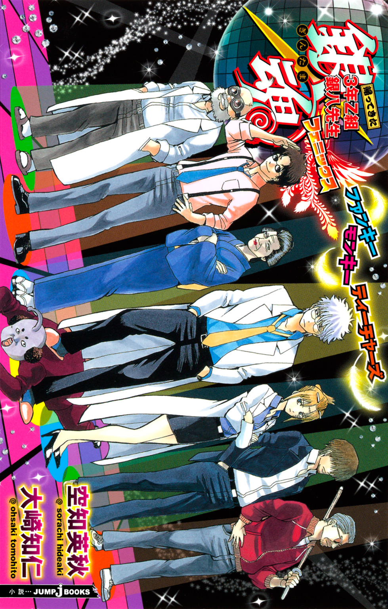
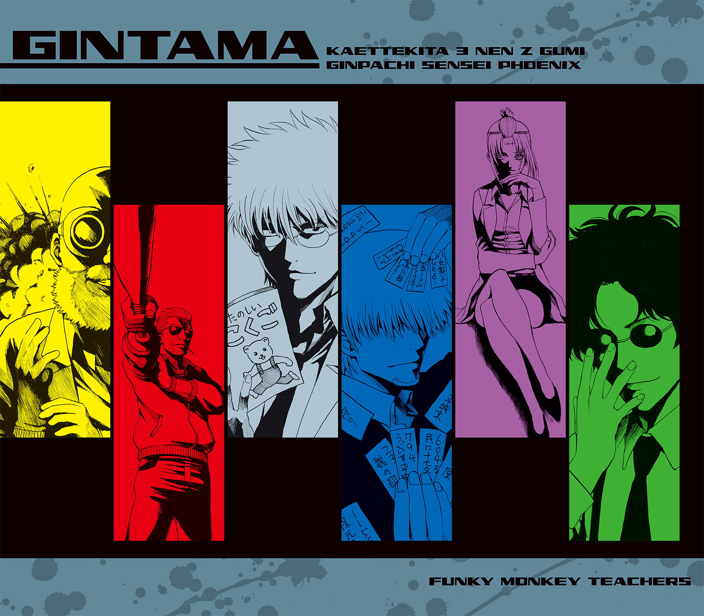
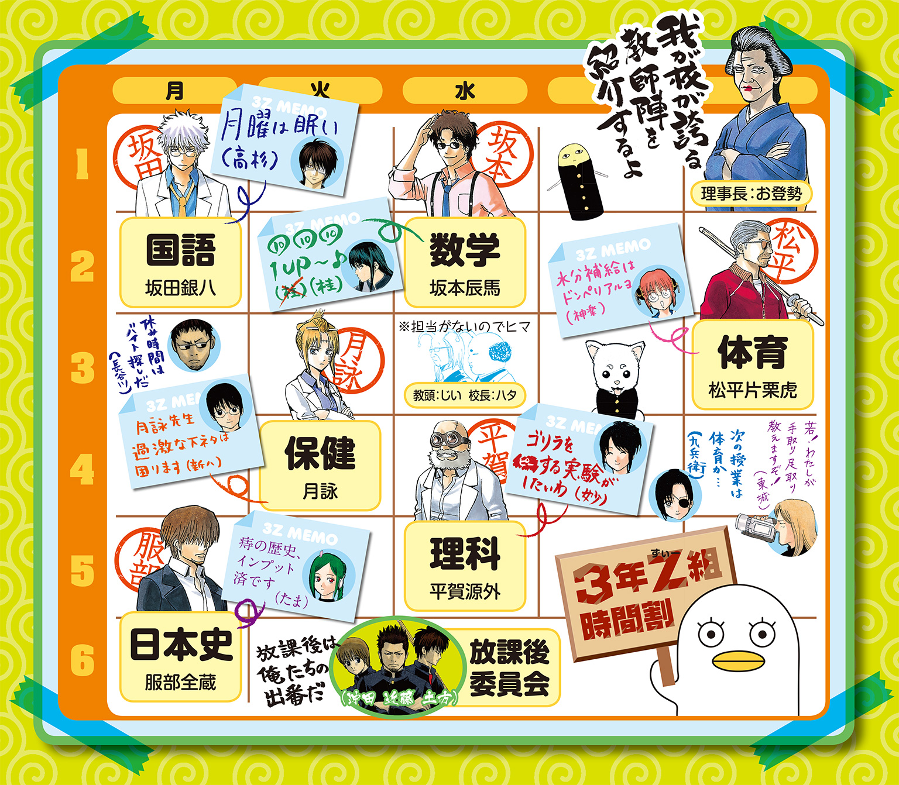
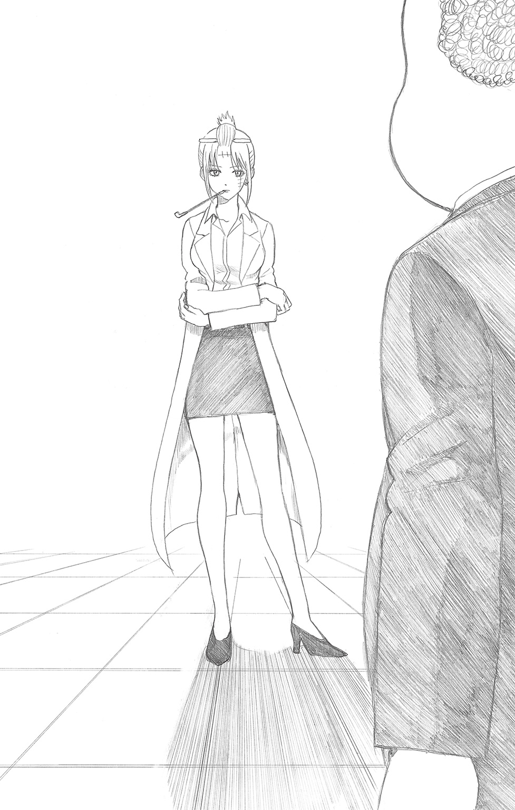
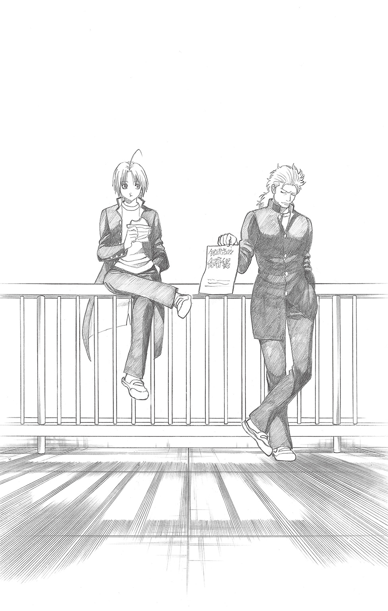
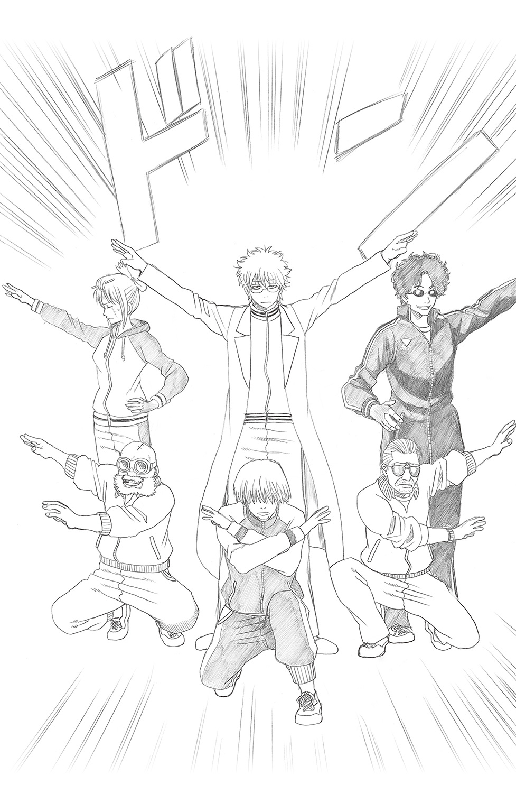

| 銀魂 帰ってきた3年Z組銀八先生フェニックス ファンキーモンキーティーチャーズ | |
| 空知英秋 & 大崎知仁 | |

この本は縦書きでレイアウトされています。
また、ご覧になる機種により、表示の差が認められることがあります。


この作品はフィクションです。
実在の人物・団体・事件などにはいっさい関係ありません。
え？ 誰もわかったなんて言ってない？ じゃあ、ごめん。
銀魂高校の職員室で、職員会議というやつが行われているのだった。
教師たちを前に、しかめっ面を浮かべているのはハタ校長。その傍らには、例によって教頭も控えている。
「このままではまずい。ヒジョーにまずいぞ、諸君」
そう言うハタ校長の背後の壁には、棒グラフの描かれた一枚の紙が張り出されていた。それは『銀魂高校の入学志願者数の推移』を表したグラフだった。
それによると志願者は、年々減少の一途を辿っている。そして、昨年度の数字は、過去最低を記録しているのだった。
「このまま入学志願者が減っていけば、近いうちに銀魂高校はつぶれてしまうぞ。君たち、それでもいいのか」
しかし強い口調でハタが言っても、教師たちの反応はいまいち鈍いのだった。特に発言する教師もいない。
「君はどう考えとるんだね、坂田先生」
ハタが指さしたのは、白髪の天然パーマに白衣のアンニュイ教師、坂田銀八である。
「しょーがないっちゃしょーがないんじゃないすか」
銀八は言う。
「少子化のご時世ですからね。子どもの数が減ってんですから、どこも大変ですよ。その点、ジャンプは頑張ってますよね、ずーっと子どもから支持されてんですから」
と言いながら、銀八はデスクでジャンプを読んでいる。
「......君に聞いたのが間違いじゃったな」
ハタはやれやれとかぶりを振ると、銀八の隣の教師に声をかけた。
「服部先生、君はどう考えてるんだね」
「そうですね。最近はジャンプＳＱ．も頑張ってると思います」
と、服部は大真面目に答える。
「うん、いや、そういう話じゃなくてね......」
「あー、確かにＳＱ．頑張ってるよな。『青エク』もヒットしたし」と銀八。
「『貧乏神が！』もアニメ化したしな」と服部。
「おい、君たち、とりあえずジャンプの話題から離れよーか」
ハタが言ったあと、教頭も続ける。
「そうですよ二人とも。職員会議のときは真面目にやってくださいよ」
と言いつつ、教頭は最強ジャンプを読んでいる。
「いや、おめーもな！ てゆーか、ジジイが児童向けのジャンプ読んでんじゃねーよ！」
「だったらジジイ向けのジャンプも作ってくださいよ！」
「どういう逆ギレ!? てか、ねーだろ、ジジイ向けのジャンプなんて！」
ハタがつっこんだところへ、銀八が言う。
「『週刊少年ジャンプ』じゃなくて『納棺昇天ジャンプ』とか？」
「こえーよ！ 読んだら死ねってこと？」
ハタはつっこんだあと、
「いい加減にせんか、君たち。今はうちの入学志願者が減っておるという話じゃ！ 我が校は今、とんでもなく不人気高校になっておるんじゃぞ！ ――松平先生！」
と、ハタはここで体育教師の松平片栗虎に顔を向ける。
「入学志願者を増やす、何かいいアイデアはないのかね」
「新入生にはドンペリをサービス、てのはどうだ？」
葉巻をくわえた松平が言う。
「相手は未成年じゃろーが！」
「うちの学校に入りたくなるように、空から催眠波でもばら撒くか？」
と笑うのは、理科教師の平賀源外だ。
「いや、そういう危ない方法じゃなくて！」
と、ハタがつっこんだときだ。
「すまんが、職員室はどっちかのう？」
と尋ねてきたのは、遅刻してきた数学教師の坂本辰馬だった。
「いや、ここだよ、ここ！ よかったな、偶然にも辿りついて！」
ハタが喚く。なんともはや、緊張感のない教師ばかりである。
「月詠先生！」
と、ここでハタは、今年、吉原商業から転任してきた教師、月詠にも声をかける。ちなみに月詠の担当教科は、保健体育。なのにミニスカートのスーツに白衣を羽織った、なんとも色っぽいファッションである。
「月詠先生は、何かよい知恵はないのか？」
「新入生にはローションをサービス、というのはどうじゃ？」
「だから！ 未成年にできるサービスにしろと言っておろーが！」
「いや、すまぬ。小説版初登場なのでな。最初の一言はボケたほうがいいと思って」

「うん、そういう気づかいはいらないから」
「では、これはどうじゃ？ 一日体験入学というのは」
と月詠が続ける。
「一日体験入学......？」
「うむ。来年受験を控えた中学生とその保護者を、この学校に招き、部活や授業の様子を紹介するのじゃ。参加者たちが好印象を持ってくれれば、口コミで自ずと学校の人気も上がるのではないか？」
新任の月詠の提案に、ハタはふむと頷いた。悪くないアイデアだと思ったのだ。
一日体験入学。大学だと、オープンキャンパスなどという言い方もするが、高校でもやっているところはある。
「いいんじゃねーか？」
と言うのは松平だ。
「キャバ嬢にも一日体験入店てのがあるんだ。口で説明するより、実際に現場に来てもらうほうが学校の雰囲気も伝わりやすいだろう」
そのたとえはどうかと思うが、言っていることに間違いはない。
「一日体験入学か。確かに悪くないな。じゃが問題は......」
と、ハタが続けようとすると、その先は服部が言った。
「問題は、実際にうちの学校を見て、参加者たちが好印象どころか最悪な印象を持っちまわねーか......てことだな」
「ま、なんせ、うちの学校は激烈キャラばっかりだからな。特に３Ｚ」
そう言ってゲラゲラ笑うのは銀八だ。
「いや、笑っとる場合か！ 君はそこの担任なんじゃぞ！」
ハタは銀八を指さして怒鳴る。が、銀八は涼しい顔だ。
「んなこと言われても、あんなバカども、俺一人じゃ制御できないっすよ。小説版五冊も出して、まだわかんないんすか？」
銀八の減らず口に、ハタはぐぬぬと歯ぎしりする。
「そんな他人事でどうする。そもそも、うちが不人気なのは、３Ｚの生徒があっちこっちでバカをやっとるせいもあるんじゃぞ。ほら、こないだも、高杉たちが騒ぎを起こしておったじゃろーが」
「あーはいはい、あれね」
銀八は頷いたあと、
「......おっと、今話題に出た、高杉たちの事件を知らない読者は、前巻の『冷血硬派高杉くん』を要チェケラだ！」
「いや、そういう宣伝はいいから！」
「だけど、あれだって、俺は解決に奔走したんすよ。むしろ特別ボーナス欲しいくらいっすよ」
銀八が言ったときだ。
「じゃあ、ボーナスをやろうじゃないか」
声のあと、引き戸がガラリと開き、理事長のお登勢が姿を現した。
煙管を片手に校長の横に立つと、お登勢は続けた。
「校長の言う通りだよ。うちの不人気ぶりは、もはや笑ってる場合じゃないところまで来てるんだ。本気で対策を考えないと、うちは生徒よりも教師の数のほうが多い学校になっちまう。そんな、客よりもバンドメンバーのほうが多い、新人バンドのデビューライブみたいな状態は、あんたたちも嫌だろう」
ま、確かに......みたいな空気が教師たちの間に流れた。
「それでなんだい、ちらっと聞こえたが、一日体験入学ってのをやんのかい？」
「ええ、まあ、そういう話になっておりまして......」
ハタが言うと、お登勢は教師たちに向けて語気を強めた。
「だったら、全員で知恵出して、その一日体験入学、成功させてみな。それがうまくいったら、全員にボーナスを支給しようじゃないのさ」
その言葉で教師たちの目つきが少し変わった。が、銀八だけは油断なく言う。
「ボーナスっつっても、ガバスとかペリカなら、いらねーっすよ？」
以前、同様のケースでハタ校長がボーナスをガバスで払おうとしたことがあるのだ。
「心配しなくても、ちゃんと本物の金で払うよ。ただし、成功したらの話だけどね」
理事長は言って、はっきりと頷いた。
腰の重い教師たちでも、鼻先にニンジンをぶら下げられたら目の色が変わる。
「よーし、わかった！」
銀八は勢いよくジャンプを閉じると、同僚教師たちに告げた。
「聞いての通りだ。ぶっちゃけ面倒だが、理事長直々にボーナスの約束をしてくれたんだ。銀魂高校一日体験入学、見事やりとげて、あの右肩下がりの棒グラフ、イデ●ンの肩ぐらい高くしてやろうじゃねーか！」
「たとえが古いだろ」
とつっこんだのは服部だ。しかしまあ銀八の呼びかけで、一応は教師たちも団結したようだ。
「ま、ボーナス出るなら、おじさん頑張っちゃおうかな。そろそろ新しいボトルも入れなきゃなんねーし」と松平。
「あんたがボトルなら、俺はボルトだ。ネジも結構たけーしな」と源外。
「わっちは新しいローション」と月詠。
「まあ、俺も痔の薬、買い溜めしときてーしな」と服部。
「それより、わしのデスクはどこかのう？」
坂本はまだウロウロしている。
団結はしたが、やはり不安を感じさせてしまう面子であった。この連中の手による一日体験入学、はたして――
「大丈夫なんじゃろーか......」
ハタが小さくもらすと、教頭が言った。
「いや、結構難しいと思いますよ、コレは」
見ると、教頭は最強ジャンプについているオマケの工作キットを必死に作っているのだった。
ハタはこめかみに血管を浮かせて言った。
「燃やすぞ？ オマケじゃなくてお前を」
銀魂高校の入学志願者が激減しているのだという。
だから、一日体験入学というのをやって、中学生や保護者に銀魂高校をアピールするのだという。
だからって、どうしてそれに自分たちが参加させられなきゃいけないんだ、と志村新八は思うのだった。
「仕方ねーだろ。うちの不人気の原因の一端は、３Ｚにもあるって言われちまったんだ。罪滅ぼしの意味でも、多少手伝ったってバチは当たらねーだろ」
担任の銀八はそんなことを言い、新八たちを一日体験入学のサポートに駆り出したのだった。
で、今日がその当日なのである。
放課後、校門をくぐって現れたのは、奇特にも銀魂高校に興味を持っているという二十名の中学生と、その保護者たち、総勢四十名である。
出迎えるのは、銀八をはじめとする教師たちと、お手伝いを仰せつかった３Ｚの面々。
「いいか、お前ら、あの四十人は、ただの四十人じゃねえ。今回の体験入学の感想を広めてくれる、いわば口コミのスタートになる四十人だ。丁重に扱えよ」
銀八が言うと、神楽が応じる。
「わかってるアル。要するに、あの四十人は、ネズミ講の最初のネズミってわけネ。丁重に扱うアル」
「いや、ネズミ呼ばわりしてる時点で、丁重じゃないけどね」と新八。
でもって、本日の一日体験入学であるが、メニューは次の二つだった。
部活紹介。
模擬授業。
一日体験入学の内容としては、わりとスタンダードだと言えるだろう。
さて、本日の進行を担当するのは坂田銀八。参加者の前に立つと、営業用のスマイルを浮かべて話しだした。
「えー、皆様、銀魂高校にようこそいらっしゃいました。今日は短い時間ではございますが、我が校の魅力をたっぷりとご紹介できたらと思っております。あ、申し遅れました。私、銀魂高校３年Ｚ組の担任をしております、坂田銀八と申します」
銀八の挨拶に、参加者たちからおざなりな拍手が起きる。
「えー、では早速ですが、本日最初のプログラム、部活紹介に参りたいと思います。高校生活を送るうえで、どの部活に入るかは、ヒジョーに重要な選択になってきます。片手剣なのかハンマーなのかランスなのか、そういうのを決めるぐらい大事なことなのです。今日は先輩たちが部活に取り組む姿をじっくりと見ていただき、実際に入学したときの参考にしていただけたらと思っております。――では、最初に野球部の練習を見学してみましょうか」
銀八がそこまで言ったときだ。参加者の一人の男子生徒が手を挙げた。
「あのぅ、銀魂高校の野球部って、メジャーリーグからスカウトが来るぐらい強いんですよね？ 僕、すごく楽しみです」
その一言に、銀八は「え......？」と固まった。
「メ、メジャーリーグ？」
「はい、鬼強い野球部だって、ホームページに書いてありましたけど」
「ホ、ホームページに？」
銀八が目を瞬かせると、そこへ坂本が静かに歩み寄った。
「金時、わしがホームページの内容を書き換えといたき」
坂本は銀八の耳元でそう囁いた。
「書き換えた？」
銀八は参加者たちに聞こえないように、彼らに背を向けると、小声で坂本に聞いた。
「書き換えたって、どういうことだよ？」
「今日の一日体験入学が盛り上がるように、ホームページの部活紹介のページを書き換えておいたんじゃ。無難な紹介文より、みんなの期待を煽るような文面のほうがええと思うてのう」
そう言って、かっかっかと笑う。
「いや笑ってる場合かよ！ なに余計なことしてくれてんだ、てめーは！」
「怒るな、金時。ショービジネスっちゅうのは、ショーが始まる前からお客さんを温めとくのが基本じゃき」
「だとしても、無駄にハードル上げてどうすんだよ！ 見ろよ、あの中学生たち。目ぇキラキラさせてんじゃねーか」
「その期待にこたえるだけのパフォーマンスを野球部がすればいいだけの話じゃろう」
「それができりゃ世話ねーんだよ！ メジャーリーグからスカウトが来るような鬼強い野球部って、うちの野球部、そんなに強かったか？」
そのとき、新八ははっと思い出した。
「あ、そういえば、松平先生、野球部の顧問じゃなかったでしたっけ？」
新八が言うと、教師たちの視線が松平にさっと向けられた。
「おい、どーなんだ、とっつぁん。今の野球部はつえーのかよ？」
銀八が聞くと、松平は余裕たっぷりに頷いてみせた。
「なかなかいい選手がそろってるぜ。メジャーのスカウトとまではいかねえが、プロに行けそうな奴もちらほらいる。ただ、今日は遠征試合で、全員いねえけどな」
「じゃあ、ダメじゃねーか！」
一瞬安心しかけた一同だったが、最後の一言でずっこけた。
「つーか、今日、遠征試合？ じゃ、なんで顧問のアンタが遠征試合に行ってねえんだよ！」
銀八が嚙みつくと、
「いや、実を言うと俺、今、顧問外されてんだよな。いっぺん酔っぱらってホステス同伴で試合行ったら、相手から苦情が来てよ。だから今、全試合出入り禁止なんだよね」
「なんだよね、じゃねーよ！ 最低の顧問じゃねーか！」
「でも、どうするんですか、先生。野球部いないのに、野球部の紹介なんてできませんよ」
新八がうろたえると、服部が冷静な声で言った。
「落ち着け、おめーら。こうなったら、今いる人間で野球部のふりをするしかねえ」
「野球部のふり？」
銀八が聞き返すと、服部は頷いた。
「本物の野球部はいねーんだ。俺たちで野球部を演じるしかねえだろ。幸い３Ｚがいるから人数は足りてる」
「だけど、お前......」
「十分間だけトークで繫いでてくれ。その間に準備する」
服部はそう言い置くと、３Ｚの生徒を何人か連れて、グラウンドのほうに走っていった。
「あ、ちょっと！ ......おいおい大丈夫かあ？」
銀八が表情を曇らせると、松平が言った。
「とにかく、あいつに任せるしかねーよ。今更、野球部はいませんなんて言えるわけがねえ」
「けどよ、十分間、どうやって繫ぐんだ？ トークっつっても喋ることあんのか？」
源外が聞くと、銀八は新八に目を向けた。
「しょーがねえな。ここはとりあえず、新八の得意な、手を使わずに眼鏡をかける芸で繫いでもらうしかねえ」
「いや、できないですけど!? そんな芸！」
新八は慌ててつっこんだ。
でも、結局やらされた。頑張って、手を使わずに眼鏡をかけてみた。
そして、スベった。
「いや、スベるに決まってるよね、こんな安い芸！」
で、十分後――
「――さ、皆様、お待たせいたしました。それでは今からグラウンドに移動して、野球部の練習を見てみましょう！」
銀八に先導される形で、参加者一行はグラウンドのバックネット裏に集まった。
「どうですか、白球を追う彼らの姿！ まさに青春の――」
と、満面の笑みで語りだした銀八だったが、その声はすぐに途切れた。
見ると、ユニフォームを着て、練習に精を出しているのは、屁怒絽とその兄弟――二郎から五郎たちだったのである。
えええ？ と、一同が凍りついたのは言うまでもない。
銀八の傍らに立ち、服部が言った。
「どうだい？ 急ごしらえだが、鬼つええ野球部だろ？」
「いや、鬼つええっていうか、まんま鬼じゃねーか！ 鬼ケ島の野球大会みてえになってるぞコレ！」
怪力無双の屁怒絽ブラザーズが投げたり打ったりしているから、飛び交う球はとんでもない剛速球になっている。
そこへ、おそらく気をきかせたつもりなのだろう、マウンド上の屁怒絽が言った。
「よかったら、誰かバッターボックスに立ってみませんか？」
しかし当然ながら、参加者たちは蒼ざめた顔で震えている。
「た――立つわけねえだろうが、こんなもん！ 間違ってデッドボールでもくらった日にゃ、リアルにデッドになっちまうぞ！」
むろん銀八のこのツッコミは、屁怒絽たちには聞こえないように囁き声にセーブされている。
「けどお前、誰も行かなかったら、盛り下がったまんまだぞ」と服部。
「バカ！ 屁怒絽のせいで十分盛り下がってんだよ！ 文句あんなら、てめーが行けや！」
銀八が言うと、服部は「しゃあねえな」と呟き、操り糸を使ってビニール人形をバッターボックスに立たせた。銀八にそっくりの人形である。
「いやオイ！ なに立たせてんだ、てめーは！」
「しょーがねえだろうが！ 誰も立たねーんだから！」
「にしても、人形立たせるこたあねーだろ！」
「あれは本来立たせるための人形だろ！」
「それ、立たせるの意味が違う意味になってるだろーが！」
銀八と服部が小声でそんな言い合いをしていたときだ。屁怒絽が投げたボールが、ビニール銀八に命中してしまった。
パンと弾けたビニール銀八は、空気を噴き出しながら空中を飛び、一塁の上に落ちた。
シーンと辺りが静まり返る。
「ま、まあ、デッドボールのときは一塁に行くもんだからね......」
銀八は参加者たちに笑いかけたが、その笑みは引きつっていた。参加者たちも、むろん笑っていない。
「......おい、やべーじゃねえか。最初からつまずいてるぞ」
「凹んでてもしょうがねえだろ。次の部活で挽回すりゃいいんだ」
松平がそう返すと、参加者の一人が手を挙げた。
「あのぅ、次はサッカー部を見せてもらいたいんですけど。......確か、ここのサッカー部には、神がかったプレーをする、翼君みたいな選手がいるんですよね？」
「つ......翼くんん？」
銀八は目を剝くと、はっとして坂本に顔を向けた。また教師同士で小声のやりとりが始まる。
「おい、てめーがそう書いたのか？ ホームページに」
「そうじゃ」
「そうじゃじゃねーよ！ どうすんだよ！ キャプテン翼ばりのプレーできる奴が、うちのサッカー部にいんのか？」
そこへ神楽がさらに悪いニュースを持ってくる。
「先生、まずいアル！ サッカー部は今日、合宿で全員いないみたいネ」
「またいねーのかよ！ つーかどんだけタイミングわりーんだよ、今日という日は！」
頭を抱える銀八に、服部が言った。
「落ち着けよ。こうなったら、俺たちでサッカー部のふりをするしかねえ」
「まだ懲りてねーのか、てめーは！ たった今、それでしくじったばっかりだろーが！」
「今度は人選に気をつける。翼君みてえな奴を用意すりゃいいんだろ？ 俺に任せとけ。お前らは十分間繫いどいてくれ」
またそんなことを言って、服部は準備に走った。
銀八がため息をついて言う。
「新八、しょうがねえ。今度はお前の得意な、牛乳を飲んで、目からちょっと出すって芸で繫いでくれ」
「だからできねーけど!? 僕、いつ得意だって言いました？」
しかし、新八は頑張ってやってみた。
そしたら、ちょっとだけ、目から牛乳が出た。
でも、スベった。
「あたりめーだろ！ こんな芸、そりゃスベるわ！」
で、十分後、一同はサッカーゴールの近くに移動していた。
「大丈夫なんだろーな？」
銀八が聞くと、服部は自信ありげに頷いた。
「ああ、ちゃんと用意したぜ、銀魂高校の翼君をな」
そのときだ。遠くから、サッカー部のユニフォームを着た選手が、一心不乱にドリブルをしながら近づいてくる。
で、よく見るとそいつは、段ボールの翼を背中につけたマダオだった。
「いや、翼ってこれェェェ!?」
銀八のツッコミがグラウンドに響く。
「ボールは友達さ！」
などと言って、マダオはドリブルで銀八たちの前を行ったり来たりする。
「どうだ、神がかったプレーだろ？」と服部。
「いや、神っつーより紙じゃん！ ペラペラじゃん！」
銀八がシャウトしたとき、参加者の呟く声が聞こえた。
「なんだよ、これ」
「茶番じゃねーか」
明らかに失望している声である。
「おいおい、さらに盛り下がってるぞコレ。どーすんだ」
銀八が服部を突くと、服部は余裕の表情を崩さずに言った。
「心配すんな。用意してあんのは翼君だけじゃねえ。ちゃんとライバル選手も用意してあるぜ。見ろ！」
と、服部が指さしたほうを見ると、なにやら猛スピードでこちらに向かってくる物体がある。
物体は、二人の人間だった。仰向けになり、半裸でローションまみれになった近藤。その上に、同じく半裸でローションまみれの東城が乗っている。ローションを利用して地面を滑っているのだった。
「これぞ、平成のスカイラブハリケーン！」
「バカだろ！ バカなオブジェだろ、あんなもん！」
銀八が叫んだとき、その高速移動するバカなオブジェに向かって走りだした者がいた。
月詠だ。
「ローションプレーなら、わっちも協力するぞ！」
言うや否や、全身ローションまみれの月詠が、近藤の胸の辺りに飛び乗った。月詠との接触で興奮したのか、近藤は盛大に鼻血を噴き出した。ローションを絆にした三人の集合体は、赤い鼻血の帯を引きながら疾走する。
「おお、まさに青春の熱き血潮！」
服部が叫ぶ。
「いやもう、うるせーよ！ あんなもん、世にも卑わいなジェットストリームアタックじゃねーか！」
銀八のツッコミが弾ける。
そこへ、段ボール翼君の声が聞こえた。
「ドライブシュートォォォ！」
ドリブルをしていたマダオが、ゴールめがけてシュートを放ったのだ。
だが、ボールはゴールから大きく逸れ、卑わいなジェットストリームアタックの三人にぶち当たった。そして、ドガシャアと分解した三人の近くに転がったのは、サッカーボールではなく、たまの首だった。
「いや、たまだったのかよ！」
銀八が叫ぶ。
「ボールは友達っていうか、友達の頭、ボール代わりにしてただけじゃねーか！」
段ボールの翼に、ローションまみれの男女。そしてロボットの首。
異様すぎる光景に、参加者たちは完全に引いてしまっていた。
「おい、どんどん客の心離れてるぞ。どーすんだよ！」
「こうなったら仕方ねえ。体育会系はやめて、文化系のクラブに移るぞ」
松平が言った。
銀八は、きっと坂本を睨む。
「お前、文化部もハードル上げるようなこと書いてんじゃねーだろうな？」
「いやいや、それはしとらんき」
と、坂本が言うので、とりあえず安心した様子で、銀八は参加者たちに告げた。
「え、えーと、皆さん。体育会系の部活はこれぐらいにしまして、次は文化系の部活も見てみましょうか」
「じゃあ、僕、ロボット研究部を見たいんですけど」
と言って挙手したのは、真面目そうな、いかにも理系の少年だった。
高専や工業高校以外では珍しいが、銀魂高校にはロボット研究部があるのだ。そして、そこの顧問は源外である。
「おい、じーさん。アンタのクラブ、大丈夫なんだろうな？」
銀八が聞くと、源外は顔をしかめた。
「いや、うちの部員たちも、今日はコンテストに出場してて、全員いねーんだ」
「はあ？ アンタんとこもかよ。なんで部員がロボットコンテスト出てんのに、顧問のアンタがここに残ってんだ」
「いや、ロボットコンテストじゃなくて、商店街の大声コンテストに出てるんだ、あいつら」
「ロボット関係ねーじゃねーか！ なんでロボット研究部が全員で大声コンテストに出てんだよ！」
「大声のレベルを測定するロボットがあってな、それの実験のために参加してんだ」
「じゃあ、ロボット関係あるじゃねーか！ なんなの、その裏切り！」
「ちょっと、言い合いしてる場合じゃないですよ」
新八が二人をたしなめる。
「どうするんですか、ロボット研究部の紹介」
「そうだよ、どうすんだ」
銀八が聞くと、源外は自信ありげに胸を叩いた。
「心配すんな。部員がいなくても、部員が作ったロボットなら部室にある。俺がそいつを使って実演してみせりゃいい」
「大丈夫なんだろーな？」
「任せとけ。今すぐにでも行ける」
「よし。じゃあ、とりあえず新八、お前の得意な、ブリーフの上から海パンをはいて、ブリーフだけ脱ぐ芸で繫ぐぞ」
「いや、話聞いてた!? 今すぐ行けるんだから繫ぐ必要ないですよね!?」
というわけで、新八の安い芸を挟むことなく、一同はロボット研究部の部室に移動した。
で、そこにあったのは、某メーカーのＡＳＩＭ●を彷彿とさせる、白いボディの二足歩行型ロボットだった。大きさは幼稚園児くらいだ。
「おいおい、結構本格的じゃねーか」
銀八が声を弾ませる。参加者たちの表情も、ここに来てやっと期待に満ちたものに変わっていた。
「動きのほうは大丈夫なんだろうな？ 見てくれだけじゃ、客は納得しねえぞ」
銀八が小声で聞くと、源外はここでも大きく頷いた。
「まあ、見てな」
そう言ってロボットの起動スイッチを入れると、ロボットは滑らかな動きで、そばにあった台から醬油さしを取り、小皿にちょっと垂らした。
「いや、パフォーマンス地味だな！ 歩くとか走るとか、できねーのかよ？」
銀八がつっこむと、源外は言った。
「歩いたり走ったりはできねえが、醬油を小皿に入れることなら、どのロボットにも負けねえ」
「なんに特化してんだよ！ 醬油かけるロボットなんか、そんなに需要ねえだろ！」
「バカ言うな。このロボットは、ただ醬油をかけるだけじゃねえんだぞ。寿司を食うとき、板わさを食うとき、卵かけご飯の卵にかけるとき、すべてにおいて適量の醬油をかけることができるんだ」
「その技術を他の性能に回せよ！」
「文句の多い野郎だな！ じゃあ、こっちのロボットだ！」
苛立たしげに言うと、源外は別のロボットを用意した。外見や大きさは、醬油さしロボットと似ているが――
「このロボットなら文句ねえだろ」
「また醬油かけまくるだけのロボットじゃねえだろうな？」
「このロボットは違う。心配すんな」
「ほんとか？ 醬油をかけるんじゃなくて、漢字で『醬油』って書けるロボットとかだったら承知しねえぞ？」
「バカ野郎！ 当ててんじゃねえよ！」
「当たってんのかよ！ なんなの、その醬油に対する異常なこだわり」
つっこむ銀八の背後で、中学生たちのため息が聞こえた。なんかショボい部活ばっかだな、とぼやく声も上がっている。保護者たちも、明らかに落胆の表情を浮かべている。
「おい、いよいよやべーぞ」
「けど、どの部活なら挽回できんだ？」
銀八と服部が言い合っていると、参加者の中から、一人の女子生徒が手を挙げた。
「あのぅ、ここの学校って、ＥＳＳとかはないんですか？」
銀八は「う......」と固まる。
「Ｅ、ＳＳ......？」
「はい、ＥＳＳです」
まさか知らないわけないですよね？ というニュアンスが、その女子生徒の言葉にはこめられていた。
「あ......あー、はいはい！ ＥＳＳね！ はいはいはいはい！」
でかい声で言う銀八は、完全に目が泳いでいた。
「先生、ほんとにＥＳＳ知ってるんですか？」
新八が聞くと、
「バ、バカ！ 知ってるに決まってんだろ！ ＥＳＳも知らねえで、教師なんかできるかってんだ。大体お前、アレだぞ、俺のＥＳＳ見たら、黒光りしててビックリすんぞ」
「いや、絶対に知らないっぽいコメントですよね、それ！」
新八がつっこんだときだ。
「ＥＳＳっつったら、これに決まってまさァ！」
と、沖田の声がした。
見ると沖田、犬の首輪をつけたさっちゃんを四つん這いにさせて歩かせている。
「Ｅ（えげつないほど）Ｓ（Ｓの）Ｓ（総悟）の略でしょう？」
「それはどんな部活なんだろーか!?」
銀八がつっこんだあと、さっちゃんが犬の体勢のまま言う。
「もしくは、Ｅ（えげつないほど）Ｓ（虐げられたい）Ｓ（猿飛）の略よ！」
「うん、もう黙ろうか！」
「Ｅ（えげつないほど）Ｓ（醬油を）Ｓ（さす）ロボットのことじゃねーか？」
「じーさんも黙ろう！ つーかもう納棺昇天ジャンプでも読んでて！」
ちなみに、念のため正解を書いておくと、ＥＳＳというのは、Ｅ（イングリッシュ）・Ｓ（スピーキング）・Ｓ（ソサエティ）の略。要するに英会話に親しむクラブのことで、銀魂高校には、ちゃんとそういうクラブが存在するのだが、それを知らない銀八たちが説明できるはずもない。質問した女子生徒も、もうどうでもよくなったのか、銀八たちを冷ややかに見つめている。
「あのぅ」
と、そこへ別の男子が手を挙げる。
「銀魂高校には、陶芸部はないんでしょうか？」
「と、陶芸部ぅ？」
銀八はイラっとして歯を食いしばると、また参加者たちに背を向け、教師同士の密談を始めた。
「なんなんだよ、さっきから。ＥＳＳとか陶芸部とか、マイナーな部活ばっかり言ってきやがって......」
「そもそも、うちの学校、陶芸部なんかあんのか？」
松平が聞くと、服部や他の教師たちは首をかしげる。
「聞いたことねえなあ。ねえんじゃねーか？ つーか、ねーだろ」
服部が決めつけると、銀八は「けどよお」と、ちらりと背後の参加者たちを見やる。
「ここは噓でも、あるっつったほうがいいんじゃねえか？ そのほうが客ウケもいいだろ」
「そうか。じゃあ、俺が陶芸部のふりをするから......」
「おめーにはもう頼まねーよ」
銀八が服部を素早く退けた。
「おめーは、どうせビニール人形並べるだけだろーが。その手法はもうこりごりなんだよ」
「ならば、私たちが引き受けましょうか？」
と、そこに声をかけてきたのは、武市変平太だった。意外な生徒からの申し出に、銀八たちは、少々たじろぐ。
「引き受けるって、お前......」
「我々高杉一派が、陶芸部のふりをしてあげましょうと言っているんです」
「高杉一派が？」
「別に悪だくみをしているわけではありませんよ。私たちも、学校の役に立ちたいという点では、先生方と同じ気持ちです」
武市の殊勝な発言に、銀八も警戒心を解いたのか、「じゃ、まあ......」と頷いた。
というわけで、武市に案内され、高杉一派の溜まり場にやってきた一行だったが――
まず目に入ったのは、作務衣を着た岡田似蔵だった。
似蔵は汗だくになって、陶芸用の窯から焼き上がったものを取り出している。
「よーし、焼けたぜ！ 最高のコロッケパン！」
「いや、パン焼いてんじゃねーよ！ 壺とか皿焼けよ！」
早速銀八のツッコミが炸裂する。
その隣では、同じく作務衣姿の来島また子が、一生懸命ろくろを回している。そして、そのろくろにセットされ、高速で回転しているのは、陶芸用の土を全身に塗りたくった河上万斉だった。
「ろくろでロックンロール！」
「いや、くだらねーし、気持ちわりーよ！ つーかもう、そのまま焼いてもらえ！」
で、その隣では、高杉晋助がひたすら壺を地面に叩きつけているのだった。
「俺はただ、壊すだけだ......」
「お前それ言いてえだけだろ！」
「その破片を集めて、ア●ンアルファでくっつけて、また壊すだけだ......」
「結局壊すのかよ！ なにがやりてーんだよ、その一連！」
「なにがやりてーのか、俺にもわからねーだけだ......」
「ムカつくわァ、その語尾！」
そこへ、武市が澄ました顔で言った。
「以上です」
「いや、終わりかよ！ 結局おめーら、ただボケたかっただけじゃねーか！」
「陶芸という縛りの中では、頑張ったほうだと思いますが？」
「頑張る方向間違えてんだよ！」
銀八は言うと、ちらりと参加者たちの様子を窺った。
盛り上がっている様子はみじんもない。それどころか、ほぼ全員が怒りの表情を浮かべている。
「おいおい、ありゃソートー怒ってるぞ。どーすんだよ」
「誰かフォローしたほうがいいんじゃねえか」
松平が言うと、銀八は３Ｚの中から、一人の生徒を指名した。
「しゃーねえ。土方、お前、ちょっとフォローしてくれ」
「はあ!?」
突然の指名に、土方が素っ頓狂な声を上げる。
「いや、無理でしょ！ そりゃこんなひどい部活紹介見せられたら、誰だって怒りますよ！」
「そこをフォロ方十四フォローの腕で、うやむやにしてくれっつってんだよ。そうじゃねえと、次の模擬授業に移れねえんだ」
「や、でも......」
「とにかく頼むわ」
と言って、銀八は強引に参加者の前に土方を押し出してしまった。
じろり、と参加者の冷たい視線に包まれた土方は、それでもなんとかフォローに努めた。
「えー、ゴホン、まあ、皆さんのお怒りはごもっともだと思います。こんな部活紹介を見せられたら、当然腹も立つでしょう。ですが、ここは一つ、広い心でこう考えてはいただけませんか？ 今、自分たちは部活紹介を見ていたんじゃない。珍しい生物を見ていたんだと。......野球部には恐ろしい鬼がいました。サッカー部には、段ボールの翼を生やした哀れなマダオがいました。言ってしまえば、彼らは皆、珍しい生物なのです。そして皆さんは、その生物を観察する、ある意味では生物部だったのです。おや？ 不思議ですねえ。皆さんは、部活を紹介されていたはずなのに、気がつけば、銀魂高校の生物部として活動しているではありませんか。そう、皆さんはもう銀魂高校の一員となっていたのです。......いかがですか？ こう考えたら、無意味に思えた部活紹介にも、少しは価値を見いだせるのではないですか？」
苦しいフォローだが、よくやったほうだろう。
しかし、そんな土方の肩をポンと叩いて、銀八は冷酷に言い放つのだった。
「３点」
「うるせーよ！ 結構頑張りましたけど!?」
フォロ方のフォローは不発に終わったが、一日体験入学はまだ続けられるのだった。
続いては、模擬授業である。場所は３Ｚの教室が使われた。
新八たちが普段使っている席に、参加者の中学生や保護者たちがつき、新八たちは廊下に出て、模擬授業のサポートに回ることになった。
「先生、部活紹介の失点をカバーしたいんなら、ここしかないですよ」
新八が言うと、銀八は険しい顔で頷いた。
「わかってるよ。そもそも、さっきの部活紹介自体が誤算だったんだ。あんなに部員不在のクラブばっかだとは思わなかったぜ。まあ、見てな。模擬授業こそが俺たち銀魂ティーチャーズの真骨頂だ」
銀八はそう言うと、教壇に立った。
参加者たちの期待感は、すでにゼロになり、帰りたいオーラがむんむんにあふれている。銀八は、しかしたじろぐことなく言った。
「えー、皆様。先程は大変お見苦しいところをお見せしました。ですが、学生の本分は勉強です。教室で行われる授業にこそ、その学校の姿勢や理念が表れるものではないでしょうか。......というわけで、これより模擬授業を行いたいと思います。では、最初は数学から参りましょうか。――坂本先生、お願いします！」
司会役の銀八が教壇を降り、入れ替わりに坂本が教壇に立った。
「えー、数学担当の坂本辰馬ぜよ。みんなは、高校の数学は難しいと思っとりゃせんか？ ところが、そんなことはないんじゃ。今日はわしと一緒に高校数学の入り口を覗いてみるぜよ」
坂本の前口上はなかなかにスムーズだった。どうやら遅まきながら教師たちも本気になってきたようだ。
「では、まず頭の体操からやってみようかの。わしが今から文章問題を出すき、みんなで考えるぜよ。みんなは、流水算というのを聞いたことがあるかのう」
そう言いながら、坂本はチョークで黒板に問題を書き始めた。
「......えー、ある船が、二十四キロメートルの川を下るのに、二時間かかったぜよ。そして、同じ川を上るのに、四時間かかったぜよ。船の速さと、川の流れの速さが常に一定だとすると......船の速度は......ふ、船の速度は......」
直後、オボロシャアァァと坂本が嘔吐した。
「ええええ？ ちょ、坂本先生！」
「す、すまん。ちょっと船酔いしたき......」
「いや、船酔いって！ 先生、文章問題に出てきた船でも酔っちゃうんですか？」
「そ、それだけ、文章問題に、感情移入しとる証拠じゃきボロロロ！」
「いや、問題文に感情移入してどーすんですか！ てか、もう語尾がゲロと同化してますよ！」
教壇はゲロの海と化している。それを見て、坂本が言った。
「で、では、文章問題はやめて、このゲロの面積を求めるぜよ」
「おいィ！ 最低の問題出してるよ、この人！」
「なお、このゲロの基本成分は、昼間の焼きそばとするぜよ......」
「どーでもいいわ！ つーかもう交代してください交代！」
青い顔でダウンした坂本は退場させられ、次に教壇に立ったのが服部だった。
「気を取り直して、日本史担当の服部です。えー、中学と違い、高校で習う歴史は、日本史と世界史に分かれています。今日は試しに、日本史の教科書を一緒に読んでみましょうか。......では教科書、百七十五ページ。『一八五三年、ペリーが黒船で浦賀に来航......』」
その瞬間、廊下にいた坂本がオボロロロと吐き始めた。
「なんでェェ？ ちょ、坂本先生!?」
つっこむ新八に、
「すまん。黒船という言葉に反応して......」
「いや、アンタどんだけ船に弱いんですか！ 服部先生、違うところ読んでください！」
新八が指示すると、
「わかった！」
服部は頷くと、教科書の別のページを読み始めた。
「えー、一五四九年、フランシスコ・ザビエルが船で薩摩半島に上陸......」
「オボロロロ！」
「これもだめかよ。......じゃあ、一五二二年、マゼランの率いた船が世界一周......」
「オボロロロ！」
「一九五六年、南極観測船として『宗谷』が......」
「オボロロロ！」
「波平の嫁が......」
「オボロロロ！」
「いやコレ、なんのやりとり!? 坂本先生、『船』に反応しすぎでしょ！ あと服部先生も！ 最後のやつ、明らかに教科書には載ってないですよね!?」
「や、悪い。なんかだんだん面白くなってきて......」
「言ってる場合ですか！ この辺り一帯ゲロまみれですよ！」
「うん、マジごめん。もう真面目にやるから、大船に乗ったつもりでいてくれ」
「オボロロロロロ！」
「わざとだろ！ 絶対今のわざとだろ！ もう交代してください交代！」
新八のシャウトで、服部も退場。次に登場したのが、月詠だった。
教壇に立ち、腕を組むと、月詠は言った。
「わっちの担当は保健体育じゃ。高校生になると体の発育も進み、より大人に近くなる。というわけで今から、ぬしらに『正しい子作りの方法』を教えてやろう」
「や、月詠先生？」
早くも心配になって、新八は口を挟んだ。
「相手は中学生ですから、あまり過激な内容は......」
「心配はいらん。どぎつくならんように、ほのぼのとした昔話っぽく話してやる」
「昔話っぽく、子作りの話ですか......」
いまいちわからない。首をかしげつつも、新八はいったん引き下がった。
月詠が話し始める。
「むかーし、むかし、ある村に、チン太郎という若者が住んでおった」
「いや、いきなり心配なんですけど！ チン太郎って......」
「黙って聞かんか。まだ始まったところじゃろうが」
そう言われて、新八は仕方なく黙る。
「チン太郎は、いつも、ボーッと空を眺めていることが多かったので、村のみんなからは、ボーというニックネームで呼ばれておった。さて、この村には、ボーの同級生の女の子も住んでおった。女の子の名前は、麻生弘子といって、みんなからは、アソコというニックネームで呼ばれておったそうな。ボーはアソコのことが大好きで、毎日アソコの家の戸を叩いては、『おーい、アソコ〜、入れてくれよ〜』と......」
「いや、もう無理でしょ！」
新八は大声で遮った。
「もうこれ以上はナシでしょ！ てか、なんなんですか、この昔話！ ボーとアソコって！」
「ボーとアソコが仲良くなって、時には摩擦も起きるが、最終的にはフィニッシュを迎える話じゃ」
「もうほとんど言っちゃってますよね、それ！」
「いや、まだイってはおらんぞ」
「おいィィ！ マジでもう黙れェェ！」
「なんじゃ、ぬしは文句ばかり言いおって」
「いや、文句とかじゃなくてですね......。月詠先生、あくまで今回は模擬授業なんですから、性教育じゃなくて、もっと別の内容にしません？」
「ならば次は、応急手当のマニュアルについて学んでみようかの」
「あ、絶対そっちのほうがいいです」
「だったら新八、ちょっと協力してくれるか」
月詠にそう言われ、新八は教室に入った。
「ぬしには、今からわっちの言う通りに、お手本を演じてもらいたい。ぬしは通行人じゃ。歩いていると、路上に倒れている人を見つけた。そのとき、ぬしはどういう行動をとるべきか。応急手当はここから始まる」
月詠の言葉に新八は頷いた。ようやくまともな模擬授業になったようだ。
月詠が言う。
「まず最初のアクションは、倒れている人に声をかけることじゃ」
「声をかける......」
「うむ。倒れている人の肩を叩きながら、もしもし大丈夫ですか、と大きな声で呼びかける。そうやって意識があるかどうかの確認をするわけじゃな。とりあえず、その部分をやってみるぞ」
「わかりました。でも、倒れてる人の役は......？」
新八が聞くと、月詠は教室の隅を指さした。
「すでにあそこにおる」
見るとそこには、一人の男が仰向けに横たわっていた。
銀八である。
「え、銀八先生が？」
これは少し意外だった。銀八はてっきり国語担当の教師として、あとから登場すると思っていたのだが......。
しかしまあ、誰であろうと関係ない。新八は銀八に歩み寄ると、片膝をつき、大きな声で呼びかけた。
「もしもし！ 大丈夫ですか？」
新八の呼びかけに、銀八がうっすらと目を開けた。そして掠れた声で言う。
「......いや、大丈夫じゃ、ねえ」
「え......？」
新八は目をパチクリする。
「そんな、大丈夫じゃないって......」
「新八、悪いが、俺ぁ、ここまでだ」
なんとも芝居がかった銀八の言い方に、新八は戸惑う。
「いや、先生これ、応急手当の手順なんですけど......？」
「手当しても、無駄だ......。俺ぁ、もう立てねえ......。模擬授業は、もうおめーらに、任せた......」
「いや、任せたって。えーと、これはどうしたらいいのかな......？」
新八が困って月詠の指示を聞こうとしたときだ。松平がそばに立って、言った。
「銀八、しっかりしろ！ まだ模擬授業の途中だろうが！」
励ます松平を見上げ、しかし銀八は弱々しい声で言う。
「とっつぁん、俺ぁ、もうだめだ。俺の模擬授業は、ここまでだ......」
「バカ野郎！ ここで頑張らねえでどーすんだ！ お前、模擬授業だけで飯食えるようになりたいっつってたろう！」
「いや、どーいうこと？ 模擬授業だけで飯食うって」
つっこむ新八にかまわず、服部も言った。
「そうだぞ、銀八。お前、模擬授業のプロになってハリウッド行くのが夢だっつってたろうが！」
「さらにわかんねーよ！ なんで模擬授業でハリウッド行けるんですか！」
すると、銀八が力なく笑って言う。
「......はは、確かに、言ったな。俺はハリウッドに行って、偉大なる模擬授業の先輩に追いつきたいって......」
「いや、誰なんですか、ハリウッドにいる模擬授業の先輩って！」
「モギー・デップ......」
「モギー・デップ!? ジョニー・デップじゃなくて？」
「アンジェリーナ・モギー」
「どこのパチモンだよ、それ！」
「モーギン・フリーマン」
「渋そうだな！」
「モギ健一郎」
「それ脳科学者ですよね!? てゆーか、さっきからこれ、なんなんですか？ なんかのドラマ？」
戸惑う新八をよそに、教師たちのやりとりは続く。
「......みんな、心配かけてすまねえ。そうだよな、ここで模擬授業やらねえと、男じゃねえよな......」
銀八は苦しげにそう言うと、よろよろと立ち上がろうとした。が、バランスを崩して、「くっ」と片膝をついてしまう。
「......ダメか。やっぱり昨日、素モギ、千回したのが響いてるのかもしれねえ」
「素モギ!? 素モギってなんですか？ なんか素振りっぽく言ってますけど！」
するとそこへ、坂本もやってくる。
「情けないのう、金時。素モギ千回でバテてしまうとは。そういうときは、モギの刺身でも食って、元気をつけたらいいぜよ」
「いや、モギって食べ物なんですか!? 模擬？ モギ？ おい、どんどんわかんなくなっていくぞ！」
「確かにあれは、唐揚げにしても、生クリームと混ぜてもうまいからのう」と月詠も。
「どんな食材だよ、それ！ モギってスイーツにもなんの!?」
そのとき、源外が緊張した声で言った。
「おい、モギモギしてる場合じゃ......いや、モタモタしてる場合じゃねえぞ」
「どんな間違いだよ！」
だが新八のツッコミにはかまわず、源外は続ける。
「このまま俺たちがモギ授業を中断してたら、そのうちモブ授業が始まっちまうぞ」
「モブ授業？ なんですかそれ」
そのときだった。教室に鋭い声が響いた。
「もう遅い！ もうモギ授業は終わりだ！ 今から俺がモブ授業を行う！」
声に振り返ると、山崎退が教壇に立っていた。
「や、山崎さん！ その格好は......？」
山崎は黒いマントを羽織り、悪の組織の親玉みたいになっている。
「モブ授業とは！ そう！ 俺のようなモブキャラが行う授業のことである！」
山崎はシャウトした。
「銀八先生、それから他の先生方も。もう、あなたたちはモギ授業をしなくても結構ですよ。今から俺がモブ授業をしますから。というより、今後一切の授業は、モブ授業に変更します」
「なんだと......？ どういうことだ」
銀八が睨み返すと、山崎は薄笑いを浮かべて言った。
「モブは群衆。モブは背景。モブは無個性。でもね、それでいいんです。教師に暑苦しいキャラクターなんかいらない。破天荒な教師も、涙ながらに人生訓を垂れる教師も、白衣でアンニュイな教師もいらないんです。俺のようなモブこそが、教師となって授業を行うべきなんです。今日ここまで、あんたらバカ教師のバカ騒ぎに付き合わされた、一日体験入学の参加者の皆さんも、それを望んでいるはずです」
「か、勝手に決めつけてんじゃねえ！」
銀八が言った。松平も続く。
「そうだ。型破りな教師のほうが、学校もおもしれーだろーが」
だが、山崎は冷笑を浮かべたまま首を振る。
「そういう考えが迷惑だと言ってるんですよ。教科書に書いてあることを、ただ粛々と生徒に伝える。授業とはそういうものなんです。激烈キャラの教師なんかいらない。......そうだ、今日はいい機会ですから、モブ授業の素晴らしさをお見せするとしましょうか」
山崎はそう言うと、マントから両手を出し、印を結ぶような動きをした。そして、なにやら呪文のようなものを唱え始める。
「泣くよ（七九四）山崎、モブ授業。人の世むなしい（一四六七）、モブ授業。以後四苦八苦（一五四九）のモブ授業......」
それは年号の語呂合わせに似ているが、よく聞くと違う。怨念のネガティブ語呂合わせだった。山崎がぶつぶつとそれを唱えるのに合わせて、教室が闇に侵食されていく。
「くそっ、なんて強烈な負のオーラだ......」
銀八が顔をしかめた。
「ずっとモブ扱いされてきた山崎の怨念が、闇の力と結びついたんだ......」
服部も苦しそうに言った。
「あのー、すいませんけど、応急手当の話は？ 今、模擬授業の途中ですよね？」
新八がつっこんだときだ。銀八がよく通る声で言った。
「山崎ィィ、お前の思いはよくわかった！」
闇の侵食に耐えながら、銀八は続けた。
「モブ扱いされたお前の恨みの深さは、よくわかった。だがな山崎、そりゃ誤解だ。俺は......いや、俺たちは、お前をモブだなんて思っちゃいねえ！」
しかし、山崎は呪文をやめない。闇の範囲がどんどん広がっていく。
銀八はそれでも続けた。
「山崎、お前にはミントンがあるじゃねーか。あんぱんがあるじゃねーか。モブだモブだといじられるのだって、裏を返せばお前の個性じゃねーか。俺は、俺たち教師は、ちゃんとそれをわかってるつもりだ！ だから......だから、自分をモブだなんて思うんじゃねえ！ それから、一日体験入学に来てくれたみんなにも、これだけは伝えたい！」
銀八はそこで声を大きくした。
「俺たち銀魂高校の教師は、生徒を誰一人モブ扱いしない！ 生徒一人ひとりと、ちゃんと向き合う！ それが、それこそが、銀魂高校スピリッツなんだ！」
銀八は熱く叫ぶと、両手を前に出して、印を結んだ。
「山崎！ そして体験入学の参加者のみんなも聞いてくれ！ ――なくしたものが見つかるぜ（七九四）、銀魂高校！ いっしょに無理難題を解決しようぜ（一四六七）、銀魂高校！ 行こう、至急！（一五四九）、銀魂高校！」
山崎のネガティブ語呂合わせに対抗した、銀八のポジティブ語呂合わせだった。語呂は悪いが、そのポジティブなフレーズが光となって、山崎の闇の力を退けていく。
山崎の詠唱の声が小さくなり、銀八のそれが大きくなっていく。
やがて教室を侵していた闇が完全に払われ、山崎自身も光で包まれた。
闇の力を失い、その場にうずくまった山崎に、銀八が、いや銀魂高校の教師たちが駆け寄っていく。
教師たちに助け起こされた山崎は、瞳を潤ませて言った。
「せ、先生、ありがとうございます......。僕、もうちょっとで闇に取り込まれるところでした。ほんとにありがとう！ 僕、銀魂高校に入って、ほんとによかった！」
「いいってことよ！」
銀八が笑い返すと、他の教師たちも口々に言う。
「ドンマイ、山崎！」
「元気出しなって！」
「ヒューヒューだよ！」
教師たちに囲まれ、山崎はさわやかな笑みを浮かべている。
そこへ、銀八が凜々しい声で告げた。
「笑顔あふれる学び舎、それが銀魂高校！」
銀八がそう言ったのに続けて、他の教師たちもさわやかに声をそろえた。
「ただいま入学願書受付中！」
「いや、ＣＭだったんかいィィィ！」
新八渾身のツッコミが教室に響き渡った。
その直後、教師たちは気づいた。
一日体験入学の参加者たちは、全員もうとっくに帰ってしまっていたということに。
静まり返った教室に、全力で演技をした劇団ティーチャーズと、客演山崎の熱気の余韻が、むなしく漂っていた。
新八は、教師たちに優しく言ってやった。
「......ドンマイ」
ややや？ 卒業生がやって来ない!!
放課後の職員室が、ちょっとにぎやかになっている。
松平のデスクの周りである。
「松平先生、お元気そうですね」
「おう、おかげさんでな。お前のほうは、まだ野球続けてんのか？」
「はい、大学で一応」
「そうか、頑張れよ」
「先生、私、大学で彼氏できたんだよ」
「ほほう、お前みたいなじゃじゃ馬でも、彼氏ができるんだな」
「ひっどーい、その言い方」
なんていう会話が、松平と数人の若い男女の間でかわされているのだった。
若い男女は全員私服で、松平のかつての教え子たちだった。卒業生が母校の恩師を訪ねてきた、という場面が展開されているのである。
ちなみに先週は、吉原商業で月詠のクラスだった女性数人が、月詠を訪ねて、この銀魂高校の職員室に顔を出していた。
かつての教え子が訪ねてくる。近況を聞き、思い出話に花を咲かせる。職員室で、たまに見かける光景である。教師にとって、実に幸せな時間であると言えるだろう。
だがしかし。
そうやって卒業生に訪ねてきてもらえる先生もいれば、もらえない先生もいるわけで――
「おーおー、にぎやかなこって。放課後のプチ同窓会が展開されてるじゃないの」
と、デスクでジャンプを読んでいるのは坂田銀八であった。
「しかしまあ、ああいうのはどうかと思うよ？ 昔の担任を訪ねて懐かしむのもいいけどさぁ、若者は過去じゃなく、もっと未来に目を向けるべきだと思うけどねえ」
「そんなこと言って、お前、ほんとはうらやましいんだろ」
チクリと刺したのは隣のデスクの服部である。
「はあ？ な、なにが？」
「とっつぁんのところには卒業生が来て、てめえんところには来ねえもんだから、嫉妬してんだろ」
「嫉妬なんかしてるわけねーだろ」
「そうかあ？ 無理してんじゃねーか？」
「してねーよ。つーかよ、そもそも卒業生なんかに来てほしいか？ こっちゃいろいろと忙しいんだよ。卒業生なんかに訪ねてこられたら業務に支障が出るってもんだ」
「んなこと言いながらも、実際に来てくれたら嬉しいくせによ」
「う、嬉しくなんかねーよ」
銀八はむきになって言い返す。
「大体よぉ、逆に聞きてえけど、卒業したあとまで、松平のとっつぁんなんかに会いたいもんかね。あんなもん、教壇降りりゃあ、トランクスにウン筋ついてる、ただの飲んだくれ親父だぞ」
銃声が響いたのは、その直後だった。銀八のデスクの花瓶が粉々に割れ、松平の声が届く。
「聞こえてるぞ、白髪頭」
対角線上のデスクで、松平がピストルをかまえているのだった。
「いやいや、とっつぁん！」
銀八は蒼ざめた顔でつっこむ。
「アンタ、教師設定だってことわかってる？ 職員室で本物の銃撃ってんじゃねーよ！」
「心配すんな。これは本物の銃じゃねえ。陸上競技のスタートのときに使うピストルに似せて作った密造拳銃だ」
「じゃあ結果、銃じゃねーか！」
だが銀八のツッコミにはもうとりあわず、松平はまた卒業生たちとの会話に戻っていく。
チッと舌打ちする銀八に、
「くっくっく、ひがむな、ひがむな」
と服部が笑う。
「トランクスにウン筋ついてよーが何だろーが、卒業生に訪ねてきてもらえるのは、教師にとっちゃ勲章みてえなもんよ。そういう点じゃ、あのとっつぁんは相当な勲章持ちだぜ。でたらめなところもある親父だが、生徒には慕われてるってこった」
確かに、松平を訪ねて職員室に来る卒業生は多いのだった。今日に限らず、今までも何人か来ていた。
服部が続ける。
「一昨日は源外のじーさんのところにも来てたし、いつぞやは数学の坂本んところにも卒業生が来てたな。先週は月詠んところにも女子が何人か来てたし......あれ？」
そこで言葉を切ると、服部は意地悪く笑みを浮かべた。
「あれあれ？ ちょっと待ってくださいよ。ひょっとして坂田先生のところには、今までに一度も......」
「はあ!? なに言ってんの？ なに言ってんの？ 卒業生だろ？ 来てるよ？ めっちゃ来てるよ？ もうマドハンドかっつーくらい来てるよ？」
慌ててでかい声を出した銀八だが、服部の意地悪な笑みは消えない。
「ええ？ そうかなあ？ 記憶にねえけどなあ」
「来てるっつってんだろ！ つーかよ、服部。お前のほうこそ上から言ってるけど、お前のところはあんのかよ、卒業生が訪ねてきたこと......」
と、銀八が言ったときだ。職員室の引き戸が開き、服部のデスクに数人の若者が駆け寄ってきた。
「服部先生、お久しぶりです！」
「お久しぶりです！」
「おお、お前たち！ 久しぶりじゃないか！ よく来たな！」
服部のかつての教え子たちなのであった。
彼らを迎えつつ、服部はちらりと銀八のほうに視線を飛ばす。にやりとした口元の笑みは、これでわかったろ？ という余裕の笑みだった。
く、この......、と銀八は歯嚙みする。
そのとき動いたのが、向かいのデスクの月詠だった。
月詠は静かに席を立つと、職員室を出ていき、私服に着替えて戻ってきた。そして銀八のそばに来て言う。
「え、えーと、確かこの辺りに、昔私の担任だった坂田先生の机があるはずなんだけど、どこかなぁ」
「いや、やめてくんない!? 気ぃつかって卒業生のふりするの！」
銀八は顔を真っ赤にしてつっこむ。が、月詠は続ける。
「坂田先生には本当にお世話になったから、卒業したあとも会いたくなって来ちゃったけど、先生迷惑じゃないかなぁ」
「うん、そのでかい独り言もやめて！ なんか慰められてるみたいで辛くなるから！」
「ふ、そうやって卒業生のふりでもしてやんなきゃ、今のお前は痛々しくて見てらんねーってことだよ」
服部が言う。
「まったく悲しいもんだねぇ、卒業生に訪ねてきてもらえない教師ってのも」
「おいおい、待て待て。なんか俺だけ訪ねてきてもらってない感じになってっけどよ、じゃあ校長や教頭はどうなんだよ？ あの二人に教え子が訪ねてきたことなんて、今までに......」
そのときだ。引き戸が開き、当のハタ校長と教頭が職員室に入ってきた。
「坂田先生、残念じゃったな」
ハタが言い、
「我々のところにも、卒業生は来るぞ」
教頭も言った。
にやにやと笑う触角二人組は、それぞれ自分の両脇に、いかにも卒業生と思しき数人の若者を引き連れているのだった。
「あ、あんたらまで......！」
ガーンと打ちのめされる銀八、だがすぐに気を取り直して言う。
「いや......まだだ。まだ理事長がいるだろ。さすがにあのババアのところに卒業生は......」
「甘いね」
という声とともに現れたのは、そのお登勢理事長。煙管を片手に近づいてくるお登勢の背後には、ひとクラス分はいようかというほど、大勢の卒業生たちがつき従っているのだった。
「いや、人数多いなオイ！ つーかそれ、全員あんたが担任してた生徒？」
「そうさ。今でこそ理事長だが、昔は私にも教員時代があるからね。この子たちは、そのときの教え子さ。ふ、やっぱりいいもんだね、昔の生徒に訪ねてきてもらえるってのは」
ここに至って、銀八はとうとう敗北感に膝を折るのだった。
「マジかよ......。そんな、どうして俺だけ......？」
弱々しく呟く銀八に、服部が静かに近づいて言う。
「どうだ、これでお前も認める気になったか？ この学校で、卒業生に訪ねてきてもらっていない教師が、自分一人だってことを」
銀八は力なく頷く。すると今度は松平が聞く。
「銀八よ、お前も、なりてえか？ 俺たちのような、卒業生に訪ねてきてもらえる教師に」
銀八は、やはり力なく頷く。
「だったら」
と、言葉を継いだのはお登勢だ。
「今からアンタには試練を受けてもらおうじゃないか」
「試練......？」
「ああ。アンタが、卒業生に訪ねてきてもらえる教師になるための試練さ」
「......で、今からその試練とやらが始まるわけですか。しかも公開形式で」
新八が呆れ顔で言うと、月詠は頷いた。
「そういうことじゃな。ま、あまり意味のある試練とも思えんが......」
放課後、新八と神楽が課題のプリントを届けに来ると、職員室がすっかり様変わりしているのだった。
なにやら天下一武道会のようなバトルステージが作られ、ステージの奥には巨大モニターまである。モニターの上部には看板も取り付けられていて、そこには、
『目指せ！ 卒業生が訪ねてくる教師！ 坂田銀八、地獄の公開レッスン！』
と、流血をイメージさせる書体で書かれている。
でもって、当の銀八は、ステージの中央、クイズ番組の解答者席のようなブースにスタンバイしているのだった。
「いやいや、ツッコミどころありすぎでしょコレ」
新八はため息をつく。
「いきなりこんなもの作るなんて、もはやこの小説、学園物じゃなくなってるじゃないですか。それにそもそも、卒業生に訪ねてきてもらいたいって、そんなの、僕らがＯＢになったときに先生を訪ねてあげればいいだけじゃないですか。わざわざ試練なんか受けなくても......」
「そういう温情的な訪問は望んでないってことなんだろ」
そう言って隣に立ったのは、源外だった。
「あいつはあくまでも試練を乗り越えて、訪ねてもらうのにふさわしい男になろうとしてんだ。見ろよ、あいつのツラ。珍しくやる気になってんじゃねーか」
源外の言う通り、ステージにいる銀八は、睨みつけるような目をして、口を真一文字に引き結んでいる。
「確かに、今日は死んだ魚の目になってないアル。眉毛と目の間隔が狭いアル」
と神楽も言う。
で、職員室がこんな感じになっているから、当然見物客も集まりだし、周囲は次第に熱気に包まれていくのだった。そして、しばらくののち――
「レディース＆野郎ども！ 今日はよく集まってくれたな！」
マイクを手に、ステージで挨拶を始めたのは松平だった。
「今日はここにいるマダオ（まだ誰も卒業生が訪ねてこない男）、坂田銀八に、俺たちが試練を与えて、新たなマダオ（マドハンドかっつーくらい団体で卒業生が来ちゃう男）に生まれ変わってもらおうと思っている。試練に打ち勝てるかどうかは、こいつの頑張り次第だ。ま、しっかり応援してやってくれや」
松平はそう言うと、ステージの端にある審査員席に引き上げた。
審査員席には、松平のほか、服部、お登勢、ハタ、教頭なども並んでいる。どうやら今回の試練、主催者はあの先生たちのようだ。
審査員席についていない月詠と源外は、今回の件に関しては傍観派で、ここにいない坂本はおそらく遅刻か迷子だろう。
松平が下がったあと、入れ替わりにステージに進み出たのは、花野アナだった。
ハンドマイクを手に、花野アナが言う。
「司会進行をつとめます、放送部の花野です。それでは早速、公開レッスンに入りたいと思います。が、その前に坂田先生、意気込みのほうはいかがでしょうか？」
花野アナにマイクを向けられた銀八は、力をこめて言った。
「銀魂高校、国語科担当、坂田銀八です！ 坂田を訪ねて三千人、行列のできる坂田、そういう坂田を目指して頑張りたいと思います！」
「ありがとうございます。それではただいまより、最初の試練に入りたいと思います。最初の試練は、『クイズ！ この人は誰でしょう！』のコーナー」
タイトルコールのあと、音楽が流れ、花野アナがルールの説明を始めた。
「最初の試練は、写真を使ったクイズになります。今から、あちらの巨大モニターに、銀魂高校にたいへん縁の深い方の写真が映し出されます。坂田先生は、その写真を見て、それが誰なのかをお答えください」
「要するにこれは――」
と、説明を引き取ったのは、審査員席の服部だった。
「お前が人物の顔をきちんと覚えているかどうかを試すクイズだ。教師たるもの、生徒の顔をきちんと覚えておくのは、絶対に必要なスキルだ。お前にそれが備わってるかどうかを試させてもらう。......ただし、あくまでもこれは試練だ。出てくる写真は生徒とは限らねえ。だが、お前が普段から学校関係者の顔をよく見て、そして記憶できていれば、難なく答えられるはずだ」
「上等だよ」
服部の説明を聞いた銀八は、不敵に笑った。
「別にシルエットで答えろとかじゃねえんだろ？ ちゃんと写真が出てくるなら楽勝だ。全問正解してやるぜ」
銀八の余裕のコメントのあと、花野アナが告げた。
「それでは、第一問です！ この人は誰でしょう！」
ババンと効果音が鳴り、モニターに一人の男の写真が映し出された。
老人である。額から触角が生えているが、ハタや教頭ではなかった。
「さあ、この人は誰でしょうか。坂田先生、お答えは？」
「いや、え......？」
銀八は目を瞬いてモニターを見つめる。
「や、お答えはって言われても、つーかこの人、ほんとにうちの学校に縁のある人なの？」
「そうですよ。さあ、解答をどうぞ」
花野アナはそう言うが、しかし銀八は首をかしげるばかりだった。
チッカ、チッカ、とシンキングタイムの効果音がしばらく流れたが、銀八は答えられない。結局、ブッブーという不正解音が鳴ってしまった。
「残念！ 坂田先生、時間切れです。正解は、こちら！」
花野アナがモニターを指さすと、そこに正解のテロップが表示された。
『学校に百葉箱を納品してくれた業者さん（ハメック星のデルデのじいちゃん）』
「いや、わかるか！」
銀八は解答者席を叩いた。
「百葉箱の業者さん？ いやいや、俺が応対したんならともかく、そうじゃねえんだから知らねーよ！ つーか、そもそもハメック星のデルデのじいちゃんって誰だよ！」
「デルデのじいちゃんは、コミックス23巻、第二百二訓、土方さんが禁煙に挑戦するエピソードに登場した方ですね」
「じゃあ本編でも俺とからんでねーんじゃねえか！ だったらなおさら知ってるわけねーだろ、そんな奴！」
「おいおい、からんでなくてもデルデのじいちゃんぐらいチェックしとかねえと、卒業生に訪ねてもらえねえぞ？」
そう言って審査員席でにやにや笑うのは松平だ。
「いや、何人の読者が覚えてんだよデルデのじいちゃん！」
銀八はつっこむが、問題はさらに続く。
「第二問です！」
花野アナが言って、ババン。モニターに次の写真が映し出された。
それは、シルクハットをかぶり、眼帯をつけ、マントを羽織った男の写真だった。
「さあ、この人は誰でしょう！」
「いや、ちょ、これも......」
銀八は戸惑いながらモニターを凝視する。が、やはり答えることができない。シンキングタイムの効果音のあと、ブッブー。またしても時間切れとなってしまった。
「残念、坂田先生、またも時間切れです。では正解を見てみましょう。正解はこちら！」
花野アナがモニターを指さすと、正解のテロップ。
『定期的に百葉箱のメンテナンスに来てくれる人（ヨドバツキャメラの店長）』
「だから知らねーよ！」
銀八がシャウトする。
「俺、別に百葉箱の係じゃねえから、こんな人知らねーよ！ あと、ヨドバツキャメラの店長？ 誰だよソレ！」
「ヨドバツの店長は、お前も本編でからんでるはずだぞ」
服部が言い、花野アナが説明した。
「ヨドバツキャメラの店長は、コミックス17巻、第百四十七訓、弁天堂ＯＷｅｅをかけて、万事屋チームと真選組チームがゲームで対戦するエピソードに登場した方ですね」
「ですね、じゃねーよ！ どんだけ古いエピソードから引っ張ってきてんだよ！ 今、コミックス46巻までいってんだぞ！」
「続きまして第三問です！」
「とことんマイペースだな司会者！」
銀八のツッコミに、ババンという音が重なり、次の写真が映し出された。
サングラスをかけた、屈強な外国人風の男性である。
「さあ、坂田先生、この人は誰でしょう？」
花野アナが聞くと、銀八はもう投げやりな表情でかぶりを振る。
「も、ダメ。全然わかんねえ。もうアレでいいんじゃない、百葉箱の周りの草むしりをする人ってことで」
「あーっ！ 坂田先生、惜しい！」
花野アナが悔しそうな顔で言い、モニターを指さした。
「正解は、これです」
表示されたテロップは、
『百葉箱の周りの草むしりをする人を養成するインストラクター（インストラクター）』
「もう日本語がわかんねーよ、このテロップの！」
銀八は吐き捨てるようにつっこむ。
「え、なに？ この人はインストラクターさんなの？」
「はい、コミックス27巻、第二百二十九訓、新八さんと神楽さんが修業して強くなろうとするエピソードに登場した方ですね」
「ふうん。で、なに？ 小説版では、銀魂高校の百葉箱の周りの草むしりをする人......」
「を、養成するインストラクターという設定ですね。では、続きまして第四問！」
「いや、待て待て！」
慌てて銀八は花野アナを止める。
「そんな説明で納得できるかよ！ つーか、なんなのさっきから、このクイズ。百葉箱の関係者しか出てこないじゃん。そもそも読者は知ってんのか、百葉箱」
そこへ、神楽が挙手して聞いた。
「先生、百葉箱ってなにアルか！」
「ほら見ろ、知らねー奴いたじゃねえか」
すると、近くにいた月詠が答えた。
「百葉箱というのはじゃな、中に温度計と湿度計が置かれた箱のことで、そのかげで男と女がバコバコする箱のことじゃ」
「いや、後半まるまる間違ってんじゃねーか！ そんなふしだらな箱じゃねーよ、百葉箱は！」
銀八がつっこむと、
「お前、クイズには答えられねえくせに、ツッコミだけはばんばん入れてくるじゃねーか」
服部が言う。
「いや、別につっこみたくてつっこんでるわけじゃねーよ。出てくる問題に問題があるからその問題点を指摘してるだけだろーが」
「まったく文句の多い野郎だぜ」
と、ドンペリを飲みながら言うのは松平である。
「じゃあ、写真のクイズはここまでにして、次の試練に移ってやるよ」
「いや、人に試練与えといて飲んでんじゃねーよ！」
銀八は拳を固めて言うが、松平はとりあわない。そして試練はさらに続くのだった。
「それでは続いての試練です！」
花野アナが仕切り直して、タイトルをコールする。
「続いての試練は、『卒業証書を渡してみよう！』のコーナー！」
音楽が鳴り、ルールが説明される。
「このコーナーでは、坂田先生に卒業証書を渡すシーンを演じてもらいます。場面設定はこうです。――卒業式の日、体育館での式典のあと教室に戻り、最後のホームルームが始まります。そこで、坂田先生は、生徒一人ひとりに卒業証書を渡していきます。その際先生には、生徒に対して、なにか言葉をかけていただきます。もちろんアドリブでかまいません。このとき、どれだけ生徒の心に残る言葉をかけてやれるか、これをチェックさせていただきます」
「言ってみりゃ担任の最後の見せ場だ」
例によって服部があとの説明を引き取る。
「最後ってことは、つまり最高の見せ場ってことでもある。巣立っていく教え子に、最後の餞の言葉をかけてやる。この場面でビシッと熱いセリフでも言えりゃあ、生徒の胸に、お前という教師は強く印象づけられる。その結果、どうなる？ 卒業したあとでも訪ねてきてもらえるって寸法よ」
「ふ、やっとそれっぽい試練になってきたじゃねえか」
銀八はにやりと笑う。
「要は生徒に卒業証書を渡して、前向きな熱いこと言やあいいんだろ？ 任せとけ、シリアスモードの銀さんは、歩く名言集だぜ」
銀八が言ったあと、準備が整えられた。
クイズの解答者席が運び出され、替わりに教卓と卒業証書が用意される。
花野アナが言う。
「それでは始めたいと思います。ここに用意させていただいた教卓は、特殊な装置を内蔵しておりまして、目の前にバーチャルの生徒を出現させることができます。先生は今から、ここに出現するバーチャル生徒に、担任らしい言葉をかけてあげてください。よろしいですか？」
「生身の人間じゃなくて、ホログラムってわけか。ま、いいだろう。そういうゲームだと思やいいんだからな」
銀八が言うと、花野アナが続けた。
「では、最初のバーチャル生徒さんの登場です！ どうぞ！」
花野アナの声のあと、教卓の前に一人の女子生徒が現れた。
セーラー服を着て、頭に白い三角巾をつけたその女子生徒は――白水ピン子だった。
「いや、いきなりハードル高そうだなオイ！」
「ちなみに白水ピン子さんは、コミックス40巻、ラブチョリス編に登場した方ですね。では先生どうぞ」
「いや、どうぞじゃねーよ！ ラダトームの城出たら、いきなり竜王に遭遇したようなもんだぞコレ！」
銀八はたじろいだが、一応はトライする。
「あ、あー、ウホン。白水、卒業おめでとう」
「めでたくなんかありません......。だって......だって......私の卓蔵は死んでしまったんですから」
と、いきなり不幸オーラ全開のピン子に、銀八は「う......」と言葉に詰まる。
「う、うん、まあ、辛い気持ちはわかるがな。少しだけ先生の話を聞いてくれ。まあその、なんだ、今日お前は、この学校を旅立ち、新たな世界に踏み出すわけだが......」
「私の旅立ちなんて、どうでもいいんです。卓蔵は、お空に旅立ってしまったんです......」
「うん、で、まあ、その新しい世界でだ、お前にはきっと新しい出会いがあることだろう」
「新しい出会いなんていりません......。私には卓蔵さえいれば......ううっ」
「だ、だから大丈夫だ、白水！ そんなに気落ちすることない！ たくましく生きていけ！」
「卓ましく!?」
「や、だからお前の前途は明るい！ お前なら、なんだってやれるさ！ よし、この国の未来は、お前にたくそう！」
「卓蔵!?」
「うん、やっぱコレ無理!!」
と、ここで銀八はギブアップ宣言。
「もう全然ダメじゃん、この人！ なに言っても卓蔵のことで頭いっぱいじゃん！ たくそうとしても卓蔵になっちゃうじゃん！」
「悲しみに暮れるピン子を、前向きな言葉で励ましてやるんだよ。それぐらいのことができねえでどうする」
服部が言うと、
「いや、こんな短い時間で、こんな深い悲しみ癒せるわけねーだろ！」
「だったら、卒業したあとも、お前が定期的にピン子のところに行ってやったらいいじゃねえか」
「おかしーだろ、その展開！ それはもはや、卒業生が俺を訪ねるんじゃなくて、俺が卒業生を訪ねていってんじゃねーか！」
そこへ花野アナが言った。
「あ、坂田先生、よそ見しないでください！ 次の生徒が登場しますよ！」
「次の生徒ぉ？」
銀八が教壇の前に目を戻すと、そこに一人の男子生徒が現れた。
詰襟の学生服を着たその生徒は、エナリだった。
「やっぱりかよ！ うすうす予測してたけど、やっぱりエナリかよ！」
「ちなみにエナリ君は、コミックス40巻、ラブチョリス編に......」
「言わなくてもわかってんだよ、そんなこたあ！」
説明しかけた花野アナを銀八は遮る。
「でしたら先生、エナリ君にも言葉を」
「だーもう、わかったよ！」
銀八はやけ気味に言うと、卒業証書を手にして、エナリに向き直った。
「えー、エナリ君、卒業おめでとう」
「そんなこと言ったってしょうがないじゃないかァ」
「この三年間の高校生活で、君はたくさんの経験をしたことと思う」
「そんなこと言ったってしょうがないじゃないかァ」
「その経験はすべて、これから君が生きて行く上での貴重な財産だ」
「そんなこと言ったってしょうがないじゃないかァ」
「辛いとき、苦しいとき、悲しいとき」
「そんなこと言ったってしょうがないじゃないかァ」
「そんなこと言ったってしょうがないとき、いろんなときがあると思う」
「そんなこと言ったってしょうがないじゃないかァ」
「だけど先生はお前に言いたい」
「そんなこと言ったってしょうがないじゃないかァ」
「話を聞けェェェ！」
叫びながら、卒業証書を引き裂く銀八であった。
「なんなの、こいつ。『そんなこと言ったってしょうがないじゃないかァ』の一点張りじゃん！ 教師の言葉に耳傾ける気ゼロじゃん！ こんな生徒になにか言ったってしょうがないじゃないかァァァ！」
シャウトする銀八に、花野アナが慌てて言う。
「先生、そんな大きな声を出さないでください！ いきなりそんな声出すから、ほら......」
花野アナが床を指さすと、なぜか口から血を吐いたエナリが突っ伏しているのだった。
「ピン子さんのエナリが冷たくなってしまいました」
「なんでだァァァ！ なんで俺がでかい声出したらエナリが死ぬんだよ！ どういうシステム!?」
「あなた、卓蔵に続いて、私のエナリまで......」
と、そこへ涙声のピン子が詰め寄ってくる。
「いやいや、待て待て！ エナリはさておき、卓蔵は俺のせいで死んだわけじゃねーだろ！」
「言い訳はやめて。許してほしいなら......許してほしいなら、仰げば尊し、百回歌ってよォォ！ そうすれば、エナリ生き返るからァァ！」
「いやもう、わけがわかんねーよ！ なんで仰げば尊し百回でエナリが蘇生するんだよ！」
そこへ、
「♪あおーげばー......」
と歌いだしたのは、赤ら顔でトランクス一枚になった松平である。
「なんでおめーが歌うんだよ！ てか、その酔い方、完全に出来上がってんじゃねーか！」
「いえ、出来上がってませんよ、まだ途中です」
と言うのは、松平の隣で最強ジャンプのオマケを作っている教頭である。
「お前、好きな！ 付録作るの、ほんと好きな！ つーかそれ、今やんなきゃいけないこと!?」
と、そこへお登勢とハタの声が、
「ヘイヘイ、つっこんでる暇があったら、試合に集中しろよ！」
「ピッチャーびびってる、ヘイヘイヘイ！」
「いやもううるせーよ！ 相手チームのベンチか！ もう俺が卒業してえよ、この状況から！」
つっこみまくる銀八に、花野アナが言う。
「先生、やけにならないでください！ ほら、また新たな生徒が登場しますよ。気持ちを切り替えて、次の生徒に臨んでください」
で、登場したのが、包帯姿の片翼の天使、ブルー霊子だった。
「飛べない私だけど、卒業してもいいですか？」
口の端から血を流した霊子がそう言うと、花野アナが冷静に説明を加えた。
「ブルー霊子さんは、コミックス39巻、第三百四十三訓で、銀さんがブルーレイを買いに行くエピソードで登場しましたね。では先生、はりきってどうぞ！」
「いや、はりきれるわけねーだろ、こんなもん！ どんだけ俺に試練課すんだよ！ 卓蔵のことでブルーになってるピン子と、冷たくなったエナリがいるところにこいつ!? ブルー度うなぎ上りじゃねーか！」
「先生、つっこんでないで、早く言葉を！」
「わーったよ！ 霊子、卒業おめでとう！ まあその、アレだ、卒業ってのは......」
だが、霊子はすぐに銀八の言葉を遮る。
「あの、先生、その前に気になることがあるんですけど......」
「あ？ なに？」
「私、ここに来る前にコタツ切ってきましたっけ？」
「知るわけねーだろ、そんなこと！ なにお前、卒業式というメモリアルな日でも、結局それが気になるわけ？」
「すいません、どうしても気になってしまって......。でも、大丈夫ですよね。もし切ってなくても、大したことにはなりませんよね」
「そうだよ。心配すんな。でまあ、話を戻すとだな、今日という日はお前にとって......」
が、そこで霊子はまた言葉を挟む。
「ちょっと待ってください。今日という日......。きょう......。きょう......、『強』......。先生、もしコタツを『強』のまま切り忘れていたらどうしましょう？」
「どんだけ不安なんだよ、お前は！」
「だって、『弱』でも『中』でもなく、『強』なんですよ？ どうしよう、カーペットとか燃えちゃったら......」
「だから心配しなくても切ってるから！ そういうとき、たいがい取り越し苦労だから！」
「でも、万が一ということもありますよね。今こうやって私が卒業証書をもらってる頃、家ではコタツがごうごうと燃え盛っていたら、私、どうしたら......！」
「だったら、その火で私のエナリを荼毘に付してちょうだい！」
と、そこへエナリの亡骸を抱いたピン子が駆け寄ってくる。
「ちょ、ピン子入ってきたァァ！」
「いいえ、エナリだけじゃないわ！ こうなったら私も！ 私も一緒に燃やして！ 卓蔵もエナリもいないこんな世界に、なんの未練もないもの！」
「なんでそーなんの!? なんで後追い？」
「だったら、私も一緒に燃えます！」
と、なぜか霊子までそんなことを言いだすからカオス度は加速する。
「だって、元はといえば、その火は私のコタツが出したものですもの。なら、私も一緒にその炎の中に入ります。それに、私の翼で扇いでやれば、その炎はもっと激しく燃えるでしょうから」
そして霊子とピン子は銀八のほうを見て歌いだすのだった。
「♪扇げば とうとう死 わが死の 怨......」
「いや、こえーよ！ なにその不吉な『仰げば尊し』！ てか、なんで全員が焼かれることになってんの!?」
そこへ服部が言った。
「お前、やるじゃねーか。バーチャル生徒とはいえ、二人とも希望に燃えてるぞ」
「言ってる場合かよ！ 希望に燃えてんじゃなくて、絶望して焼け死のうとしてんだよ！」
「先生、私たち......」
「灰になったら......」
「風に乗って会いにいきますね」
「やめろォォ！ なんか卒業式のときみたく、セリフ割って言うのやめろォォォ！」
「銀八、おめーは文句が多い」
と、服部が言う。
ピン子と霊子の不吉な『仰げば尊し』で、第二の試練はひとまず終わっていた。あまりのブルーさに打ちひしがれ、銀八が一旦ブレイクを要求したからだった。
で、ブレイクタイムで服部が言うのだった。
「銀八、俺たちはな、お前をマダオ（マドハンドかっつーくらい団体で卒業生が来ちゃう男）にしてやりたくて、この試練やってんだよ。別にマダオ（まるで弾幕のようにツッコミを入れる男）にしてえわけじゃねえんだ。あんま文句ばっかりつけんじゃねーよ」
「あのな」
しかし、銀八は舌打ちして反論する。
「だったら、もっと試練の中身考えてくれよ。クイズとか卒業証書とかよお、こんなことしてて、卒業生が訪ねてきてくれる教師になれるとは思えねーぞ」
「試練に疑問を持つのが一番よくねえんだよ。いいか？ なにも考えずに、ただ試練に身を委ねるんだ。ほら、ブルース・リーも言ってるだろうが、『考えるな、感じろ、あと二百円貸してくれ』って」
「二百円は言ってねーだろ！」
「二百元か」
「そういうことじゃねーよ！ つーかもう、このやりとり自体がマダオ（まるで弾幕のようにツッコミを入れる男）養成講座みてえになってんだよ！」
「わかった。じゃあ次で最後の試練にしてやるよ」
服部は短く息を吐くと、言った。
「これをやりゃあ、お前は確実にマダオに近づける、そういう試練がある」
「最初から、それやってくれりゃあいいんだよ」
「まあ、そう言うな。ものには順序ってもんがある。......つーわけで、司会。進めてくれるか」
服部が言って頷くと、花野アナも頷き返した。
「わかりました。では、ブレイクタイムはここまでにいたしまして、これより最後の試練に移りたいと思います！ 最後の試練はズバリ、『卒業証書をもらってみよう！』のコーナー！」
音楽が流れ、花野アナがルールを説明する。
「説明します。このコーナーでは、坂田先生に卒業証書をもらうシーンを演じてもらいます。場面設定はこうです。――卒業式の日、体育館での式典のあと教室に戻り、最後のホームルームが始まります。そこで、坂田先生は生徒役に扮し、担任から卒業証書を受け取ります。その際、坂田先生は、担任の先生役の人から、なにか言葉をかけてもらいます。よろしいですか？」
「いや、さっきと逆になっただけじゃねーか！」
銀八がつっこむ。
「え、つーかなに、卒業証書を渡すんじゃなくて、もらえってか。で、言葉をかけてもらえって？ それがなんの試練になるんだよ！」
「まあ、そう騒ぐんじゃねーよ」
服部が落ち着いた声で言う。
「確かにさっきと逆になっただけだが、意味はあるんだ。今からお前は、いろんな先生役の人間から言葉をかけられる。それをお前は、生徒の立場で聞き、そして生徒の心で判断するんだ。この先生には、卒業しても会いたいな、あるいは会いたくないな――そうやって仕分けしていくうちに、お前にはやがて見えてくるはずだ、マダオになるにふさわしい教師の在り方ってもんが」
「要するにアレか、生徒の立場で、いろんな教師を採点しろってことか？ で、イケてる奴がいたら、そいつのいいところを盗めと」
「ま、そういうことだな」
「で？ 今度も出てくるのはバーチャル教師か？」
銀八が聞くと、服部は首を横に振る。
「いや、これに関しちゃ、生身の人間が出てくる。しかも、お前にとってはなじみ深い奴らが教師役をかって出てくれた」
「けっ、そんなこと言って、またレアキャラ復習コーナーになるんじゃねえだろうな」
「文句は試練を受けてからだ」
服部が頷くと、呼吸を心得ていたように花野アナが言った。
「では、今からここに担任役の人が順番に出てきますので、坂田先生は生徒として、その相手から言葉をかけてもらってください。――それでは、最初の担任さん、どうぞ！」
すると、ステージの袖から、白衣を着た男性教師が現れた。銀八の眼鏡のかけ方を真似するように、サングラスを少しずらしたその先生は、長谷川であった。
「どーも、三年Ｚ組、マダ八先生です」
「いや、お前が教師役かよ！」
長谷川扮するマダ八が言う。
「えー、坂田君、卒業おめでとう。君は今日、晴れて学校という囲いの外に足を踏み出すわけだが、世の中にはいろんな落とし穴があるから注意してくれ。酒やギャンブルで身を持ち崩し、仕事を失い、さらには痴漢の冤罪に巻き込まれることもある」
「それはお前の体験だろ」
銀八はつっこむが、マダ八は続ける。
「やがて路上生活で体調を崩し、人生の先行きが見えなくなる。そう、世の中は暗黒に満ち満ちているんだ。格差社会、勝ち組と負け組、孤独死、ワーキングプア、担当編集の骨折、就職超氷河期、増税、不況、風邪、打ち身、捻挫、巻き爪、下痢、どう考えても間に合わない締め切り、仕事場にちらばる陰毛......」
「いやもう聞きたくねーよ！」
銀八は耳をふさいで怒鳴る。
「なんなの、マダ八先生、ネガティブなことしか言わねーじゃん！ 餞の言葉が呪詛じゃん！」
「最後に坂田君、君にこの言葉を贈ろう。――『全テ灰ニナレ』」
「うん、もうチェンジで！」
銀八のツッコミでマダ八がステージ袖に引っ込むと、服部が言った。
「どうだ？ なんか参考になるところあったか？」
「いや、あるわけねーだろ！ なんなんだよ、今の担任。のっけから負のオーラ全開じゃねーか！」
「よくねえと思うんなら真似しなきゃいいだけの話だ。......ほら、次の担任が出てくるぞ」
服部が言うと、ステージの袖から次の担任役が出てきた。
白衣と、ずらした眼鏡。銀八の前に立ち、その担任役――土方が名乗った。
「どうも、三年Ｚ組、マヨ八先生です」
「今度はおめーかよ！」
銀八はのけぞる。マヨ八はかまわず話しだした。
「坂田、卒業おめでとう。これからお前は社会に出るわけだが、社会にはさまざまな選択肢が待ち構えている。どういう生き方をするか、どういう道を進むのか、それを決めるのはお前自身だ」
語りだしは、まずまずのようだった。銀八も一応聞いている。
マヨ八が続けた。
「ただ、決めるといっても、そう簡単にはいかないこともあるだろう。自分では判断のつかない場合もあるはずだ。が、そんなときは遠慮せず、俺のところに相談に来い。道に迷ったら、迷わず俺の真横に来い。真夜中でもいいから真横に来るんだ。まあ、よく考えたら、真横というのも難しいかもしれない。でも、なるべく真横に来い。そして一緒に岡本真夜の歌を......」
「いや、マヨマヨうるせーんだよ！」
結局銀八は耳をふさぐことになる。
「なんなの、マヨ八先生って！ めっちゃマヨのサブリミナル仕掛けてくんじゃん！ つーか、それやって、なんの意味があるわけ？」
つっこみまくる銀八に、しかしマヨ八はマイペースに続ける。
「それから、これは俺個人からの餞別だ」
マヨ八はマヨネーズのふたを差し出してきた。そして言う。
「魔除け代わりだ」
「いるかボケェ！」
銀八のシャウトで、マヨネーズのふたとともにマヨ八も退散していった。
「なんだよ、これ！ 真似してえ奴なんか出てこねえじゃねーか！」
「まだ二人だろうが。判断早ーよ。ほら、次の担任が出てくるぞ」
服部が言ったあと、新たに登場した担任役は、河上万斉――万八先生だった。
白衣にギターをさげた万八は、銀八の前に立つと、コードをじゃらんと一回鳴らした。
「坂田、今日は卒業コングラチュレーションでござる。拙者は、口下手ゆえ餞の言葉は上手く言えない。が、その代わりに、ぬしに歌を贈りたいと思う」
「歌ぁ？」
「それでは聴いてください！ 曲は、『卒業証書を入れる丸い筒』」
ワンツースリーフォーとカウントをとってから、万八はギターをかき鳴らして歌いだした。
♪卒業証書を入れる あの丸い筒の名前を知ってるかい？
俺は知らない 特に知りたくもない
あの丸い筒 ふたを取るとき ポンって音が鳴るんだ
あれ面白くて 何回もやっちゃうけど たいてい四回くらいで
飽・き・る・よ・ね
あれって、チップ●ターの容器を連想させるよね
プリ●グルスだと、ちょっとでかい
たとえるなら やっぱりチップ●ターがしっくりくるよね
チップ●ター ララバイ
ララバイ チップ●ター
思い出で 胸いっぱい チップ●ターで 腹いっぱい
「センキューでござるぅぅぅ！」
「なんだこの歌！ 聴いた時間返せ！」
銀八はつっこむが、万八はノリノリである。
「それでは続きまして二曲目、聴いてください！ 『卒業アルバムの分厚さと硬さ、ちょっとした盾レベル』」
「いや、タイトル！ もっと他になかったのかよ！」
が、かまわず万八は歌いだす。
♪卒アルって分厚いよね 硬いよね
もう なんだったら盾だよね
ここで卒業アルバムあるある 略して 卒アルあるを一つ
彼女や彼氏ができたら 卒アル 見せ合いするよね
え？ しない？ マジで？
俺はするけどなあ
てゆーかマジでしない？ 一回もしたことない？ よく考えてみて
一回くらいあるんじゃない？ ない？ そっかあ。
（間奏60秒）
ほんとにない？
「いやもう、しつけーんだよ！」
銀八は叫んで歌を強制終了させた。
「どんだけ卒アル見せることについて確認するんだよ！ 死ぬほどどーでもいいわ！」
「というわけで、今歌ったこの二曲が入ったＣＤがここにあるでござるが、坂田、二千円でどう？」
「いるわけねーだろ！ なに卒業式に押し売りしてんだ！」
おめーもチェンジだ、ということで、万八もステージを去り、次の担任役が現れた。
白衣に眼鏡、そして眼帯のその男――高杉が名乗る。
「三年Ｚ組、杉八先生だ」
「お前もう小説版ではなんでもアリなんだな！」
銀八がつっこむ前で、杉八は冷静な声で話し始める。
「お前とこうやって、面と向かって話すのも、もうこれが最後だろうな。まあ、お前にはめんどうかけられてきたが、今日でやっとそれが終わるかと思うと、嬉しくて涙が出るぜ。でけえ態度でジャンプばっかり読みやがってよ。いいか？ お前はこの学校に、もう二度と近づくんじゃねえぞ。半径一キロ以内にも入ってくんな。もしそれを破るようなら、どうなるかわかってんな？ 血の雨が降るぜ」
「いや、お前どんだけ俺のこと嫌いなんだよ！ 卒業式なら、昔のゴタゴタは水に流しましょうってのが普通だろうが！」
銀八が杉八に指を突きつけて言うと、服部の声が差し込まれた。
「銀八、お前、今の杉八先生の言葉を聞いて、なにも思わなかったのか？」
「は？ 思うって、なにを」
「そうか、やっぱりおめーは気づかなかったか、杉八先生の言葉に秘められた真意に」
「真意？」
銀八が聞くと、服部は頷いて言った。
「今の杉八先生の言葉、五行の文章の最初の一文字を続けて読んでみろ」
「最初の一文字......」
銀八は片眉を上げると、言われた通り、五文字を拾い出してみた。
お
め
で
と
う
「いや、めんどくせーよ！ なにこの回りくどいツンデレ！ おめでとうぐらい、すっと言やあいいだろうが！」
で、杉八が引っ込むと、あとはもう担任のつるべ打ちなのだった。
猿飛あやめ――猿八先生は、卒業証書ではなく、卒業眼鏡を渡してきた。レンズのところに、卒業証書の文言がびっしりと書かれている眼鏡である。
「なんで眼鏡に書いた！ なんかこえーよ！」
東城――東八先生は、卒業証書ではなく、「卒業」と書かれた洗面器に入ったローションと、「卒業」と書かれたマットと、「卒業」と書かれたスケベ椅子を渡しながら言った。
「坂田君、卒業おめでとう！ でも、気持ちがいいからって、延長しすぎると留年しちゃうぞ！」
「意味がわからねーよ！ 大体の雰囲気でボケるんじゃねーよ！」
九兵衛――九八先生は、普通の卒業証書を普通に渡してくれたのだが、そのとき肩にいたビチグソ丸がビチグソをスパーキングしてきた。
山崎――ザキ八先生は、卒業あんぱんを卒業スパーキングしてきた。
ピン子――ピン八先生は、額に「卒」と書かれたエナリの亡骸を差し出してきた。
松平――松八先生は、ウン筋で「卒」と書かれたトランクスを差し出してきた。
近藤――ゴリ八先生は、「卒」と書いたつもりが、間違えて「傘」と書いたお妙さんのジャージを差し出した瞬間、妙八先生に顔面をグーで殴られた。流血したゴリ八先生のために、月詠――月八先生が、至高のチリ紙パトリオットで止血にやってきた。そこへ再び、万八先生が現れ、なぜかギターを弾いて歌いだし、猿八や東八、九八などもコーラスに参加した。杉八は、卒業証書の丸い筒のふたをポンポン鳴らして演奏に加わった。やがてチップ●ターララバイの大合唱が始まり、歌声は学校中に響き渡り、空には虹がかかった。
そこに銀八の声が爆発した。
「いや、さばききれるか、ボケェェェ！」
今やステージの上は、銀八コスプレの担任役でぎゅうぎゅうになっていた。
そんなカオスな状況で、銀八の悲痛な声が続くのだった。
「なんなのコレ！ なんの試練？ みんなで銀八先生のコスプレして、シュールなボケしまくって、それを銀八先生につっこませる試練？ もうわけがわからねーよ！ おめーら全員どこに行きてーんだよ！」
「おいおい、そんなに怒るこたあねえじゃねーか」
と言いながら、白衣を羽織った服部が出てくる。
「まだ俺、ボケてねーんだぞ？」
「ボケなくていいんだよ！ これ以上カオスに拍車かけてどーすんだ！」
銀八は頭をかきむしると、煙草をくわえて火をつけた。そして乱暴な口調で言う。
「だーもう、やめだ、やめ！ こんな試練、やってられっか！」
「おい、銀八......」
服部がなだめようとしたが、銀八の怒りはおさまらなかった。
「なにがマダオ（マドハンドかっつーくらい団体で卒業生が来ちゃう男）だよバカヤロー。卒業生が訪ねてくる男？ けっ、なんだそりゃ！ そもそも３Ｚシリーズに卒業っていう概念あんのかよ！ そこら辺、なんかフワッとした設定で進んでんのが、このシリーズだろうが。俺もなんとなく流れでマダオに憧れちまったけどよ、冷静に考えてみりゃ、卒業生なんか、別に会いに来なくたって死ぬわけじゃねーしよお......」
煙を吐きながら、銀八がまくし立てていたときだった。
「あのー、すいません......」
一人の青年が職員室に入ってきた。
私服を着たその青年は、バトルステージの作られた、異様な職員室に戸惑った様子を見せつつも、おずおずと続けた。
「あ、あの、僕、ここの卒業生なんですけど、坂本辰馬先生はいらっしゃいますか？」
どうやらこの青年、坂本のかつての教え子のようだった。
ふん、まーた卒業生かよ、という感じで銀八はそっぽを向く。
「いや、あいにく坂本先生は今......」
と、服部が言いかけたときだ。
「いやー、また道に迷ってしもうたき。この学校の構造は、まっこと迷路のよう......」
坂本辰馬がもじゃもじゃ頭をかきながら職員室に入ってきた。
「坂本先生！」
青年が、ぱっと顔を輝かせ、坂本に歩み寄る。
「ん？ ぬしは......？」
「先生、お久しぶりです。僕、先生のクラスだった――」
某です、と青年は名乗った。坂本は相手の顔をしばらく見つめていたが、やがて「いやー」と頭をかいて笑った。
「すまん！ せっかく訪ねてきてくれたのに悪いが、まったく覚えとらんぜよ！ アッハハハ！」
だが、青年は気分を害した様子も見せず、
「はは、坂本先生は相変わらずですね。人の顔や名前を覚えるのが苦手で、方向音痴なところも昔と一緒みたいだし、なんだか安心しましたよ」
そう言って朗らかに笑うと、職員室を見回して続けた。
「他の先生方もお元気そうでなによりです。あ、新しく来られた先生もいらっしゃるみたいですね」
青年が月詠に目を留めて言うと、
「吉原商業から転任してきたツッキー先生アル」
と神楽が紹介した。
月詠が青年に小さく会釈すると、青年も微笑んで頭を下げた。
「いやあ、けど、ほんとに懐かしいですよ。あ、松平先生、またお酒飲んでるんですか？」
ステージにいる赤ら顔の松平に、青年はそんなことを言う。さらには、
「あ、そこにいるのは源外先生、ロボット部、頑張ってますか？ ハタ校長と教頭はいつもお二人一緒ですね。お登勢理事長もごぶさたしてます。服部先生、痔の調子はどうですか？」
青年はそうやって懐かしそうに目を細め、教師たちに声をかけていく。その姿は、実にさわやかで清々しいものだった。目指せマダオなどと言って、地獄の公開レッスンをおっ始め、混沌の極みに達していたこの空間を癒す、それは優しい風のようだった。
とげとげしかった銀八の表情も、その青年の登場により柔らかなものに変わっていった。
「......そうだよな」
銀八が静かに言った。一度頷いて、続ける。
「俺の考えが間違ってたぜ。誰のところに何人卒業生が訪ねてきたとか、そんなもんいちいち気にする必要なかったんだ。誰のところでもいい、こうやって卒業生が訪ねてきてくれたこと自体を喜べばよかったんだ。誰の教え子でもいい。卒業生はみんな、銀魂高校の教え子だ。俺としたことが、ずいぶん狭い了見にとらわれてたみてえだぜ」
銀八は煙草を消すと、その青年に声をかけた。
「今日はよく来てくれたな。お前の言う通り、銀魂ティーチャーズは全員バリバリ健在よ。会いたくなったら、またいつでも顔出しな」
「ありがとうございます、坂口先生」
青年はにっこりと笑ってそう言った。
「え、いや、俺、坂口じゃ――」
と言いかけた銀八の声にかぶせて、青年は続ける。
「ほんと、坂口先生にそう言ってもらえて嬉しいです。あ、ところで坂口先生、煙草の吸いすぎはよくないですよ。頑張って本数減らしてくださいね、坂口先生」
じゃあ僕、グラウンドのほうも見て帰ります。そう言うと、青年はさわやかに手を挙げて、職員室を出ていった。
ぴしゃり、と引き戸が閉められたあと、職員室に気まずい沈黙が流れたのは言うまでもない。
わざとらしい咳払いがいくつか聞こえたあと、服部が動いた。
ただ一人、名前をちゃんと覚えてもらえていなかった男の肩に手を置くと、服部は優しく言った。
「ドンマイ」
大人のお医者さんごっこは、子どものそれとはわけが違う。
それはもう不審者にしか見えない男であった。
無造作に伸ばした長髪と、やはり長く伸ばした顎髭。そしてなにやらシャープなデザインのサングラスをかけている。そういう男が、体育館の裏手に植えられた木の下に立っているのだった。
いや、ただ立っているのではなく、ある枝にしきりに手を伸ばしている。
見ると、その枝には、なにやら白い布切れがひっかかっている。それに向かって手を伸ばしているのだ。その三角の白い布は、パンツのように見えなくもなかった。
――と、ここまで認識した時点で、坂田銀八はその男を不審者だと判断した。
朝、校舎に向かう途中だった。正門ではなく、裏門をくぐり、近道のつもりで体育館の裏手に足を向けた銀八が、男を見つけたのである。
その男――じつは、本編では洞爺湖仙人として登場した男なのであるが、しかし、ここ銀魂高校では、そんな実績などは関係なかった。
銀魂高校の教職員ではない男が、朝、体育館の裏で、木の枝に引っかかったパンツらしきものに手を伸ばしているのである。もっと言うなら、男の足下には黒い大きな鞄もあった。
下着ドロだな、と銀八は思った。あの鞄には下着がたくさん入ってやがんだ、とも。
だから声をかけた。不審者なので、もちろん優しい声はかけない。
「おいっ、なにやってんだ！」
びくり、と洞爺湖仙人は肩を震わせ、銀八を振り返った。その怯えたような表情が、銀八の確信を深めた。
「てめえ、下着ドロだな！」
「え？ や、ちが――」
と、言いかけた洞爺湖仙人に向かって、銀八は猛然と駆けだした。
不審者逮捕→俺の株上がる→ボーナスとかもらえんじゃね？ という単純なチャートに導かれた行動だった。
銀八のダッシュを見て、洞爺湖仙人は慌てて逃げだした。その逃げ足は、思ったよりも速かった。
「待てコラ！」
銀八が叫んだときだ。
ちょうど体育館の角を曲がって、一人の教師が姿を現した。
ミニスカートのスーツに白衣を羽織った女教師――月詠だ。
ナイスタイミング！ 銀八は月詠に叫んだ。
「月詠！ 捕まえてくれ！ そいつぁ変態野郎だ！」
わかった、ともなんとも言わなかったが、月詠は動いてくれた。
逃げる男の前にすっと出ると、男の手首を取り、鮮やかに投げ飛ばしてみせたのだ。
ドガシャア、と地面にめりこまんばかりに叩きつけられた洞爺湖仙人は、あっさりと気絶した。
「おーし！ でかした！」
銀八は言うと、洞爺湖仙人のそばで足を止めた。地面にのびた洞爺湖仙人は、白目を剝いて完全に気を失っている。
「この男、何者じゃ？」
月詠が聞いた。
「下着ドロだよ」
銀八はにやりと笑って答えると、さっきまで洞爺湖仙人が立っていた場所を指さして続けた。
「あそこの木の枝にパンツが引っかかってんだろ？ こいつ、アレに手ぇ伸ばしてたんだ」
「いや、あれは......パンツなのか？」
月詠が不審そうな顔をしたとき、ちょうど風が吹いた。風は、枝に引っかかっていたその白い布を空中にさらっていった。
「あら......？」
銀八は片眉を上げた。
空に舞ったその布は、どう見てもパンツではなく、ただのハンカチであった。パンツとハンカチではえらい違いである。
月詠が言う。
「銀八、ぬしはひょっとして早合点したんじゃないのか？」
「いや......いやいや......」
ぎくりとしながらも、銀八は言った。
「早合点じゃねーよ。だって俺が声かけたら、こいつ、びくっとして逃げだしたんだぜ？」
「びくっとしたのは、単に不意をつかれて驚いただけなのではないか？ 逃げたのは、ぬしが問答無用で詰め寄ろうとしたからかもしれんぞ」
そう言われると、銀八としては反論できないのだった。
だが、まだ月詠の説が正しいと決まったわけではない。
「いやいや、ぜってーコイツ変質者だって。たぶんあの鞄には下着がわんさと――」
「そこまで言うなら調べてみればよかろう」
月詠がそう言い、それじゃあということで、銀八は洞爺湖仙人のものと思しき黒い鞄を取りに行った。
月詠と二人で、それを開けてみる。
と、出てきたのは、白衣、聴診器、なんかペンライトみたいなやつ――要するに、お医者さんが使う診察器具一式だった。
「やっぱりだ」
銀八はにやりと笑って頷いた。
「こいつ、医者のコスプレが好きな変態野郎だったんだ。うん、ぶちのめして正解だったんだ」
「いや......」
と、そこへ月詠が冷静な声で言う。
「コスプレではなく、本物の医者なんじゃないのか、この男」
「え、本物？」
「ああ。......ちなみに今日は何日じゃ？」
銀八が答えると、月詠は頷いた。
「うむ、間違いない。この男は本物の医者じゃな。なぜなら今日は――身体検査及び健康診断の日じゃからな」
月詠はそう言うと、スカートのポケットから一枚のプリントを取り出した。そのプリントは職員用の月間予定表で、今日の欄には、確かに『三年生 身体検査・健康診断』と書かれている。
来月、銀魂高校では体育祭が予定されている。その体育祭の前に、生徒の健康状態をチェックしておきましょう、という狙いもありつつの、今日の身体検査・健康診断なのであった。
月詠が言う。
「どうやらうちの学校から、正式な依頼を受けた医者だったようじゃな、この男は」
「正式な依頼......」
銀八は呟くと、地面にのびた洞爺湖仙人を改めて見つめた。
死んではいないが、起き上がる気配もない。でもって、この男が起き上がらないと、当然ながら健康診断は行われないことになる。どういうことなんだ、どうして医者が来ないんだ、という騒ぎになるのは必定だ。
それはよろしくない。とてもよろしくない事態である。不審者と間違えて、ぶん投げて気絶させちゃいましたテヘペロ......では通らない。
銀八は白衣のポケットから煙草を取り出すと、一本くわえて火をつけた。そして、最初の煙を吐き出してから言った。
「......月詠。おめーもひでえことするな」
「なに？」
「ろくに確かめもしねえで、健康診断のために来てくれたお医者さんを投げ飛ばしちまうとは」
「銀八......」
「わかってるよ、お前の言いてえことは。校長に謝りに行くから、一緒についてきてほしいってんだろ？」
「銀八......」
「心配すんな。同僚のよしみだ。悪いのはお前だが、少しでも罪が軽くなるように、俺がフォローしてやるからよ」
「銀八......」
「じゃあ、善は急げだ。早速校長室に行こうぜ。お前の罪を告白しに――」
と、踵を返して歩きだした銀八の後頭部に、ドスドスッと二本のクナイが突き刺さった。
「待ちなんし」と月詠の声。
「いやいや、待つのはおめーだろ！」
後頭部に刺さったクナイを引き抜きながら、銀八は叫ぶ。
「月詠お前、教師設定だってことわかってる？ せめてそこはチョークとかにしろよ！」
「設定のことなど、今はどーでもよい。ぬしのほうこそ状況がわかっておるのか？ ぬしの罪をわっちに着せるとは、どういう了見じゃ」
「いや、了見もクソも、こいつ投げ飛ばしたのお前だし」
「捕まえろと言ったのは、ぬしじゃろうが！」
「捕まえろとは言ったけど、投げ飛ばして気絶させろとまでは言ってねーよ！」
「そもそも、ぬしの早合点がなければ、こんなことにはなっておらんじゃろーが！」
「や、でも、俺だけ悪いってわけでもなくない？ 七対三くらいでお前も悪くない？」
銀八が語調をやわらげてそう言うと、
「わっちが三も悪いと？」
「うーん。つーかお前が七なんだけどな」
と言った直後だった。銀八は無数のクナイを浴び、体育館の壁に縫いとめられてしまった。
「......うん、落ち着いて、ツッキー」
銀八は蒼ざめた顔で言った。
「あの、俺が七でいいからさ、せめて一緒に善後策考えない？ 健康診断のために呼ばれたお医者さんを、勘違いで気絶させちゃった......ってコレ、結構やばいと思うんだよね」
「――じゃからと言って、これはないんじゃないか？」
そう言う月詠は、羞恥のためか、耳がほんのりと赤らんでいる。
ナースキャップとナース服を身に着け、月詠はすっかり看護師さんに変身しているのだった。ちなみに大きなマスクをしているので、顔の下半分は隠れている。
で、銀八はというと、医者の格好になっている。といっても、こちらは普段から白衣だから、首に聴診器を引っかけ、やはりマスクで顔の下半分を隠すだけの手間で済んでいた。
体育館の一角に、二人はスタンバイしているのだった。今から、身体検査と健康診断が始まるのである。
勘違いで気絶させちゃったお医者さんの代わりに、自分たちが医者のふりをしよう、という作戦に出た二人なのであった。
校長や教頭に、正直に状況を報告する気にはなれなかった。報告すれば叱責、減給処分をくらうのは目に見えている。
だったら、俺たちで医者のふりしようぜ、ということである。
作戦実行に当たって、服装や小道具に関しての障害はなかった。聴診器などの器具は、洞爺湖仙人――本物の医師の鞄にあったものを借りればよかったし、月詠のナース服も、演劇部の部室からこっそりと衣裳を拝借してきた。マスクで顔の大半を隠せば、偽医者と偽ナースだとバレる危険も、まあそれほどないだろう。
問題は、実際に生徒に対して行う検査や診断であったが、そこはもう、勢いとアドリブで行かせてもらうことにした。
洞爺湖仙人の鞄の中には、今日の大体の段取りが書かれた紙も入っていた。それによると、今日のメニューに注射や採血のようなものはないようだった。
当たり前といえば当たり前で、今回は予防接種や、大人向けの人間ドックではないのだ。身長と体重を測り、あとは血圧とか視力とか。それ以外には、胸部Ｘ線撮影――あのバスみたいなのに入ってやるやつだ、そういうのがあるぐらい。
まあ......なんとかなんじゃね？ というのが銀八の読みなのだった。というか、なんとかしなきゃいけないのである、今回の勘違い事件を闇に葬り去るためには。
というわけで、場所は体育館。銀八が医者、月詠がアシスタントのナースに扮し、一応の準備は整っている。
ちなみに、気絶した洞爺湖仙人は、体育館のステージ袖にある掃除道具入れに隠してある。当分は目を覚ましそうにないが、偽医者作戦を実行すると決めた今は、そのほうがありがたかった。
「やるしかねえんだよ」
と銀八は月詠に言うのだった。
「なーに、ちゃっちゃっとお医者さんごっこやって、あとはサヨナラすりゃいい。絶対俺らのことはバレねーって」
強気の銀八に、月詠はそっとため息をつく。
「どーなっても知らんぞ、わっちは」
そこへ、体操服に着替えた三年生の生徒たちが入ってきた。
――いよいよだ。
銀八は深呼吸すると、生徒たちにマスク越しの声をかけた。
「え、えー、それではこれから健診を始めたいと思います。まずは、身長と体重から測っていきますからね」
身長と体重を同時に計測できる機械がある。台に柱がついたような、よくある形の身長体重測定器だ。その横に、ドクター銀八とナース月詠がスタンバイした。
計測が始まる。
背ぇ伸びてるかなぁ。縮んでたらどーしよ。私、絶対太ってるよー。などと、生徒たちはわいわい言いながら台に上がる。去年よりも背が伸びているかどうか、特に女子は、体重の増減が気になるようだ。
計測は、実にスムーズに進んでいった。測定器具の扱い自体は、偽医者でもさほど難しくはなかった。流れ作業で、次々と生徒たちをさばくことができた。
が、順調なのもこいつらが出てくるまでだった。
３年Ｚ組である。
ここからはさらに緊張を強いられる時間だった。担任として接している生徒たちだけに、見破られる危険性は大きくなる。
――気づくなよ、お前ら。頼むから......。
と、内心に祈る銀八の前に、まず現れたのがこの男だった。
「体操服は着たままでいいんでしょうか？」
桂小太郎が、そう聞いてきた。
「え、ええ、かまいませんよ」
と銀八は答える。
――つーか、今までの流れ見てたらわかるだろーが。
と、思ったが、もちろん口には出さない。
すると桂はなおも言う。
「しかし、体操服にも重さはありますよね？ それでも正確な体重がわかるんでしょうか」
銀八はイラっとしつつも、
「ええ。体操服の重さに関しては、あらかじめ計算に入ってますから、測定結果に間違いは生じませんよ」
――だからさっさと乗れやボケ。
しかし、桂はしつこいのだった。
「測定結果に間違いは生じないと言いますが、果たしてその根拠はなんなのでしょうか。測定器の精度を測定するための機械でもあるのでしょうか。だとしたら、その精度を測定するための機械の精度を測定するための機械も必要で、そうなってくると、さらにその機械の精度を測定するための機械も必要で、そうなるとまたその機械の精度を測定するための機械の精度を測定するための機械の――」
「うるせーんだよ」
銀八は桂の顔面にキックを浴びせて黙らせる。
「あとがつかえてますから、さっさと乗ってください」
と、バカツラを処理した次は、長谷川マダオが測定器の前に立った。
「体操服着たままでいいんですか？」
と、マダオも桂と同じことを聞いてくる。
銀八は「かまいませんよ」と答えつつも、内心では、
――同じこと聞いてんじゃねーよ。
と舌打ちする。が、今は丁寧な口調を崩さないほうがいい、と自分に言い聞かせる。バカツラに対しては、ついいつもの癖で顔面キックを浴びせてしまったが、よく考えてみたら、医者の役を演じている今は、あまりガンガンつっこめないのだ。声を荒らげたら、それで正体がバレてしまうかもしれない。
そこへ、マダオがさらに聞いてくる。
「じゃあ、これもつけたままでいいですか？ 重くなりません？」
マダオが指さしているのは自分の顔――サングラスだった。
「ああ、サングラスも別にかけたままでもいいですよ。その程度で重くなったりは......」
と、そこで銀八は言葉を失う。よく見ると、長谷川はサングラスをかけているのではなく、闇をかけているのだった。
「いや！ それは外してもらえると助かりますねェ！ うん、別の意味で重くなっちゃうから！」
言いながら銀八は、内心でもシャウトする。
――こえーよ！ なんでそんなダークサイドに落ちた状態で健診受けてんだよ！ つーか闇って、かけたり外したりできるもんなの？
で、マダオの次に現れたのが、東城である。
「コレ着たままでもいいですか？」
と聞く東城は、なぜかナースの制服を着ていた。
――いや、なんでおめーがそんなモン着てんだよ！ イメクラ感覚で身体測定受けてんじゃねーよ！
東城の次が、さっちゃん。
「コレ着たままでもいいですか？」
と聞くさっちゃんは、体操服の上から鎖でグルグル巻きにされている。
――いいわけねーだろうが！ プレイ終わらしてから健診に来い！
そしてさっちゃんの次が、近藤勲。
「コレ、全部脱いでますけどいいですか？」
と聞く近藤は、なぜか全裸だった。
――いや着ろよ！ なんでマッパで体重測ろうとしてんだよ！ ボクサーの計量か！
その近藤に、ナース月詠が言う。
「服を脱ぐだけじゃなく、頭の毛も全部剃ったほうがいいんじゃないですか？」
――いや、おめーまでなに勧めてんだよ！ なんなのこれ、『はじめのウッホ』!?
全裸のゴリラが済むと、次は機械少女たまだった。
たまはなにをするでもなく普通に台に上がり、体重と身長の測定を受けた。
――そうそう、これでいいんだよ。こうやって普通に測らせてくれりゃあ......
と、目を閉じてほっとする銀八の耳に、たまの身長を読む、月詠の声が聞こえた。
「２メートル15」
「そうそう、育ち盛りだから、２メートルぐらいには......って２メートルぅ？」
目を開けると、たまの首がにゅーんと50センチくらい伸びているのだった。
――いやオイ！ なにこのあからさまなインチキは！
さすがにこれはスルーできないので、銀八は言う。
「や、あの、そういう露骨な不正はやめましょうね。高い身長に憧れてるのかもしれないけど......」
「そーアル。たま、インチキはダメアル」
と言いながら現れたのは神楽。見ると、その髪はヘアースプレーでギンギンに逆立てられている。
――いやおめーもインチキしてんじゃねーか！ デビュー当時のＸのＴＯＳＨＩみてえになってんぞソレ！
その次が、志村新八だった。新八が測定器に上がり、月詠が身長と体重を告げる。
身長は１６６センチ、体重は55キロだった。それだけだった。銀八はずっこけそうになった。
――いやボケねーのかよ！ まあ別にいいけどよ！ でも、ここに来て、急に普通なのはナシだろ！
そうやって銀八が内心でツッコミをスパーキングさせていたときだった。
「いやあ、先生、ご苦労様ですな」
生徒たちの間を縫って、ハタ校長と教頭が現れた。
銀八はゲッと表情を凍りつかせる。来なくていいときに、来なくていい奴らが来たものである。
ハタは銀八のそばまで来ると、続けた。
「いかがですかな、健診のほうは。順調に進んでおりますかな」
「ええ、まあ」
３Ｚ以外はな、と付け加えたいが、それはこらえる。
「近頃は中高生の体力の低下が指摘されておりますからな、保健指導・健康指導をよろしく頼みますよ」
「はあ、それはもちろん......」
顔を伏せ、なるべくハタのほうを見ないようにして答えながら、銀八は思った。
ここに洞爺湖仙人がいないことについて、ハタと教頭はなにも言ってこない。ということは、ハタたちは洞爺湖仙人本人とは面識がなかったということなのだろうか。もし面識があれば、「ところであなたは代理の先生ですか？」ぐらいのことは聞いてきそうなものである。
それがないということは、少なくとも現段階においては、銀八と月詠の医者のふり作戦は成功していることになる。
よかった、と安堵しつつも、そうはいっても長時間の接触はまずいよな、とも思うわけだった。ふとした拍子に、銀八と月詠であることがバレてしまうかもしれない。
早く、どっかに行ってくれ――銀八はそう念じるのだが、しかしハタは、
「それにしても最近の若者は本当に体力がなくなりましたな」
と、どーでもいい話を続けるのだった。
「余が子どもの頃などは、毎日のように野山を駆け回って遊んでおったものですよ、ええ」
「そ、そうですか」
と相槌を打ちつつも、
――そういう話はいいから、さっさと校長室戻ってくんねーかな。
と思っている銀八である。そもそも年寄りのよく言う「昔の子どもは外で遊んだものだが、最近の子どもは家の中でファミコンばかりだ」的な嘆きは、もう聞き飽きているのだ。
そこへ教頭が言う。
「確かにねえ。昔の子どもは外を走り回ってたもんですが、近頃の子どもときたら、家の中でツインファミコンばかりですからね」
――いや、なんでそこツインにしたんだよ。普通にファミコンでいいだろうが。
――つーか最近の子は、もうファミコンでもねーよ。
すると、ハタがさらに続ける。
「そうじゃな。確かに近頃の子はツインファミコンでツインビーばかりじゃからな」
――なんでソフトまで限定してんだよ。つーか懐かしいな『ツインビー』。
――てか、そんなこたあどーでもいいんだよ。アンタたち、さっさとどっか行けよ！
銀八が内心のイライラを空咳でごまかしたときだった。
背後から声がした。
「う、うーん、私は一体どうしてあんなところに......」
ギクリ、と銀八の心臓が縮んだ。月詠もはっとしている。
振り返ると、洞爺湖仙人がステージの袖からふらふらと出てきているではないか。気絶から目が覚め、掃除道具入れから脱け出したのだ。
――やべぇ！
と思ったのは銀八と月詠、同時だった。
偽医師と偽ナースは、即座にステージに飛び上がると、まるで示し合わせていたかのように、強烈な「ももパーン」を同時に洞爺湖仙人にお見舞いし、「ぐがぁっ！」と悶絶した洞爺湖仙人をそのまま元の掃除道具入れに逆送したのだった。
危ないところだった。蒼ざめた顔に汗を浮かべ、ぜえぜえ言いながら戻ってきた銀八を見て、
「あの、なんか体調悪そうですけど、大丈夫？」
ハタが心配そうに言うのだった。
場所が変わった。
体育館での測定やら健診やらは終わり、続いて体育館のそばにとめられたバスの中で、胸部Ｘ線撮影の時間となった。
それ専用の特殊なバスである。生徒は、胸の高さに調節された、撮影用の機械に抱きつくような格好になり、息を吸って、数秒止める。その間に、仕切りの扉の向こうにいる銀八と月詠が機械を操作して撮影する、という流れだった。
「おい、大丈夫なのか、こんな機械を勝手に使って」
月詠がさすがに心配そうに言ったが、
「大丈夫だろ」
と銀八は頷く。
「見てみろ、この機械。メーカー名が、バントミタカナムゲームスになってる」
「おもちゃ!? コレ、おもちゃなのか!?」
月詠が目を剝く。
「ま、ジャンルはよくわかんねーけど、取説読んだら、結構簡単みてーだぞ。特別な知識がなくても使えますって書いてある」
銀八は言って、説明書をひらひらと振ってみせた。車内に専門の技師がいないのは、つまり機械の操作が簡単だからなのだろう。
というわけで撮影が始まる。
生徒が順番に乗り込んできて、機械の前に立つ。銀八は仕切りの向こうから、「はい、息を吸って。はい、止めて。はい、結構です」と指示を出す。
おもちゃなのか医療機器なのかよくわからないが、機械自体は正常に動いているようだった。銀八の前にあるモニターには、鮮明に胸の内部の様子――肋骨やら肺やらが映し出されている。
撮影はとてもスムーズに進行した。
ただし、３Ｚの番になるまでは――
「よろしくお願いしやーす」
沖田総悟が機械の前に立った。
まずはこいつか、と身構える気持ちで、銀八は指示を出した。
「はい、じゃあ息を吸ってください。......はい、止めて。はい、結構です」
モニターには、沖田の胸の内部がくっきりと映し出されていた。
肺、肋骨、そして『土方死ね』という文字が。
――いやオイィ！ なんなのこのテロップ！
うろたえる銀八に、月詠が小声で言った。
「銀八、どうやらこの機械、胸の内を余すところなく撮影するようじゃな」
「いや、胸の内って、肺とかだけじゃなくて心の声まで拾ってんじゃねーか！ なんでこんなもんまで表示されんだよ」
沖田の次は、土方が機械の前に立った。
で、撮影してみると、モニターにはこう出た。
『てめーのほうこそ死ね、総悟』
――いや、お前も表示されんのかよ！ つーか、「てめーのほうこそ」って、なんでさっきの沖田と会話してるみたいになってんだよ！
その次が近藤だった。
『ほんとですよね。なんで会話みたいになってるんでしょうね』
――いや、おめーのもおかしいだろ！ なんで俺の心のツッコミがお前に聞こえてることになってんだよ！
だめだ、この機械はおかしい。これまで正常だったのに、ここに来て急におかしくなるとは、３Ｚのおバカなパワーが作用したということなのだろうか。
とにかくこれ以降も、モニターには肺や肋骨の上に、テロップが表示され続けたのだった。
山崎退はこうだった。
『あんぱんたまさんあんぱんたまさんあんぱんたまさんあんぱんたまさんあんぱんたまさんあんぱんたまさんあんぱんたまさんあんぱんたまさんあんぱんたまさんあんぱんたまさんあんぱんたまさんあんぱんたまさんあんぱんたまさんあんぱんたまさんあんぱんたまさんあんぱんたまさんあんぱんたまさんあんぱんたまきんあんぱんたまさんあんぱんたまさ』
――おめーはここでもコレかよ！ どんだけ、あんぱんとたまさんに心奪われてんだよ！
そこへ月詠が小声で言った。
「大変じゃ......」
「なんだよ」
「『たまさん』が一つ、『たまきん』になってる......」（※筆者注 みんなも探してみよう）
「いや、どーでもいいわ！ つーかよくわかったなお前！」
で、ザキの次はさっちゃんだった。
『銀銀銀銀銀銀銀銀銀銀銀銀銀銀銀銀銀銀銀銀銀銀銀銀銀銀銀銀銀銀銀銀銀銀銀銀銀銀銀銀銀銀銀銀銀銀銀銀銀銀銀銀銀銀銀銀銀銀銀銀銀銀銀銀銀銀銀銀銀銀銀銀銀銀銀銀銀銀銀銀銀銀銀銀銀銀銀銀銀銀銀銀銀銀銀銀銀銀銀銀銀銀銀銀銀銀銀銀銀銀銀銀銀銀豚銀銀銀銀銀銀銀銀銀銀銀銀銀銀銀銀銀銀銀銀銀銀銀銀銀銀銀銀銀銀銀銀銀銀銀銀銀銀銀銀銀銀銀』
――こえーよ！ つーかもうコレただの脳内メーカーじゃねーか！
すると、月詠がまた言う。
「大変じゃ......」
「なんだよ、今度は」
「銀の中に一文字だけ、『豚』がある」（※筆者注 みんなも探してみよう）
「お前よくわかるな！ あと筆者注うぜえ！」
そして、さっちゃんの次はキャサリンだった。表示されたのは、こういうやつ。
金
金 金
金 金 金 金 金
金 金 金 金 金
金 金金金金金金金金金
金 金 金 金 金
金 金 金 金 金
金 金
金
――アスキーアートかよ！ こいつ、どんだけ金に執着してんだよ！
キャサリンの次は、東城。
若 若
若 若
若若若若 若 若若若若若
若 若 若 若
若 若 若 若
若 若若 若 若
若若若若 若 若若若若若若
若 若 若
若 若 若
――やっぱりかよ！ 重すぎるだろ、お前の若への愛！
で、東城の次は、武市。
『若い子若い子若い子若い子若い子若い子若い子若い子若い子若い子若い子若い子若い子若い子若い子若い子若い子若い子若い子若い子若い子若い子若い子若い子若い子若い子若い子若い子若い子若い子若い子若い子若い子若い子若い子若い子若い子若い子若い子若い』
――だからこえーって！ こっちの若は、意味が違ってくるだろーが！
と、いい加減銀八がツッコミにくたびれたときだ。
神楽がバスに乗り込んできた。
そして神楽はここでも髪の毛を逆立てている。
「や、あの、もう身長は測り終わったんだから、そういうＴＯＳＨＩみたいな頭にしなくても......」
銀八が言うと、神楽は意外そうな声を上げた。
「え、だってこのバス......Ｘ専撮影のバスじゃないアルか？」
――いや、Ｘって、そのＸじゃねーよ！
脱力感に耐えながら、銀八はつっこんだ。
――あと、お前、ちょっとどや顔になってんじゃねーよ！ なに、うまいこと言ったでしょみたいな顔してんだよ！
「Ｘ専撮影のバスじゃないアルか？」
――しつけーんだよ！ ちゃんと聞こえてんだよ、こっちは！
「Ｘ専撮影のバスじゃないアルか？」
――三回目かよ！ え、なに「うまいですね」って言わないと終わらない感じ？ めんどくせェェ！
そこへ、月詠が言った。両手を「Ｘ」の形に交差させて、
「あんまりしつこいのは、Ｘじゃなくて、バツじゃな」
「うまい！」
と、思わず言ってしまう銀八であった。
バスから降りると、銀八と月詠はほっと一息ついた。
Ｘ線撮影で、一応ひと通りの健診は終わりだったからである。もうこれで、びくびくしながら偽医者を演じる必要はない。
さてどこかで一服、と銀八が歩きだそうとしたときだ。ハタと教頭がまた声をかけてきた。
「先生、どちらへ？」
「え......」
外そうとしていたマスクを、慌ててつけ直し、銀八は振り返った。
「どちらって......もう健診も終わりましたんで、帰ろうかと......」
「いやいや、まだですぞ。このあとは、体育館に戻って、生活習慣病の予防に関する特別授業をやっていただかないと」
「と、特別授業？」
銀八ははっと月詠と顔を見合わせた。そしてすぐさま洞爺湖仙人の鞄に手を突っ込んだ。
今日の予定の書かれた紙を取り出してみると、下のほうに確かに書かれていた。特別授業をする、と。
銀八は月詠をちらりと見た。
――おい、やべーぞ。特別授業だってよ。どーする？
と、言いたいのだが、ハタたちの前では声に出せない。仕方がないから、咳で誤魔化しながら会話することにした。
「ゴホン、ゴホン（どーするよ？）」
「ゴホン、ウェゴホン（どーするって、ここまで来たらやるしかなかろう）」
「ゴホッゴホッ（やるしかないって、なにやるか中身もわかんねーんだぞ）」
「ガハゴホガハ（出たとこ勝負でやるしかないじゃろうが）」
「ウェゴホン（簡単に言うんじゃねーよ）」
そこへハタ校長と教頭も入ってくる。
「ガハゲホゴホ（なんか、咳ばっかりしてるけど、君たち体調大丈夫なの？）」
「ゲホゴホゲホン（いや、別にアンタは咳で会話しなくてもいいだろ！）」
「どうでもいいけど、なんで全員で咳してるんですか？（ああ、早く校長になりてえなあ）」
「いやジジイ！ カッコの中！ 本心ダダ漏れじゃぞ！」
とまあ、そんなやりとりを経て、十分後――
銀八と月詠は、再び体育館に戻り、三年生の生徒たちを前にしているのだった。
どーするよ、と言ったものの、結局のところ、「やる」の一択しかないわけだった。この特別授業とやらが、正真正銘最後のメニューなのだ。ならば、とっととやっちまうに限る。やっちまって逃げるしかない。
三十分やってくれ、とハタには言われている。つまり、五分やそこらで切り上げることはできない、ということだ。
がしかし、洞爺湖仙人がどういう授業をしようと考えていたのかはわからない。鞄の中を漁っても、特別授業のための資料のようなものはなかったのだ。
「仕方ねえ。こういう流れでやろう......」
結局銀八が即興で段取りを考え、月詠にそれを耳打ちし、特別授業がスタートした。
ステージに立ったドクター銀八はおもむろに語りだした。
「さあ、皆さん、ここからは、生活習慣病について勉強していきましょうね。生活習慣病なんて、もっと大人になってから心配するものじゃないの？ そんなふうに考えている人もいるかもしれません。しかし、早いうちから病気に関する知識を持っておけば、将来困りませんからね」
マスク越しの声で、銀八はさらに続ける。
「えー、では、今から皆さんには、ある家庭の一場面を見ていただきます。登場するのは、テレビ局に勤務する、マス田コミ夫さん（35）と、その奥さんです。マス田さんが、深夜二時に帰宅するところから場面は始まります。それでは、ご覧ください......」
前フリが終わると、偽医者と偽看護師は、マスクをつけたまま寸劇に移った。
銀八扮するマス田コミ夫が、月詠演じる奥さんの待つ家に帰ってくる。
「う〜い、酔っぱらっちまったぜぇ」
「あなた、またそんなに飲んでるんですか」
「しょうがねえだろう。新番組の会議が長引いて、そのままスタッフと飯食いに出たんだよ。そうなりゃ酒も飲むわな」
「もう夜中の二時ですよ。お食事は、きちんととったんですか？」
「ああ、食ったよ。さんざんビール飲みまくったあとに、締めのラーメンまで食ってやったぜ。ゲフッ」
ゲップをすると、マス田はズボンや上着のポケットを探り始めた。
「あれ？ しまった、煙草が切れちまったようだな。くそっ、買っとくんだったぜ」
「あなた、いい加減禁煙したらどうですか？ 最近では、漫画家のアシスタント募集の欄でも、禁煙のところが増えてるんですよ」
「あん？ 知らねーよ、そんなこと」
「それで、明日の朝は早いんですか？」
「ああ、ちょっと朝からロケなんだ。だから、三時間ぐらいしか寝られねーぜ」
「もう。そんなことばかりしてたら、体を壊しますよ」
奥さん役の月詠が、わざとらしくホッぺをふくらませて、腕を組んだところで寸劇は終わりだった。
「――さあ、ここまでご覧いただいたところで、皆さんに質問です。この、マス田コミ夫さんの生活には、すぐに改善したほうがいい問題点がいくつかあります。それは一体なんでしょうか？」
銀八が人さし指を立ててそう言うと、生徒たちは、うーむと思案顔になった。
その反応に、銀八はマスクの裏でにやりと笑う。
――我ながらナイスアイデアだぜ......。
「寸劇」→「クイズ」→「みんなの解答を聞き、答え合わせ」......こういう流れにすれば、三十分間、切れ目なくこっちが喋ってる必要はない。生活習慣病についての、詳しい知識など、銀八にもない。ただ、飲酒や不規則な食生活、睡眠不足などが原因で、さまざまな病気になる可能性がある、という程度の知識しかない。難しいことは喋れない。それなら、観客参加型の授業にしてしまえばいいのだ。
「さあ、わかる人はいますか？ マス田さんの、どこが良くないでしょうか？」
銀八が促すと、一人の男子生徒が「はいっ」と手を挙げた。
近藤である。
「えーと、マス田さんの良くないところは、ビールをたくさん飲んで酔っ払っているところです！ 焼酎にすれば悪酔いしないと、親戚のおじさんが言ってました！」
自信満々に解答する近藤に向かって、
――いや、そういうことじゃねーんだよ！
と、銀八はサイレントツッコミを炸裂させる。
――ビールより焼酎のほうがいいとか、そういうおっさん目線のアドバイスなんか求めてねーんだよ今は！ 飲酒そのものを注意してほしいんだよ！
すると今度は、別の生徒――長谷川マダオが挙手した。
「俺、思うんですけど、マス田さんの生活に問題なんてないんじゃないですか。マスコミに就職して高給をもらい、結婚して家庭まであるのですから、俺から見れば天国のような生活です」
――だから、そういうことでもねーんだよ！ 健康面のことに着目しろよ、健康面のことに！
そこへ、来島また子が挙手する。
「はい、じゃあもう私が正解言うっスよ。マス田さんの生活の問題点は、ズバリ深夜の飲酒です」
その答えに、銀八は、お、と背筋を伸ばす。やっとまともな答えが出たようだ。
ほっとする銀八の前で、また子はさらに続ける。
「そんな深夜二時ごろまで深酒するなんて良くないっスよ。それから締めのラーメンも、メタボの原因になるっスね。それから喫煙の習慣もあるし、おまけに睡眠時間も短いみたいだし、こんな生活を続けてたら、いくら健康な人でも、体を......」
また子はここで言葉を切ると、隣に座っていた高杉に視線を送った。すると、
「壊すだけだ」
と高杉が続きを言う。
――いや、なんで分けた!? なんで「壊すだけだ」の部分、高杉に言わせた!? 意味がわかんねーよ！
そして、また子＆高杉の次に挙手したのは志村妙だった。
「問題点はまだあるわ」
厳しい顔と声音でお妙は続ける。
「まず、マスクをつけたままお芝居をしていたというところが大幅減点ね。セリフをお客さんに伝えようという意志を放棄しているとしか思えないわ。それからセリフを言うときの視線の配り方、あとは立ち位置も全然なってないわね。脚本もひどいものだし、盛り上がりにも欠けるわ。こんなんで、あんたたちプロと言えるの？」
――いや、どういう方向からのダメ出しだよ！
喉元までツッコミが出かかるが、我慢した。内心で続ける。
――こっちゃ別にプロの役者じゃねーんだよ！ 医者なんだよ！ いや医者でもねーんだよ！ たかだか健康診断のオマケの寸劇に、どれだけのクオリティ求めてんだよ！
「そんなんで来月のコンクールに間に合うと思ってるの？」
――なんの!? なんのコンクール？ エントリーした覚えねーけど!?
内心でつっこみまくる銀八の前で、お妙は大げさなため息をつくと、続けた。
「仕方ないわね。じゃあ、私がお手本を見せてあげるわ」
――お手本？
「九ちゃん、手伝ってくれる？ 私たちで、これがお芝居だっていうもの、見せてあげましょうよ」
「わかった。協力しよう」
どうしてこういう流れになったのか。なぜかお妙と九兵衛がステージに上がり、お手本の芝居が始まることになった。
奥さん役がお妙で、帰ってくる旦那役が九兵衛。この配役で、さっき銀八と月詠がやった寸劇が再現される。銀八と月詠は、それをステージの下で見せられるのだった。
「う〜い、酔っぱらっちまったぜ」
九兵衛が帰ってきた。
「あなた、またそんなに飲んでるんですか」
お妙が出迎える。
「しょうがねえだろう」
と、言った直後、九兵衛は足をふらつかせてつまずいた。
「きゃっ、あなた、大丈夫ですか？」
お妙が九兵衛を抱きとめると、九兵衛は「ぐへへへ」と笑いだす。
「もう夜中の二時ですよ」
「ぐへへへ」
「飲みすぎは体に毒ですよ」
「ぐへへへ」
――いや旦那のほう、妄想炸裂してんじゃねーか！ そんなにお妙にくっつけるのが嬉しいわけ!?
と、そこへ、近藤が挙手する。
「ちょっと待ったァ！ 九兵衛君、君の演技力では、ぐへへ、お妙さんの相手役は、ぐへへ、つとまらない、ぐへへ、だから俺が代わろうじゃないかぐへへ！」
そう言ってお妙に向かってダイブした近藤だったが、
「ぐへへがダダ漏れじゃねーかァ！」
お妙の拳がゴリラを迎え撃った。「ブベラッ」と近藤が飛ばされたのと入れ替わりに、今度は東城が挙手する。
「ちょっと待ったァ！ お妙殿、あなたの演技力では、ぐへへ、若の相手役は、ぐへへ、つとまらない、ぐへへ、だから私が代わローションんんん！」
そう言って九兵衛に向かってダイブした東城だが、
「うがァァァ！」
これまた拳で迎撃される。
――いや、なんのリピート放送だよコレ！ つーか生活習慣病の予防じゃなくてストーカー撃退法になってるけど!?
そこへまた、別の生徒が挙手した。
「そんなことではお手本とは言えません。次は私にやらせてください」
丁寧な口調は、機械少女のたまである。
たまはステージに立つと、相手役として、この男を指名した。
「山崎さん、すいませんが、ご協力お願いします」
「お、俺でいいんですか！」
というわけで、たまが奥さん、山崎が旦那という配役で、またまた寸劇が始まった。
「う〜い、酔っぱらっちまったぜ」
「あなた、またそんなに飲んでるんですか」
山崎とたまが話しだすと、そこへ駆け寄ってきたのは、神楽だった。
「パパ、おかえり！」
――子ども役？ ちょ、なに勝手に配役増やしてんだよ。
戸惑う銀八の前で、親子三人の会話が進む。
「あなた、夕食はちゃんと召し上がったんですか？」
「いや、それが酒ばっかりで、しっかりしたもん食ってねえんだ」
「じゃあ、ちょうどよかった。今から三人で晩御飯にしましょう。今夜は、もんじゃですよ」
言った直後、たまの口から、もんじゃがダバダバと吐き出された。
――オイィィ！ やめねえか、その立食形式のもんじゃ！
すると、それを見た山崎が、
「いやあ、おいしそうだなボロシャアア！」
と、自らも大量のもんじゃを提供し、神楽も神楽で、
「おごろろろろ！」
と、ゲもんじゃを吐いた。
――いや「ゲもんじゃ」ってなに!? つーかもう「ゲロ」なんじゃん結局！
――あーやだ！ もうやだ！ なにこのボケの連鎖！ 俺が吐きてーよ！
銀八は頭を抱えた。だが、誰かがボケれば、また別の誰かがボケて、なんというか、これはもう３Ｚのビョーキのようなもので――
ゲロファミリーが引っ込んだあとは、服部全蔵が前に出てきた。
「どいつもこいつも素人芝居見せやがって。俺が魂の名演技を見せてやるぜ」
そう言うと、服部は自分が妻の役をし、そして夫の役をビニール銀さんにやらせた。
――いや、おかしいだろその配役！ 普通、嫁さんのほうがビニール人形だろ！ あ、いや、普通ってわけでもないけど！
するとそこに、酔っぱらった松平が乱入してきて、服部に言った。
「おい、全子！ 俺がいない間に、そんな男引っ張り込んでたのか！」
「あ、あなた！ これは違うの！」
――いや、ビニール人形は浮気相手だったのかよ！ あと、「全子」って名前のテキトーさ！
――つーか、どーでもいいけど、いつの間にか教師たちもボケ始めてんじゃねーか！
そのとき、ちらりと隣を見ると、月詠が鼻息を荒くして、服部と松平を見つめているのだった。ボケたい、わっちもボケたい、という月詠の心の声が聞こえてくるようだ。
――いや、ウズウズしてんじゃねーよ！ 対抗意識燃やすところおかしいだろ！
と、そこへ今度は坂本が参戦してくる。
「う〜い、酔っぱらったぜよ」
「んん？ 誰かと思や、隣の家の旦那じゃねーか。お前、また帰る家間違えたんじゃ......」
と、松平はそこまで言ってから、はっとして全子を振り返った。
「おい、まさか全子、お前、隣の旦那ともデキてやがったのか？」
「ち、違うわ、誤解よ！」
服部全子は激しく首を振る。
そこへ、坂本が吞気な声で続ける。
「いや〜、すまんすまん。わしは本当に帰る家を間違えただけじゃき。しかし、それにしても、方向音痴というのも困ったもんじゃのう。......というわけで、本日ご紹介する商品は、方向音痴の方に特におすすめぜよ！」
――急にテレビショッピング始まったけど!?
「商品番号１番！ 高級桐ダンス！」
――いや、方向音痴関係ねーじゃねーか！ タンス買っても方向音痴治らねーだろ！
銀八のツッコミは、しかしサイレントなので、坂本のテレビショッピングはどんどん進む。
「こちらのタンスは便利ですよ〜。帰る方向がわからなくなったとき、タンスの上に立てば、遠くまで見渡せますからね〜。それで帰り道がわかります」
――じゃあただの踏み台なんじゃねーか！ タンスである意味ねーだろ！
「しかも、タンスを昇り下りすれば、運動不足の解消にもなって、生活習慣病の予防にもピッタリ！」
――いや、ここで入れてくんのかよ、本テーマ！
そこへ松平が言った。
「でも、気になるのはお値段ですよねぇ」
――お前はテレビショッピングに出てくる俳優のポジションか！ 半笑いで値段聞いてんじゃねーよ！
「結構お高いんでしょう？」
と、服部までが女優顔で続く。すると坂本が答えた。
「いえいえ、ご安心ください。本日は特別価格、なんと！ 八万七千円です！」
――結構高んじゃねーか！
「しかもなんと、今なら同じタンスをあと、二棹おつけします！」
――じゃ、結果安いんじゃねーか！ つーか同じタンス三つもいらねーよ！
「さあ、いかがですか、タンス三棹で、八万七千円！ 一回八万七千円の十二回払い！」
――と思ったらメチャ高いんじゃねーか！ なんなの、この連続あと出しジャンケン！
銀八が心でシャウトしまくっているときだった。
ステージ袖から、聞き覚えのある声がもれてきた。
「う、うう......。どうしてこんなに、ももが痛いんだ......。早く健康診断に行かないと......」
見ると、洞爺湖仙人がステージ袖からよろよろと歩いてくる。再び気絶から目覚め、掃除道具入れから出てきたのだ。
銀八は一瞬で月詠とアイコンタクトを交わすと、すぐさまステージに飛び上がった。
「おやすみなさーい！」
二人はそう言いながら二度目の「ももパーン」で洞爺湖仙人を悶絶させ、ただちに掃除道具入れに強制送還する。掃除道具入れの扉を閉め、ぜえぜえと息を喘がせる二人。
と、そこで気づく。体育館に集まった三年生の視線が、じーっと二人に注がれていることに。
「あ......」
銀八と月詠の顔が強張る。今のはひょっとして、ギリギリセーフじゃなく、ギリギリアウトだったんじゃないだろうか。
どうやらその読みは当たっていたらしく、３Ｚの中から新八が進み出た。
「あのぅ、すいません。今、出てきた人は一体......？」
「え？」
「なんか健康診断がどうとか言ってましたけど......」
「え、え、そんな人、いました？」
とぼけてみたが無駄だった。
「いたじゃないですか。なんか、髪の毛の長い、サングラスの人が......」
見た見た、俺も見た。私も。という具合に、他の生徒も騒ぎだし、いよいよ銀八と月詠は追いつめられていく。
そのときだった。掃除道具入れの扉が静かに開き、中から洞爺湖仙人がよろめきながら出てきた。
「うう、なんなんだ、さっきから......」
今放った「ももパーン」が浅かったのだろう、今回はすぐに目覚めてしまったようだ。
歯嚙みする銀八だったが、もう遅い。
「これはどういうことかね？」
と、ハタと教頭もやってきて、銀八と月詠はとうとう進退窮まってしまった。
月詠を見る。と、諦めた様子で首を振る。終わった。詰んだ。銀八はため息をつくと、顔を上げた。
「えーと、まあ、実はこういうことでして......」
と、マスクを外す。すると案の定、一同から驚きの声が上がった。
「いや、銀八先生だったんですか！」
「しかも、そっちは月詠先生！」
マスクを外した二人に、ハタと教頭がさらに詰め寄ってきた。
「説明してもらえるかね。これはどういうことなのか」
「や、まあ、その、ですね......」
銀八は苦笑しつつ、ことの顚末を打ち明けた。こうなったらすべてを打ち明けるしかなかった。
「――というわけで、まあ要するに俺の早合点で、こちらの先生を下着ドロと勘違いしちゃったことが原因なんすよ」
銀八は頭をかくと、洞爺湖仙人に顔を向けて続けた。
「でもまあ、おたくの代わりに、俺たちが健康診断はやっときましたんで、それで一つご勘弁いただけたらな、みたいな......だめ？」
「いや、ご勘弁て......」
ももを腫らした洞爺湖仙人は、次の瞬間、声を荒らげた。
「そんな簡単に許せるわけねーじゃん！ こっちは無実なのに何べんも痛い思いさせられてんだぞ！」
「う、うん、まあ、そーなんだけどさ......」
言いながらも、銀八は必死に考えた。
――ダメだ。これはもう、そう簡単には許してもらえなさそうだ......。
――こうなったら、アレをやるしかねえか......。
――あの、必殺技を......。
銀八は決断すると、隣に立つ月詠に告げた。
「月詠、今から俺がやることをよく見とけ」
「え？」
「そんで俺がやったあとに、お前も同じことをやるんだ。そうすりゃ、たぶん許してもらえる」
「そ、そんなこと、あるのか？」
銀八は頷くと、洞爺湖仙人に向き直った。そして、意を決して「あの必殺技」を繰り出したのである。
「いや、もう、ほんと......すいませんでしたーっ！」
それは見事な「ＤＯＧＥＺＡ」であった。
玉をアレしたり棒をナニしたり、体育祭って、なんかエッチ。
『ネットで生中継』
『豪華賞品を出す』
壁に貼られた模造紙には、こう書かれているのだった。
「今年の体育祭は、これでいこうと思う」
模造紙の前で力強く言うのは、ハタ校長である。放課後の職員会議であった。
一週間後に体育祭を控え、それをどうやって盛り上げるかについての話し合いが行われているのである。
で、ハタが告げたのが、この二点だった。
体育祭をインターネットで生中継するのは、むろんそこに銀魂高校をＰＲしたいという狙いがあるからである。先日の一日体験入学の失敗を、ここで挽回したいという意図も、校長にはあった。
しかし中継するからには、体育祭自体が盛り上がらないことには意味がない。無気力体育祭では、お客さんの心も離れていくからだ。
そこで、豪華賞品なのである。
全校生徒が赤組と白組に分かれて競技して、勝った組には「はい、おめでとう」と優勝旗だけ。従来のこの体育祭のスタイルでは、生徒たちのテンションも上がらないだろう。
勝ったほうには賞品を出す。そして一番頑張った者はＭＶＰとして表彰し、これにも豪華賞品を出す。
「――こうすれば、体育祭も盛り上がり、それを視聴している一般の人たちも、我が校に興味を持ってくれるんじゃね？ というのが、余の考えじゃ」
ハタがそこで言葉を切ると、誰かの声が上がった。
「体育祭かー。学園物やってる以上、必ず一回は通る道だよなー」
銀八である。デスクに頰杖をつき、例によってジャンプを読んでいる。
「確かにな」
と応じるのは、隣のデスクの服部である。
「文化祭、修学旅行ときたら、あとは体育祭ぐらいだもんな、メインになりそうな学校行事って」
「いや、そこ」
ハタは咳払いする。
「そういう、学園物あるあるは言わなくてよいから。それよりも、余の案について意見はないのか意見は」
「意見って言われてもね」
銀八はかぶりを振る。
「イベントをネットで中継するって、今日日あんま珍しくないっすからね。ま、試すぶんにはいいと思いますけど」
銀八の意見に、周りの教師たちも、「ま、そうだよね」という感じの頷きを見せる。
ハタ校長は、その冷淡な反応が気に入らない。
「君たちがそういう態度では困るんじゃよ。生徒だけではない、教師も燃えてくれんとな。学校が一丸となって体育祭を盛り上げているところを見せないと、ネットの視聴者の心にも届かんじゃろーが」
「そうやってネットの視聴者の目ばっか意識すんのも、どーかと思いますけどね」
銀八が珍しく正論を吐いたあと、
「そもそも、その豪華賞品ってのはなんなんだ」
と、松平が聞いた。
「うむ、よくぞ聞いてくれた」
ハタは、にやりと笑みを浮かべる。
「優勝した組の生徒には、全員賞品を出すつもりなんじゃが、その賞品はズバリこれじゃ」
ハタがポケットから取り出したのは、なにやら短い紐のようなものだった。三センチほどの長さのそれは――
「余の触角に似せて作った、ケータイストラップじゃ」
ハタが言うと、即座に教師陣からブーイングが巻き起こった。
「いや、いらねェェ！」「そんなもんキモいだけだろーが！」「センスゼロかアンタは！」
松平が葉巻をくわえてため息をつく。
「まったくよ。優勝賞品がそれじゃ、もう一つの、ＭＶＰにやる賞品のほうも推して知るべしだな」
「いやいや、それに関しては、大いに期待してもらって結構じゃぞ」
妙に自信ありげなハタの口調に、教師たちは「おや」という反応を示した。
ハタは薄く笑みを浮かべて、続けた。
「優勝した組の生徒に渡す賞品は、数が必要じゃからな、どうしてもストラップのような小物にせざるをえんかったが、ＭＶＰの賞品は一つだけじゃ。これに関してはドカーンとでっかくいかせてもらったぞ」
「でっかくって......ブツはなんなんすか」
尋ねた銀八の顔には、不信感がありありと浮かんでいる。
「めちゃくちゃでっけえ触角のストラップとかだったら、アンタのその触角ちぎりますよ？」
「いやいや、そんなもんじゃない。......が、悪いが、ＭＶＰの賞品については、体育祭当日まで秘密にさせてもらおう」
そう言うと、ハタは何度も頷くのだった。
「体育祭？」
神威の声が少し高くなった。夜兎工業高校の校舎の屋上である。屋上の手すりに腰かけ、神威は菓子パンをかじっていた。
「ああ、来週な」
阿伏兎は言うと、一枚の紙片をひらひらと振ってみせた。
それは「体育祭のご案内」と題されたお知らせのプリントで、今朝阿伏兎が銀魂高校のヤンキーをぶちのめしたときに、上着のポケットから出てきたものだった。

今朝、駅の近くでいきなり銀魂高校のヤンキーに喧嘩をふっかけられたのである。
相手はナイフを使ってきた。が、そんなもので阿伏兎と渡り合えるわけがなかった。
阿伏兎は相手をぶちのめし、地面に落ちたナイフを、相手の上着のポケットに戻してやろうとした。そのポケットから、折り畳まれたプリントがこぼれたのである。
阿伏兎からプリントを渡されると、神威はそれに目を落とした。
「ふうん。徒競走に、借り物競走、棒倒し......か」
プリントに書かれていた競技名をぶつぶつ呟くと、神威は阿伏兎に目を戻した。
「で、お前はこれを報告して、俺になにをさせたいわけ？」
「別に、なにってわけでもないさ」
阿伏兎は言った。
「ただ、あんたがまだ、あの眼帯ヤローと一戦交えたいなら、こういう日にお邪魔すんのもおもしれーかなと思ったまでだよ」
先日、夜兎工と銀魂高校の間で抗争事件が起きていた。
抗争は激化し、最終的には銀魂高校のグラウンドで両校が百人ずつ出して決着をつけようというところにまで至ったが、結局その戦いは勝敗が決まらないままに終わっていた。
現在、両校の抗争は一応鎮静化していたが、友好的な関係に向かっているかというと、そんなことはなく、ささいな衝突は今も起こっているのだった。今朝、阿伏兎がからまれたことも、その流れの中で起きたことである。
「体育祭か......」
神威が言った。
「確かに、そういう日にカチ込むのもいいかもしれないね。こういうイベントのときなら混乱に乗じて叩く......てこともできるかもしれない」
「じゃ、行くか？ 銀魂高校の体育祭」
阿伏兎が聞くと、神威は少し考えてから頷いた。
「うん。行ってみようかな、最近運動不足だし」
「じゃあ、ついでに妹の応援でもしてやったらどうだ？」
阿伏兎が言って笑うと、
「冗談」
とだけ神威は言った。そして、空を見て続ける。
「来週の日曜日か......。晴れるといいな」
つられるように空を見上げ、阿伏兎も言った。
「そうだな。俺たち、こっちじゃ傘持ち歩いてねーしな」
快晴であった。
銀魂高校体育祭本番の日である。グラウンドには白線が引かれ、保護者用のテントも設置されている。
朝、全校生徒が体操服に着替えてグラウンドに整列し、まずは開会式が行われた。
普段はスーツ姿の先生たちも、今日はジャージ姿である。それがいかにも体育祭の日っぽいな、と新八は思うのだった。
朝礼台の横、教師たちの中に銀八も混じっている。青いジャージを着て、かったるそうに頭をかいている。
教職員と生徒、全員でラジオ体操をしたあと、ハタ校長が挨拶のために朝礼台に上がった。
ピチピチのジャージに身を包んだ校長が、スタンドマイクに向かって話しだした。
今日は天候に恵まれてよかったですね、ケガをせず楽しく競技しましょうね、そういうお決まりの内容を話したあと、ハタは賞品についての話に入った。
「えー、ちなみに今回は優勝した組の生徒には賞品を贈りたいと思う。さらには、最も頑張った生徒一名に、ＭＶＰとしてメッチャ豪華な賞品を贈るつもりじゃ。......さて、そのＭＶＰに贈られる豪華賞品というのを、今からここで発表したいと思う」
ハタはそう言うと、なにかの合図だろうか、右手を挙げた。
すると、ややあって校舎の向こうから、トラックが近づいてきた。
トラックは、タイヤのついた巨大な台車のようなものを牽引していて、その台車には、これまた巨大な物体が載せられている。が、それには白い布がかけられていて、どういうものなのかはわからなかった。物体は高さもあり、台車から降ろしても校舎のてっぺんにまで届きそうだ。
ハタがもう一度手を挙げると、トラックは、朝礼台から数メートルほど離れたところに停車した。
怪訝そうな生徒たちを前に、ハタは言った。
「これがＭＶＰに与えられる賞品じゃ。それでは、今から除幕式といこう。だららら......」
と、自分の口でドラムロールの音真似をしてから、
「だん！」
と言って、ハタは白い布を指さした。
と、複数の職員の手によって、白い布が一気にはぎ取られた。
現れた物体は――ハタだった。いや正確に言うと、巨大なハタのロボットだった。
朝礼台のハタが言う。
「ＭＶＰに贈られる賞品はこれじゃ！ 全長十メートル！ 余をモデルにしたロボット！ その名も、ビッグハタ！」
一瞬の沈黙のあと、生徒の声が爆発した。もちろん不満の声である。
「いるわけねーだろこんなもん！」「小さくてもいらねーのに、このサイズ、バカか！」「どーせなら、これの製作費まるまるよこせや！」
もっと喜んでもらえると思っていたのか、ハタは生徒たちの反応にうろたえていた。
「や、しかし、このロボット、メッチャ高性能なんじゃぞ。操作はリモコンでするんじゃがな、歩けるし、重いものも持てる、ほんとユンボルくらい使えるロボットなんじゃ。ちなみに設計者は、源外先生じゃ」
だが、生徒らのブーイングはおさまらなかった。
「性能よくても、アンタがモデルになってる時点で台無しなんだよ！」「そもそも家に置いとけねーだろうがこんなもん！」「源外先生も、なんでこんなもんに協力してんだよ！」
と、一部のブーイングは、設計者である源外にも向けられていたが、源外は平然としていた。「わしは頼まれたから設計しただけだもんね」という感じの顔つきである。
新八も、ブーイングはしなかったが、がっかり感は否めなかった。自分が体育祭でＭＶＰになれるとは思っていないが、それにしたってＭＶＰの賞品がこのロボットでは、心も弾まない。
「おい、見ろよ。早速ネットでも反応が出てるぜ」
そう言ったのは、近くにいた土方だった。その手にはスマートフォンがある。それでネットを見ているようだ。
この体育祭はネットで中継されている。撮影しているカメラは、校舎の屋上やら校旗の掲揚ポールやら、その他いろんな場所に、いい具合に設置されている、とハタがさっきの挨拶のときに話していた。
土方のスマートフォンを覗かせてもらうと、今この開会式の様子を映しているウインドウの下に、視聴者のコメントを表示するスペースがあった。そこへ次々にコメントがアップされている。
〈賞品ありえねー〉
〈つーかムダにクオリティ高くね？ あのロボット〉
〈ちょっと欲しいかも......〉
〈なんか、いいな銀魂高校（笑）〉
〈いや、俺はナシだな〉
〈ロボットでかすぎ。校舎の三階くらいまであるぞ〉
〈いいから女子のブルマ映せや〉
......とまあ、こんな感じである。
馬鹿げた賞品に、非難が殺到しているかと思ったが、それほどでもなかった。むしろこの展開を面白がるコメントのほうが多いようだった。
「はは、なんか意外とウケちゃってますね」
新八が言うと、土方も軽く頷いた。
「だな。けどまあ、実際に競技が始まってから、これがどうなるか......」
それを言われると、新八もはなはだ心もとないのだった。
そうだよな、３Ｚだもんな、と思ってしまうのである。
でもって、ブーイングの圧力に押し出されるような格好で、ハタ校長が朝礼台を降りると、いよいよ競技開始となったのだった。
最初は徒競走である。
定番の種目だけど、徒競走ってやっぱり盛り上がるものなのである。走るほうも、ついむきになってしまうし、見るほうもテンションが上がる。
ゴールへのラストスパート、その少し手前のカーブ近くにある保護者席は、ひと際歓声が大きくなる場所だ。
どの親も、我が子の走る姿をカメラにおさめようと、必死でベストポジションを取るべく前に出ようとする。その押し合いへし合いで、ちょっとした諍いが起きるほどだ。
グラウンドでは、今、女子の徒競走が行われているところだった。
スタートラインについた選手が、ピストルの音で走りだす。歓声のなか、ゴールに飛び込んでいく。一年生のレースが終わり、二年生のも終わった。
そして、三年生のレース。３Ｚの女子たちの登場である。
新八は応援のために、保護者席のテントの近くに立っていた。
レースは、ひと組五、六人で行われる。その最初の組がスタートラインについた。
スターターがピストルを鳴らし、選手たちが走りだした。
直後、保護者席の最前列からおっさんのでかい声が上がった。
「栗子ォォ！ ぶっこめェェ！」
カメラをかまえた松平であった。娘の栗子が走っているから、前に出てきたのだ。
「ちょ、先生！」
新八はのけぞった。教師がかぶりつきの位置でなにやってんですか、と言いたくなったが、思いとどまる。松平とて父親だ。娘が走っているところを近くで見たいのは人情だろう。
で、栗子の走る組が終わり、次の組がスタートラインについた。
ピストルの音で、選手たちが走りだす。
と、すぐにまたおっさんの大声が保護者席から聞こえた。
「神楽ちゃん、ファイトー！」
星海坊主がカメラをかまえて叫んでいるのだった。
「いや、アンタも来てたの!?」
思わず言ってしまった新八を、星海坊主はきっと睨む。
「別にかまわんだろう！ 今日は日曜日。学校は休みなんだからな！」
星海坊主は夜兎工の教師なのだ。
新八は慌てて言い繕う。
「や、もちろんかまいませんよ。ただ、まさかいらっしゃるとは思わなくて、ドキッとしたというか......」
「なにィ！ 誰の頭がピカッとしてるって!?」
「言ってません！ 頭のことは話題にしてませんから！」
その次のレースには、九兵衛が登場した。
ということは当然こいつがかぶりつきの席にしゃしゃり出ることになる。
「若！ もっとおみ足を！ もっとおみ足を私のカメラのほうに！」
カメラをかまえて東城が叫んでいると、九兵衛は、コーナーを曲がるついでに東城の顔面に蹴りを叩き込んだ。
「勝手に撮るなァァ！」
蹴られた東城は「ブベラッ」と吹っ飛ぶ。その東城に向かって、
「ふ、バカな男よ」
冷たく、そう言い放ったのは近藤だった。
「保護者席は、文字通り保護者のための場所だ。ゆえに保護者でない者はそもそも立ち入る資格がないんだよ」
近藤はそう言うと、ドラえ●んの、の●太のパパのようなコスプレで保護者席に乗り込み、最前列にどっかと腰を下ろした。そして言う。
「お妙さん！ というわけで今日の俺は、あなたの父上の代理です！ さあ、存分にそのおみ足を私のカメラのほうに――」
「ちょっとォォ、なに勝手に父親代理名乗ってんですかアンタは！」
新八のツッコミと、ちょうどそのときカーブに走り込んできたお妙が、近藤の顔面を蹴るのが同時だった。「ブベラッ」と飛ぶ、ニセおやじ。
で、お妙の組が終わり、次に登場した３Ｚ女子は、来島また子だった。
また子に熱を上げる男子の存在は今のところ確認できていないから、このレースは誰もボケないはず、と思ったらそうでもなかった。
高杉、万斉、武市、似蔵、という高杉グループのメンバーが、全員の●太パパのコスプレで保護者席に集まったのである。
「いや、父親の数多いでしょ！ つーかアンタら、そんなにボケたいの!?」
つっこむ新八の前で、高杉一派の男たちは、各々カメラをかまえ始めた。
高杉パパは、手作りのピンホールカメラをかまえた。
「いや、カメラのチョイス！ つーかそれで走ってる人撮るの無理でしょ！」
万斉パパは、声楽家の米良美一を肩にかついでいた。
「いやそれ、カメラじゃなくて米良！」
似蔵パパは、ふっくらと焼き上がったパンにカメラをはさんでいた。
「意味がわかんねーよ！ なんでパンでカモフラした!?」
そして武市パパは、かまえているカメラはごく普通のものだったが、レンズを向けている先が、保護者席にいるローティーンの女の子たちだった。
「オイィィ！ やめろォォ！ ある意味アンタが一番罪深いから！」
とまあ、こんな具合に進んだ３Ｚ女子の徒競走、最後に登場したのが、さっちゃんだった。
スターターのピストルで走りだしたさっちゃん。幸い保護者席でボケる奴は現れなかったが、当のさっちゃんがやった。
トップでゴールしたさっちゃんは、ゴールテープを切りながら、嬉しかったのだろう、飛んだり跳ねたり地面を転がったりして喜びを表現した。
「やったわ！ 私、やったわ！ 銀八先生、見ててくれました？」
するとその結果――
ゴールテープが体に巻きついて、なぜか亀甲縛りのようになったのである。
「なんでだァァ！ どーやったらそうなんの!?」
新八のツッコミがグラウンドに響くのであった。
借り物競走も定番の種目であるといえよう。
よーいドンで走りだし、コースの途中に置かれているたくさんのメモの中から一枚を選ぶ。メモに書かれたものを会場内で借りて、それを持ってゴールする、これが基本的なルールだ。
午前のプログラムの終盤辺り、新八はこの種目に出場した。
足にはあまり自信のない新八だが、借り物競走は、指示された品物を早く見つけだせるかどうかで勝敗が決まってくる。俊足でなくとも一着が狙える種目なのだ。新八は張り切っていた。
スタートラインについて左右を見ると、男女とりまぜ結構な人数が並んでいる。徒競走に比べて、ひと組の人数が多い。
ピストルが鳴り、新八たちはいっせいに走りだした。
二十メートルほど走ったところに長机が置かれ、その上に封筒がたくさん置かれている。新八は、みんなから少し遅れて長机に辿り着いた。やはり、ここまでは足の速さがものを言うのだ。
――けど、大事なのは、なにを引くかだ！
新八は、たくさんある封筒にざっと視線を走らせると、
――これだっ！
一通に手を伸ばした。中を開け、メモを見る。それには、こう書かれていた。
『ひとつなぎの大秘宝』
「いや、ぜってー無理だろ！」
早速新八はつっこむ。
「俺、麦わらの一味じゃねーし！ あと、ひとつなぎの大秘宝が、この学校にあるわけねーし！」
メモを手につっこみまくってから、新八は周囲を見回した。他の選手も変なものを探すように指示されているのだろうか。
だが見た感じ、新八以外の選手は、みんなウロウロとなにかを探し回っている。少なくとも、立ち止まってメモにつっこんでいるような者はいなかった。ということは、一応探せば見つかりそうなものが書かれていたということなのだろうか。
つい気になって、近くにいた選手に聞いてみた。
メモを片手に「うーむ、ないなあ」と歩いているのは、桂であった。
「桂さんは、なにを探してるんですか？」
新八が聞くと、桂は「俺はこれだ」とメモを見せてくれた。
それには、『赤い物』と書かれている。
新八は拍子抜けしてしまった。
「え？ いや、赤い物でしょ？ そんなのたくさんあるじゃないですか......」
赤いバッグ、赤いタオル、そういうものを持っている人が、保護者席に一人や二人いるだろう。あるいは水筒や弁当箱でもいい。声をかければすぐに借りることができそうだが......。
「や、あの、桂さんは、赤いなにを探してるんですか？」
新八が聞くと、桂は真顔で答えた。
「決まってるじゃないか。赤い物といえば、『エキサイトバイク』しかないだろう」
「いや、なぜそれ!?」
新八はつっこむ。
「なんで、わざわざ難しいもの探そうとしてんですか！ 赤い物なんて、もっと他にもあるでしょうが！」
「他と言われてもなあ。赤い物といえば、あとは、『燃えろ!! プロ野球』か『キン肉マン マッスルタッグマッチ』ぐらいしか思いつかんぞ」
「なんで全部ファミコンのカセットなんですか！」
声をかけた相手が悪かった。新八は別の選手に声をかけることにした。
「ねえなあ、ちくしょう」
と歩いている長谷川を見つけ、近づいていく。
「長谷川さんはなにを探してるんですか？」
「ああ、俺はアレだ。『スペランカー』だ」
「ああ、『スペランカー』ですか......ってアンタもファミコンのカセット？」
一瞬スルーしかけて、新八は慌てて戻った。
「や、なんでみんなファミコンのカセット探してんですか。てか、長谷川さんのには、なんて書いてあったんですか？」
「俺のか？ 俺のは、これだよ」
言って、長谷川は紙を見せてくれた。それには、
『弱い物』
と書かれていた。
「いや確かに！」
新八は大声で同意してしまう。
「確かにスペランカーの主人公弱かったですけど！ 命がいくつあっても足りなかったですけど！ でも、だからって『スペランカー』のカセット探す必要ないでしょ！」
そして長谷川につっこみつつも、新八はメモの指示そのものにもつっこみたくなる。赤い物だの弱い物だの、借り物競走のお題にしては抽象的すぎるだろう。
と、そこへ神楽が通りかかった。神楽もメモを手になにかを探している。
「神楽ちゃんはなにを探してるの？」
「私は、ヤムチャアル」
「ヤムチャ？」
新八が聞き返すと、神楽は持っていた紙を見せてくれた。それには、
『先走る者』
と書かれていた。
「うん、確かにそうだけど！」
新八はここでも一旦同意する。
「確かにあの人、先走って栽培マンにシッペ返しくらってたけども！ つーか、やっぱこの借り物競走のお題、おかしくない？ なんか、連想ゲームみたいになってるよ！」
新八がシャウトしていると、そこに通りかかったのがお妙だった。
「困ったわね。私は探すものが三つもあるわ」
「三つって、姉上の紙には、なんて？」
新八が聞くと、お妙は「これなのよ」と紙を見せてくれた。
『部屋とＹシャツと私』
「いや、タイトルじゃないですか歌の！ これはなに？ ＣＤを探せってこと？ それともこの三つを探せってこと？」
新八がつっこんでいると、今度は九兵衛が通りかかる。
「お妙ちゃん、僕の探しものも三つなんだ」
そう言って九兵衛が見せてくれた紙には、
『恋しさとせつなさと心強さと』
「いや、これもタイトル！ てか、なんなのこの90年代Ｊポップ攻め！」
するとそこへ、さっちゃんも通りかかる。
「三つなんて甘いわ。私なんて四つよ」
そう言ってさっちゃんが見せてくれた紙には、
『酒と泪と男と女』
「いや、もういいわ！ 歌のタイトルシリーズお腹いっぱいだわ！」
新八がブチ切れていると、そこに沖田が通りかかる。
「いやー、駄目だな。全然見つからねえ」
そう言って沖田が見せた紙には、こう書かれていた。
『タイトでキュートなヒップがシュールなジョークとムードでテレフォンナンバー』
「もうおめーら全員、ネットで中古ＣＤ探してこい！」
新八が叫んだときだった。
「よっしゃァァ！ ありがとうございますゥゥ！」
桂の歓喜の声が聞こえた。
見ると、保護者席の前で、桂が赤色のファミコンのカセットを高々と掲げているではないか。
「借りたどォォ！ 赤い物借りたどォォ！」
「桂さん！ え、ひょっとして『エキサイトバイク』持ってる人いたんですか？」
新八が聞くと、桂は「いや！」と首を振った。
「『ロックマン２』だ！」
「若い読者ごめんなさいィィィ！」
午前から午後へと時間が流れるにつれて、体育祭の中継動画のアクセス数はぐんぐん伸びていった。
書き込まれるコメントの数も尋常ではなく、またそれらの内容から察するに、視聴者の多くが、銀魂高校の体育祭を面白がって見ていることがわかった。
「結構コメントする奴多いんだな......」
職員用のテントで、スマホを片手にそのコメントを眺めているのは銀八である。
〈なんかここの体育祭、カオス！（笑）〉
〈みんな楽しそう〜〉
〈あの眼帯の女の子、かわいいな〉
〈つーかボケてる奴多過ぎ 眼鏡の子ツッコミ大変そう〉
〈男、けっこうイケメン多くねーか？〉
〈これはいい体育祭！〉
......といった感じで、視聴者の大半が、おバカな展開も含めて、銀魂高校の体育祭を好意的に見てくれているようだった。
また、中にはこんなコメントも――
〈余が思うに、この学校サイコーじゃね？〉
「おいおい......」
銀八は思わずにやついてしまう。
「これ明らかに校長の自演じゃねーか。自分のこと『余』っていう奴、なかなかいねーぞ」
あるいはこんなコメントも――
〈銀魂高校ハ、マジデイイ学校ダヨ！ 皆、来年ハ銀魂高校ニ行コウヨ！〉
「これはキャサリンだろ。なんで書き込みまでカタカナなんだよ」
〈チナミニ、私ハ、サクラダヨ〉
「いや、それは書いちゃだめだろ！ なんで言っちゃうんだよ！」
〈お妙さんが振り向いてくれません。どうしたら俺の愛は届きますか？ お礼㋠25枚〉
「おい！ ヤ●ー知恵袋と勘違いしてる奴いるぞ！ つーか、質問内容で投稿者まるバレじゃねーか！」
〈ベストアンサーに選ばれた回答「いい加減にしないとブッ殺しますよ」〉
「で、回答者もまるバレだし！ なんなの、このコメント欄」
〈仕事場にチ●毛が散らばって困っています。どうしたらいいですか？ お礼㋘30本〉
「いや、これ書いたの空知だろ！ てか、お礼の㋘ってなに？ ㋘って、毛のこと？ チ●毛進呈してんじゃねーよ！」
......とまあ、部分的には関係者によるコメントもありつつ、とはいえ、コメントの大半は、「面白いぞ、やれやれ」というニュアンスのものが占めており、ネットの中継で学校をアピールしたいという今回のハタ校長の目論見は、おおむね当たっているようではあった。
そして、午後のプログラムも順次消化されていき、グラウンドでは、いよいよメインの種目が始まろうとしているのだった。
『棒倒し』である。
「棒倒しとは――」
と、月詠が説明を始める。
「そそり立つ硬くて太い棒に大勢の人間が群がり、その棒を攻めて攻めて攻めまくり、押し倒してフィニッシュする競技じゃ」
「いや、その説明、なんか卑わいですけど！」
新八はつっこむが、朝礼台に立つ月詠の口調は変わらない。
「選手の役割は、主に二つじゃ。棒の根元を押さえる者と、棒を攻める者、この二つじゃな。相手の棒を攻めるときは先端を攻めるのが効果的だと言われている」
「もうわざと言ってませんか、それ」
新八はため息をつく。が、しかしまあ、月詠の説明もまるっきり間違っているというわけではないのだった。
グラウンドには、棒倒しの準備が整っていた。
赤組と白組、それぞれのチームの棒が立っている。長さは五メートルくらいだろうか。棒の先端はそれぞれのチームの色に塗られている。
各チームの人数は五十名ずつで、その五十名をどう使うのかは自由とされていた。守りを重視してもいいし、攻撃メンバーを手厚くしてもいい。人の使い方や作戦は自由だから、とにかく相手の棒を先に地面に倒したほうが勝ち、これが基本ルールだった。
参加しているのは、全員男子だった。女子はいない。
殴る蹴るなどの暴力行為は禁止されているが、それでも試合中、押したり突いたりぐらいはある。荒っぽい競技なので女子は応援に回っているわけだ。
白組の五十人の中に、新八は入っていた。他にも３Ｚの男子が数名いる。中心となるのは、近藤、土方、沖田、山崎ら風紀委員だった。
高杉一派の姿はなかったが、この種目に関してはそのほうがいいのかもしれなかった。
高杉たちがいると、それだけで相手がびびってしまって攻撃の手を控えてしまうかもしれない。それで試合の公平性が損なわれるのも、ちょっとまずい。
「いよいよだな、体育祭の華、棒倒し。......なんか興奮しすぎて鼻血が出そうだぜ」
近藤が鼻息を荒くすると、土方が冷静な声で言った。
「鼻血の前に、アンタ鼻くそターザンになってるぜ」
「え、マジで？」
近藤は慌てて鼻くそをティッシュで拭う。なんだか緊張感あるんだかないんだかわからない白組陣営だったが、新八は思い切り緊張しているのだった。棒倒しって、やっぱり激しい種目だから。ぼけっとしていると大ケガにもつながりかねない。
ちなみに白組の人員の割り振りだが、三十人で自軍の棒を守り、残りの二十人で相手の棒を攻めることになっていた。
守りの要は近藤である。彼を除く二十九名が棒の根元に固まり、近藤は棒の先端に登る。根元の二十九名は棒の土台であり、敵の攻撃を受け止める壁にもなる。もし敵が棒をよじ登ろうものなら、先端で待機している近藤がそれを叩き落とす、これが基本的な防御スタイルだった。
攻めの二十名は、土方が陣頭指揮を執ることになっていた。近藤たち防御陣が踏ん張っている間に、土方たちが疾風の如く敵の棒に襲いかかるというわけだ。
新八は防御陣の一員だった。棒の根元を押さえる役目である。
――せめて眼鏡だけでも割られないようにしよう。
新八がそんなことを思っていると、
「それでは両チーム、位置につきなんし！」
朝礼台からメガホンで月詠が指示した。生徒たちが動き始めた。
赤組と白組、それぞれ攻撃メンバーと防御メンバーに分かれて位置についた。
陣形が整ったのを確認すると、月詠が告げた。
「では、これより棒倒しを行う！ それでは......始め！」
月詠が手を振ったのと同時に、両軍から怒号が上がった。その数秒後に、新八は早くも激しい衝撃を感じた。
敵――赤組の攻撃陣が、白組の防御陣にぶつかってきたのである。
「こ、こんなに――!?」
こんなに激しい衝撃が来るのか、と度肝を抜かれる思いだった。
衝撃を受けて、白組の棒は一瞬ぐらりと傾いだ。が、すぐに押し戻して、直立状態に戻される。が、敵の攻撃は止まず、波状だった。ドーン、ドーン、と繰り返し激突してくる。そして、攻撃はそういうぶちかまし系だけではなかった。敵の何人かは、新八ら防御陣の背中や頭を踏みつけて、棒に辿り着き、よじ登ろうとしてくるのだ。
「うおおお、来るんじゃねェェ！」
頭上から近藤の声が降ってくる。登ってこようとする敵を蹴り落としたり、突き飛ばしたりしているようだ。声と一緒に人が落ちてくる。新八は棒を守りながら、まるでダイブの激しいコンサート会場に紛れ込んだような感覚を味わっていた。
――こ、こええ！ そして痛ぇぇ！
――土方さんたち、頑張ってくれてんのかな......。
――ずっとこの調子だと、あんまりもたないような......。
必死で棒を押さえながら、新八は攻撃陣の速攻を期待するのだった。
その土方であるが、さすがはという働きを見せていた。攻撃陣二十名の先頭に立ち、
「うぉらあァァァ！」
敵防御陣に突っ込むや否や、組みついてくる相手をかわし、あるいは投げ飛ばす。さらには敵の隙をついて棒にとりつくと、するすると登っていく。
赤組も棒の先端に守りの人間を配していたが、登ってきたのが土方では分が悪かった。土方を蹴り落とそうと足を突き出してくるのだが、そもそも彼我の運動神経が違う。土方は棒にしがみついたまま、巧みに体をねじったり、頭をかがめたりして、その足をかわしていく。
棒が揺れ、傾く。土方は自分の体重を使って、さらに棒を傾けようとする。が、敵も踏ん張り、傾きはまた押し戻されてしまう。一進一退である。すぐに決着はつきそうにない。しかし、土方の活躍で、白組がかなり優勢であることは間違いなかった。
「もうちょいだ、もうちょい！ おめーら、下からも揺さぶれェェ！」
棒につかまったまま、土方は自軍の攻撃メンバーを鼓舞した。
土方の手勢は、何人かでひとかたまりになって、赤組の防御陣にショルダータックルを繰り返している。ガツンガツンとぶち当たるたび、壁に亀裂が入るように、スクラムを組んだ赤組の防御陣が綻び始めた。赤組の棒が、大きく傾く。
「よっしゃ、行け行け行けーっ！ ここから一気だァァ！」
敵と味方が入り混じり、棒の根元でもみくちゃになりながら、新八は土方の声を聞いた。
「よっしゃ、行け行け行けーっ！ ここから一気だァァ！」
言葉から察するに、白組攻撃陣は、かなりのところまで相手を追い詰めているようだ。
――よかった......。もうすぐだ。
――たぶん、もうすぐ決着がつく......
そう思いかけたときだ。周囲の喧騒――応援の声と選手たちの掛け声に、どよめきのような声が混じった。
――なんだ？
訝った直後だった。これまでにない強い衝撃が、白組防御陣に加えられた。その衝撃は、点ではなく面、まるで大きな壁が衝突してきたような圧力だった。衝撃は三度。短い間隔で来た。
――うおっ、なになになに!? なにがあった!?
そのとき新八の耳に、この場にはそぐわない、ひどく吞気な声が聞こえた。
「夜兎工三羽烏、赤組の助太刀しまーす」
――夜兎工？
耳を疑った。新八はもみくちゃになりながらも状況を把握しようとした。
攻めてくる赤組攻撃陣の先頭に、学ラン姿の三人組がいるのが見えた。ピンクの髪を三つ編みにした男が真ん中にいる、その三人組は新八も見覚えのある連中だった。
神威、阿伏兎、云業の三人だ。
――え......？ な......。
「なんでェェェ!?」
棒倒しのときグラウンドに乱入することは、ここに来る前、神威から聞いていた。
「棒倒しなんて、始まっちゃえばほとんど乱闘みたいなもんだからね。そういうときのほうが混ざりやすいでしょ」
神威は阿伏兎にそう言ったのだ。
銀魂高校のヤンキーから拝借したプリントによると、棒倒しはプログラムの終盤に予定されていた。で、その時間帯を狙って銀魂高校のグラウンドに来てみると、はたして棒倒しが始まったところだった。だが、すぐには乱入せず、少し戦況を眺めていた。
「......高杉はいないみたいだね」
神威が呟いた。
阿伏兎はしかめっ面で頷く。
「ああ。しくったかな、こりゃ。よくよく考えてみりゃ、あいつらが体育祭をサボる可能性だって大いにあるんだよな」
「うん。けど、まだわかんないよ。どこかから見物してるのかもしれないし......」
神威はにこにこ顔でそう言うと、白組の棒のほうに顎をしゃくって続けた。
「高杉のクラス......３年Ｚ組だっけ、３Ｚは白組みたいだね」
白組の棒を守っている面子の中に、記憶にある顔を何人か見つけ、
「そうみたいだな」
と阿伏兎も頷いた。
神威が続ける。
「じゃあさ、とりあえず僕らは赤組に加勢しようか。白組を――３Ｚを叩いてたら、高杉が出てくるかもしれないし」
「３Ｚを？」
阿伏兎は片眉を上げた。
「クラスメイトのピンチを見て、高杉が出てくるってかい？ あいつがそんなタマかね」
「ま、出てこなきゃ出てこないでいいさ。高杉以外にも、３Ｚって骨のある奴いそうだったしさ。それなりに楽しめるんじゃないの」
そう言うと、神威は白組の棒に向かって走りだした。阿伏兎と云業もそのあとについていった。
突如グラウンドに現れた他校の三人組に、試合を観戦していた生徒や保護者たちが、一様に驚きの声を上げる。どよめきのなか、三人は白組の棒の付近まで到達した。棒は、防御役の生徒が何重にもガードしているが、神威はその一番外側の層に、
「そーれ」
軽い掛け声とともに体当たりした。阿伏兎と云業も同じことをする。
と、白組の防御陣の数名がよろめき、棒が大きく傾いた。なにが起こったんだ、という顔の白組の連中に、神威は軽い口調で宣言した。
「夜兎工三羽烏、赤組の助太刀しまーす」
ええええ、と白組から――いや試合を見ているギャラリーの間からも驚愕の声が上がった。
棒の先端にしがみついていた、ゴリラのような男子生徒が叫ぶ。
「て、てめーら、コノヤロー！ まーた現れやがったのか！」
「久しぶり。あ、ちなみにそこ危ないから、降りたほうがいいんじゃない？ じゃないと、俺、アンタごと地面に叩きつけちゃうよ？」
「ババ、バカヤロー！ ここは俺が死守してんだ！ 誰が降りるかよ！」
「あそう。じゃあ、好きにすれば」
神威は言うと、防御陣の背中に上がろうとした。そのときだった。
保護者席と思しきテントのほうから、聞き覚えのある声が飛んできた。
「コラァァ！ 神威、阿伏兎、云業！ てめーら、まだ銀魂高校にちょっかいかけてやがんのかァァ！」
星海坊主である。
「うわ、アイツいたのかよ」
阿伏兎が舌打ちすると、神威も「あちゃ」と舌を出した。
「そっか。まあ父親だもんね。娘の体育祭くらい見にくるか......」
「どーすんだ？」
阿伏兎が聞くと、神威は星海坊主に向かって言った。
「星海坊主先生！ 僕たちは喧嘩をしにきたわけじゃありません！ 体育祭に飛び入り参加して、青春気分を味わいたいだけなんです！」
その口調から、どうやら神威は、息子としてではなく生徒として星海坊主に話すつもりらしい。
「青春気分だとぉ？」
「そうです！ 棒倒し以外のことはしませんから見逃してください！」
星海坊主は黙った。が、すぐに言った。
「わかった！ 見逃してやる！」
「そーなのォ!?」
と言ったのは、白組の防御陣の中にいた、眼鏡の少年だった。見るからにツッコミポジションぽい生徒である。
「やるからには正々堂々とやれよ！」と星海坊主。
「先生、ありがとうございまーす！」
神威は星海坊主に叫び返すと、にこりと笑みを深くして、白組の連中に向き直った。
「というわけなんで、殺しちゃうぞ」
神威は言うや否や、近くにいた白組の生徒の首根っこをつかむと、ひょいと無造作に投げ捨てた。生徒は十メートルほど飛んだ。
小柄な体からは想像もつかないほどの怪力だった。
神威に首根っこをつかまれ、地面に投げ捨てられた生徒は、短い悲鳴を上げ、動かなくなってしまった。星海坊主の許可をとりつけたからか、神威の攻撃はさらに荒っぽさを増したように感じられる。
――ちょ、やばいって、やばいって！
棒を押さえながら、新八はびびりまくるのだった。
こんな怪物みたいなのが三人も向こうに加勢したのでは、白組に勝ち目はない。
――そもそも、なんでコイツら、この体育祭に乱入してきたんだ？ 高杉さんが狙いか？
考えを巡らせながらも、敵の攻撃には耐えなければならない。新八は完全にパニックになっていた。そして、赤組の攻撃自体も、神威らの助勢により息を吹き返したように激しさを増しているのだった。神威らの一方的な助勢に、赤組の生徒たちは最初こそ戸惑っていたが、今はもう開き直ったのか、夜兎工三羽烏を攻撃の要として、ガンガン白組を攻めたててくる。白組が優勢だった戦況は、今や完全に引っくり返されていた。
白組の棒の先で、近藤が怒鳴った。
「トシィィ！ 早く決めてくれェェ！」
すると赤組の棒が立っている方向から、土方の声が返ってくる。
「やってるよ！ やってるけど、なかなか......！」
思わぬ助っ人が入ったことで、赤組防御陣の士気も上がったのか、彼らの抵抗も激しくなっているようだった。土方が決めきれずにいる。
「おかしいなー。出てこないなー、高杉君」
と、神威が言うのが聞こえた。新八ははっとする。
やっぱりだ。やっぱりこいつらの狙いは高杉。ここで暴れて、高杉をおびき出すつもりなのだ。
「もうちっと、わかりやすくやったほうがいいんじゃねーか？」
阿伏兎が言った。
「そうかもね」
と神威も応じる。
――わかりやすく......？
新八が内心で呟いたときだ。突然、阿伏兎の手が新八の胸倉をつかんだ。スクラムの中から、強制的に引きずり出される。新八の体を宙に浮かせたまま、阿伏兎が言った。
「よう眼鏡君」
新八は両足を宙でばたつかせながら、ごくりと唾を飲んだ。
「なあ、いきなりの質問で悪いんだけどよ......足と腕、骨折するならどっちがいい？」
阿伏兎が言った。
「は......？」
新八は目を瞬かせた。
阿伏兎はけだるげな目で続けた。
「そんなにびびるこたあねえよ。ま、痛えのは痛えがな。すぐくっつくように折るやり方だってあるんだ。......で、どっちがいい？」
なにを言われているのか、新八にはわからなかった。
いや、なんとなくはわかった。わかったが、恐いから、その答えを認めたくないだけだった。
わかりやすくやる、と阿伏兎は言った。
わかりやすく痛めつける。わかりやすい形で犠牲者を出す、ということなのだろう。
高杉をおびき出すためだ。３Ｚの誰かをわかりやすく痛めつけて――骨折か、あるいは流血を伴うようなケガか、とにかく派手に痛めつけて――高杉をこの場に引きずり出そうという魂胆なのだ。
無茶だ、と新八は思った。自分が夜兎工に痛めつけられたからって、高杉が逆上して現れるはずがない。第一、今この棒倒しを高杉が見ているとは限らないのだ。
――そんな......そんな不確かな賭けのために、僕は骨折させられるのか......。
恐怖で顔が引きつった。が、阿伏兎の顔には哀れみも蔑みも浮かんでいなかった。淡々とした表情で、生贄の新八を見つめているだけだった。
「さあ、どっちがいい？」
阿伏兎が聞いた。新八は答えない。答えられるわけがない。
阿伏兎が薄く笑った。
「ふ、まあ決められねーわな。......じゃ、とりあえず、手、いっとくか」
手を折る。手を折られる。背筋が凍った。脅しじゃない、と直感でわかったのだ。
「おいっ、やめねえか、てめえ！」
叫んだのは、棒の先端にいた近藤だった。阿伏兎が、近藤のほうは見ずに答える。
「なーに、すぐ済むさ」
そこへ、神威が声を張り上げた。
「おーい、高杉くーん。今どっかで見てるなら、早く出ておいでよー。早くしないと、君のクラスメイトの腕がポッキリと......」
そこで、神威の声がやんだ。
阿伏兎の視線が左に振られた。新八も、胸倉をつかまれたまま同じ方向を見た。
十メートルほど向こう、舞い上がるグラウンドの土埃の向こうに、学ランの黒が見えた。
高杉だ。ポケットに手を入れて、一人で立っている。
「た――」
新八が声をもらすのと同時に、阿伏兎の手の力がゆるんだ。ぽとりと落とされるように、新八は地面に降ろされた。しりもちをついてしまったが、すぐに立ち上がる。
高杉は冷笑を浮かべていた。棒倒し――グラウンドの二か所で展開されている激しい攻防などには、まったく興味がないような顔つきだった。
「久しぶり。やっと出てきてくれたね」
神威がにこにこ顔で言った。
高杉は黙っている。神威が続けた。
「前回はほら、おたくの担任の先生が邪魔してくれたから、うやむやになっちゃったけど、アンタと再戦したいなと思ってね。で、こうやって体育祭、飛び入り参加しちゃった」
「再戦ね......」
高杉がぼそりと言った。
「まあ、やってやってもいいが......。でも、お前、さっき自分の親父と約束してたじゃねーか。棒倒し以外やっちゃいけねーんだろ？ そんなんで、どうやって俺とやり合うんだ？」
「簡単さ。アンタも棒倒しに参加すりゃいい」
神威はこともなげに言った。
「俺が赤組で、アンタが白組......てことでやり合えば、それはあくまで棒倒しの最中での衝突ってことになる」
高杉はふっと笑うと、続けた。
「なるほどな。ま、方便ってやつだろうが、その考え方は悪かねえな」
二人が会話している最中も、棒倒しの攻防は続いていた。
怒号と喧騒に挟まれ、神威と高杉だけが奇妙な静けさをまとっていた。
「やってやってもいい。......ただし」
と高杉が言った。
「ただし俺もそんなに暇じゃねえ。そんなになんべんもお前の相手はできねえからな。約束しろ、今回の勝負で俺が勝ったら、てめーらは二度と俺の前にツラを出さねえ」
「いいよ」
神威はあっさりと頷いた。
「アンタが勝てばね、もう二度ととアンタと闘ろうとしない。けど俺が勝ったら......」
言いかけて、そこで神威は笑みを濃くした。
「いや、俺は勝ったら、もうそれでいいや。アンタが地面に這いつくばるところが見られたら、それでスッとするし」
「じゃ、契約成立だな」
高杉が言って、拳を固めた。神威も腰を落として、高杉を睨み返した。
二人の止まっていた時間が流れだす。
先に動いたのは、高杉だった。
だっと駆けだした高杉が向かったのは、しかし神威のところではなかった。
高杉は、なにを思ったか赤組の棒めがけて駆けだしたのである。
虚を突かれ、神威の反応は一瞬遅れた。
高杉が振り返って言った。
「俺は白組。てめえは赤組。なら、あの棒を倒しちまえば、俺の勝ちってことになるな」
――あ。
新八は目を見開いた。高杉の考えがわかったからだ。
高杉に、神威と直接やり合う気はなかったのだ。
神威はあくまでこの勝負は棒倒しだと言った。その言葉を、高杉はこう解釈したのだ。
赤組の棒を倒してしまえば、直接神威とバトルをしなくても、白組の、すなわち自分の勝ちだ、と。さらに言うなら、高杉が攻めれば、赤組の生徒は、びびって防御を放棄する可能性が高い。そうなれば、赤組の棒はわずかな時間で倒れるかもしれないのだ。勝負が一気についてしまう可能性は十分にある。つまり、バトルを避けて、バトルに勝ったことにするつもりなのだ、高杉は。拳を交えず勝ちを拾うつもりなのだ。
高杉らしいといえば高杉らしい手だった。が、それは逆効果だったかもしれない。コケにされたと思ったのだろう。神威はぎろりと目を光らせると、高杉を追って弾丸のように走りだした。
「詭弁詭弁！ そんな理屈、俺には通用しないよ！」
言いながら走る神威の背中に向かって、阿伏兎が「団長！」と声をかける。
「いや、違った、番長！ アンタは高杉をやれ！ 棒倒しのほうは、俺たちがケリをつけておく！」
「わかった！ こっちもすぐ済むから！」
二人のそのやりとりに、新八は戦慄した。
棒倒しのほうは、と阿伏兎は言った。おそらく阿伏兎と云業は、今からその剛腕でもって、あっさり白組の棒を倒してしまうつもりなのだろう。阿伏兎と云業が白組の棒を倒している間に、神威は高杉に追いつき、高杉を仕留める気でいるのだ。棒倒しにも勝ち、高杉との喧嘩にも勝つ。神威は両方で勝つつもりなのだ。
――うわうわうわ！
――えーと、えーと、えーと！
棒倒しが、もはやただの棒倒しではなくなっていた。
双方の思惑が錯綜し、頭の中がこんがらがってくる。
高杉は、赤組の棒を倒すために、そちらに向かった。そうはさせじと神威が後を追った。が、新八としては、高杉と神威の動向ばかりを気にもしていられない。
「さあさあ、ケガしたくねえ奴は離れてな！」
阿伏兎と云業が、いよいよ本気で白組の棒を倒しにかかってきたのだ。
棒を押さえる白組の生徒を、阿伏兎と云業は文字通りちぎっては投げていく。その怪力は伊達ではなかった。あっという間に棒を支えていた生徒が手薄になっていく。
――ケタが違いすぎる......！
新八は蒼ざめていた。高杉が出てくるまで、神威たちは手加減をしてくれていたのだということがこれでわかった。やろうと思えば、彼らはものの数分で白組の棒を倒すことも可能だったのだ。事実、今、新八の眼前で、白組の棒はほとんど丸裸になっていた。防御陣の大半は、瞬く間に引き剝がされ、残っているのは沖田ら風紀委員数名のみだった。そして、その数名が支える棒の先端に、近藤が情けない顔でしがみついている。白組の棒は、まさに風前の灯というやつだった。
阿伏兎が言った。
「さあ、これが最後の通告だ。降伏して、てめーらの手でその棒を倒すなら、これ以上いじめるのは勘弁してやる」
だが、沖田が言い返した。
「バカヤロー。誰が勘弁なんかしてもらうか。うちは近藤さん一人になっても、てめーらの相手してやるぜ」
「いやいや、総悟君？」
と、近藤が情けない声を出す。
「この状況で俺一人になった場合、棒は誰が支えてるのかな？」
近藤が棒に抱きついたまま言うと、沖田は平然と答えた。
「なんかこう、いい感じに立ってんじゃないすか？」
「素敵！ そのテキトーな感じ、素敵！」
近藤がやけくそのように叫ぶと、阿伏兎が鼻を鳴らした。
「ふん、まあ、最後までそこにいたきゃ好きにするがいいさ。けど、こっちもいい加減おしくらまんじゅうには飽きてんだ。――とっとと終わらせてもらうぜ！」
直後、阿伏兎が動いた。右足を大きく後ろに引く。その動作――蹴るつもりなのだ、とわかった。阿伏兎は、体当たりで棒を押し倒すのではなく、近藤や沖田たちもろとも棒を蹴り倒すつもりなのだ。阿伏兎の足が振り出される。が、沖田の反応も速かった。阿伏兎の足が飛んでくると察知した瞬間、沖田はいともあっさりと棒から離れたのだ。
「ちょ、総悟君!?」
棒の先端に置き去りにされた、近藤の半泣きの声。そしてその瞬間、棒は一瞬だけ支える者がいない状態で自立した。と、そこに阿伏兎の蹴りが炸裂したのである。
それは、とてつもない衝撃だった。そして、直後にとてつもない光景を出現させた。
近藤のしがみついた棒が、阿伏兎の蹴りをくらったことで、くるくると回転しながら十数メートル先に飛んでいったのである。
机に鉛筆を立てる。その根元のほうを指で強く弾くと、鉛筆は回転しながら飛ぶ。それと同じことが、このときも起こったのだ。
「あああああ」
近藤の悲痛な叫びが聞こえるなか、新八はただ啞然としていた。阿伏兎の、なんたる怪力。なんたる蹴り。しかし、次の瞬間だった。阿伏兎の蹴りのすさまじさに対する驚愕は、新八の頭から消えていた。
回転しながら飛んでいった棒は、朝礼台の右側、十数メートル辺りのところに落ちそうだった。が、その落下点には、あるものが鎮座していたのである。
そう、ハタ校長に似せて作られたロボット――ビッグハタである。
――ちょっと、やばくね!? このままだとやばくね!?
新八が――いや、全生徒、全職員、全保護者がそう感じただろう。これはまずいと。高杉と神威も、おそらくは戦いの手を止めて棒の行く末を見つめていたはずだ。
で、棒は当たった。ぶち当たった。近藤という付属物をつけたまま飛んだ丸太の棒は、ＭＶＰの賞品である、ビッグハタの頭にぶち当たったのである。
巨大な釣鐘を突いたような音が響き渡った瞬間、新八は思わず目をつむっていた。
直後、がららん、と棒がグラウンドに転がる音が聞こえ、新八はゆっくり目を開けた。
棒の落ちた辺りは、かすかに土埃が漂っていた。近藤は、どうやら無事のようだった。棒のそばで、うつ伏せに倒れてはいるが、気を失ったりはしていないようだった。
「あっらー。悪いことしちまったかなコリャ」
阿伏兎が頭をかきながら言った。
「つーか、なんだいあの変なロボットは」
いや、アレは今回の体育祭のＭＶＰに与えられる賞品でして......と、新八が律儀にも答えようとしたときだった。
ビッグハタの目が、ブオン、と赤い光を点灯させた。と同時に、ウィィィンという、なにやら機械の作動音のようなものも聞こえてきた。
「え......？ え......？」
専用の台車に立っていたビッグハタが、ずしんと重々しい一歩をグラウンドに踏み出した瞬間、全校中に驚愕の声が溢れた。
ええええええ!?
「うう、動いてますよ動いてますよ動いてますよ！」
見ればわかることを、新八は叫びまくるのだった。
だが、叫ばずにはいられなかった。動いているのだ。全長十メートルのビッグハタが、なぜか突然動きだしたのだ。
いや、なぜか、ではない。原因はおそらく棒だ。阿伏兎の蹴り飛ばした棒がロボットの頭を直撃したせいで、なんか回路的なアレがアレしてスイッチが入り、動きだしたのだ。
しかも、ただ動いているだけではない。ビッグハタは動き回りながら、グラウンドにあるいろんなものを破壊しているのだった。自分を運んできたトラックの横腹を蹴り飛ばし、植え込みの草木を引っこ抜いては投げ捨てる。ガオーと咆哮は上げないが、やっていることは怪獣と同じだった。
グラウンドはもはや大パニックになっていた。生徒も保護者も逃げ惑っている。当然ながら棒倒しも中断され、選手たちも棒を放り出してグラウンドの外に逃げていた。
救いがあるとすれば、ビッグハタのスピードがそれほど速くないということだろうか。力は重機並にあるが、挙動自体は遅い。なので、捕まったり踏まれたりしている者はいないのだった。
赤組の棒を攻撃していた土方たちが、新八のもとに駆け寄ってくる。やや遅れて、這うようにして近藤も戻ってきた。神威と高杉もこちらに近づいてくる。さすがにこの状況ではバトルも中断せざるをえなかったようだ。相前後して、銀八たち教師陣も合流してきた。星海坊主も混じっている。
「たくよー、勘弁してくれよな。体育祭ってフツー生徒が走るもんだろーが。なんで俺たちまで走り回ってんだよ」
くわえ煙草で銀八が愚痴った。
「いや、そんなこと言ってる場合じゃなくて......」
言いかけて、新八は教師陣の中に源外がいるのを見つけた。
「源外先生！」
新八は勢い込んで言う。
「あのロボット、なんとか止められないんですか？ 設計したの先生なんでしょ？」
だが、源外は首を横に振る。
「駄目だな。よっぽど当たり所が悪かったんだろう。全然リモコンがききゃあしねえ」
言って、源外はアンテナのついたラジコンのリモコンのようなものを持ち上げて見せる。本来はそれを使って操縦するのだろう、しかし今はまったく役に立っていないようだった。
ビッグハタは今、ひとまず新八たちからは遠いところに移動していた。グラウンドの端っこにあるサッカーゴールを執拗に踏みつぶしている。鉄の軋む、嫌な音が新八たちのところにも届いていた。
「おいおい、ありゃ戦車ぐらい呼ばねーと、止めらんねーんじゃねえか？」
阿伏兎が言うと、星海坊主がキレた。
「言ってる場合か阿伏兎！ てめーが棒蹴飛ばしたりするから、こうなってんだぞ！ 反省してんのか！」
「いや、そら、わりーとは思ってるけどよ、そもそもあんなミョーなモン作る、ここの連中もわりーだろうが」
阿伏兎が口を尖らせると、
「ああ？ なんだテメー、うちの学校のせいにしようってのか？」
松平がつっかかる。
「いや皆さん、モメてる場合じゃないですよ」
なだめるのは新八だ。そしてなだめながらもロボットの動向にも気を配っていた。今は離れているが、ロボットがこちらに向かってきたら、さっさと避難しなくてはいけない。というより、今この間にも逃げだしたいくらいなのだが......。
「つーかよ、校長はどうしたんだよ、バカ校長は。そもそもあいつが余計なモン作んなきゃ、こんなことにはならなかったんだろーが」
銀八が言うと、
「校長なら、教頭と一緒にさっさと逃げ出したぞ。職員用テントからソッコーで飛び出すところを、わっちは見た」
月詠が言った。
「おいおい、なんだよそれ。冗談じゃねーぞ」
銀八は舌打ちする。
「阿伏兎、やっぱりお前、責任とる意味であのロボットとタイマン張ったら？」
神威が面白がるように言った。阿伏兎は舌打ちする。
「勘弁してくれよ、番長。本編で使ってるマイ傘でも持ってりゃ別だが、高校生設定で素手でアレ相手にすんのは、ちょっときついぜ」
「あー、やめやめ。こんなもん俺らが止める必要ねーよ」
銀八は夜兎工の二人のやりとりを遮って言った。
「こんなもん、どだい、かないっこねーんだからよ、さっさと戦車でも呼んでもらって、俺らも避難しよーぜ」
そう言って、銀八が歩きだそうとしたときだった。
「待ちな」と、鋭い声がかかった。
振り返ると、お登勢理事長が立っていた。体育祭の日だからだろう、お登勢もジャージ姿だった。
「理事長......」
銀八が言った。
「ジャージ、あんま似合わないっすね」
「ほっときな。......そんなことより銀八、それから他の教師どももよく聞きな。これは理事長命令だよ。――あのロボットをなんとかするんだ」
「はあ？ なんとかしろって......」
銀八が声を高くする。
「つーか、理事長、あの暴れっぷり見えてます？ あんなデカブツ止めるなんて、無理に決まってるじゃないですか」
「無理かもしれないね。けど、ここで根性見せたら、ネットの視聴者はなんて思うだろうね？」
その一言に、銀八の動きがピタリと止まった。
お登勢が続ける。
「暴走ロボットに立ち向かう教師たち――その勇姿を目の当たりにすれば、ネットの連中は拍手喝采、あんたらは一躍ヒーローだ。うちの学校の評判も上がるし、その結果、入学者が増えりゃあ、あんたらにボーナスを出してやることだって、やぶさかじゃないよ」
「......や、けどよ」
銀八が口ごもる。が、畳みかけるようにお登勢は続けた。
「確かにね、あいつを止められる保証はないさ。けど、どうせ立ち向かうなら、ぬるいピンチより絶体絶命のピンチのほうがかっこよくはないかい？ わかってるだろ。今この状況は世界中に中継されてんだ。アンタらの活躍を、世界中の人間が見ることになるんだよ」
「世界中......」
銀八が呟いた。他の教師たちも、お登勢の言葉を吟味するような顔になっている。
――うまいな理事長......。
と、新八は思う。理事長は、どうやれば銀八たちが動くのかを知り尽くしているのだ。
学校のためじゃない。自分のためでいい。
ヒーローとして賞賛されたい。かっこいいと思われたい。その我欲を満たすためでいいから頑張れと、お登勢はけしかけているのだった。
そこへ、土方が言った。
「見ろよ、動画のコメント欄、えれえことになってるぞ」
土方の持つスマホの画面を覗いてみると、コメント欄は思いっきり炎上していた。
〈こえええ！ 銀魂高校こええ！〉
〈逃げてー！ みんな逃げてー！〉
〈つーか、この学校、最低すぎるだろ〉
〈ロボット暴れるなんて、こわすぎ〉
〈ファッキン銀魂高校！〉
〈シャレになんねーよ、こんなこと〉
〈一番に逃げてる校長が最悪すぎる〉
〈ロボットと一緒にこの学校もつぶしてもらったほうがいんじゃね？〉
〈ロボットこわいよー〉
〈つぶれろ銀魂高校！〉
〈度が過ぎたな。ふざけすぎると、こういうことになる〉
などなど、銀魂高校を非難するコメントがとてつもない量で書き込まれているのだった。そしてその種のコメントは、なおも増え続けている。
「......なるほどね。ずいぶんな嫌われようだ」
銀八が呟くと、お登勢が言った。
「で、どーすんだい？ やっぱり逃げるのか、それともあのロボット退治して、このバッシングのコメントを、全部祝福コメントに変えてみせるか」
銀八は答えない。まだ考えているようだ。
そのときだった。かすかな地響きを感じて、新八ははっと息を飲んだ。
ロボットが、こちらに向かってくるのが見える。グラウンドの端っこで破壊の限りを尽くしていたビッグハタが、いよいよ壊すものがなくなり、こちらに進路を変えたのである。
「ちょ、来ますよ、あのロボット！」
「一つ......」
と、源外が言った。
「あのロボットを止める手立てなら、一つ、あることはある」
「なんだよ、それ」
銀八が聞いた。他の教師たちも源外に顔を向けた。
源外が続ける。
「リモコンはきかなくなっちまったが、あいつを強制終了させる方法がある。ただ、その手順は結構めんどくせーがな」
「その手順を踏めば、あのロボットは確実に止まるんだな？」
月詠が聞いた。
「ああ。手順さえ間違わなければな。ただし、もし間違えれば、ロボットは止まらないし、ヘタすりゃもっと暴れる」
「要はアレか。『トリコ』の特殊調理食材みてえなもんか？ 腐らせずに食うためには、段取りがある、みたいな」
服部が言うと、源外は「まあ、そういうこったな」と頷く。
そこへ、坂本が吞気な口調で言った。
「仮にめんどくさくても、止める方法があるなら、それをやらん手はなかろう。ダメモトでやってみるがええと思うがのう」
「ゲロ数学教師の言う通りかもしれねーな」
と銀八も続けた。
「ロボットと遊ぶのも一興だ。うまくいきゃヒーロー。ダメなら、そんときゃ尻尾巻いて逃げりゃいいんだ。......理事長！」
銀八はお登勢に向き直った。
「決めたわ。棒倒し――じゃなくて、ロボ倒し、俺たちでいっちょやったろーじゃねえか！」
「頼んだよ」
お登勢が言った。そこへ、落ち着き払った高杉の声が聞こえる。
「なあ、アンタら。盛り上がってるのはいいが、そろそろお客さんの到着だぜ」
高杉が顎をしゃくったほうを見ると、お客さん――ビッグハタが、もう数メートル先まで迫っているのだった。改めて近くで見ると、その威圧感はかなりのものがあった。顔がハタだから、不気味さも際立っている。
「じーさん！」
銀八が源外に言った。
「俺たちが実働部隊になる！ アンタはその強制終了の手順ってのを指示してくれ！」
「わかった！」
源外が頷き返したときだ。頭上で不穏な気配があった。ビッグハタが右腕を振りかぶっていた。
「――っぶねえ！」
声は銀八だった。直後、ビッグハタの右腕が振り下ろされた。
教師陣、３Ｚ、そして夜兎工チームの反応はさすがに早かった。ぱっと散開し、ビッグハタの拳を難なくかわした。新八も、なんとかかわせた。
とうとうビッグハタが、新たな破壊の対象として、この場に残っている人間を選んだのだ。
「先生、俺たちはなにをすりゃいい？」
ビッグハタから飛び退り、距離を置きながら土方が聞いた。が、銀八はこう答える。
「なにもしなくていい！ お前ら生徒にもしものことがあったら寝ざめがわりーからな！ ここは俺たち銀魂ティーチャーズに任せな！」
そして銀八を皮切りに、銀魂ティーチャーズは、ポーズを決めて次々に名乗り始めたのだった。
「右手にジャンプ！ 左手に煙草！ 国語担当、坂田銀八！」
「ドンドンペリペリ！ 保健体育担当、松平片栗虎！」
「生麦生米生ローション！ 同じく保健体育担当、月詠！」
「逆らう奴は、痔エンドだ！ 日本史担当、服部全蔵！」
「ここはどこかのう？ 数学担当、坂本辰馬！」
「醬油控えめ、ネジ多め！ 理科担当、平賀源外！」
「六人そろって！」
シャキーンと決めポーズをとってから、教師たちは声をそろえた。
「銀魂ティーチャーズフェニックス！」

「いや、アンタらそれ、いつ練習したの!?」
と、これは新八のツッコミ。しかしまあ、なにはともあれ銀魂ティーチャーズの出動であった。
銀八たちが、固まらずに散開したせいだろう。ビッグハタは、攻撃対象をどこに定めてよいかわからない様子だった。ウロウロといろんな方向へ歩いている。
「じーさん、指示頼む！」
銀八が叫んだ。源外が大声で答える。
「よし！ いいか、みんな！ 今からみんなで、あのロボットを強制終了させるぞ。強制終了させるには、決められた部位に、決められた回数の衝撃を加える必要がある。今から俺が言う通りに、あのロボットに衝撃を加えるんだ！ まずは右膝だ！ 右膝に一回衝撃を加えろ！」
「右膝に一回だな！」
と返したのは、松平だった。ビッグハタの斜め前に立っていた松平は、ジャージのポケットから野球の硬球を取り出すと、ピッチングモーションに入った。硬球をビッグハタの右膝にぶつけるつもりなのだ。
が、右膝といっても、ビックハタの膝は、当然ながら松平の頭よりも、まだ上にある。普通にバッターと対戦するときよりも、かなり高い所を狙わなければならなかった。
「ド速球、ド高め......」
小さく呟くと、松平は「ふんがっ！」と気合いを込めてボールを投げた。その速さとコントロールは、まだ出入り禁止中とはいえ、さすが野球部の顧問だと思わせるものだった。松平が投げた球は、見事にビッグハタの右膝に命中した。衝撃音が短く響き、ビッグハタの歩みが一瞬止まる。
「よーし！ 次は左手の甲だ！ 左手の甲に二回衝撃を加えろ！」
源外が続く指示を出した。
「左手の甲じゃな！ それはわっちが！」
と、月詠が答えた。ビッグハタの左側に位置をとっていた月詠は、右腕を鋭く二度振った。と、その手から放たれたのは、教師設定無視のクナイ二本であった。空気を切り裂いて飛んだクナイが、二本ともあやまたずビッグハタの左手の甲を打った。
源外が快哉を叫ぶ。
「よーし、いいぞ！ じゃあ次は右手の肘だ！ 右手の肘に三回！」
「三回だな！ それは俺がやろう！」
名乗りを上げたのは、ビッグハタの右側にいた服部だった。
服部は何歩かあとずさってビッグハタとの距離を調節すると、月詠がやったように腕を三度振った。服部の手から放たれたのはクナイ......ぐらいの大きさの座薬だった。
「いや、でかくね!? どんな座薬ですか!?」
と、つっこんでしまうのは新八の性である。で、クナイサイズの座薬は、三本ともこれまた見事にビッグハタの右肘にヒットするのだった。
「よーし、おめーらいい感じだ！ 次は左足の爪先！ 爪先に一回だ！」
源外が四度目の指示を出し、これに答えたのは坂本だった。
「爪先か！ わかったぜよ！」
坂本はそう言うと、どこから引っ張り出してきたのか、四段くらいの桐ダンスを肩に担いで、ビッグハタに向かっていった。
「せーのっ！」
という掛け声とともに、坂本はそのタンスをハタの爪先に振り下ろす。硬い衝撃音が響き、ビッグハタの動きが、また鈍った。
「よっしゃ！ 次の手順でラストだ！ ――銀の字、ラストはおめーに任せる！」
源外が言うと、銀八は威勢よく返した。
「おうともよ！ さあ、ラストはどこに何回だ？」
すると、源外が言った。
「最後は触角だ。あのロボットの触角を、思い切り下に引っ張ってくれ！ そうすりゃ強制終了の手続きは完了だ！ それであいつは止まる！」
「触角を下に引っ張るんだな！ よーし......って、できるかァァ！」
銀八のノリツッコミが弾けた。ビッグハタの頭を指さして、銀八は続けた。
「触角を下に引っ張れって、あんな高えとこにある触角、どーやって引っ張るんだよ！」
「梯子かなんかかけりゃいいだろーが！」
「どこにかけんだよ梯子なんて！ つーか高さ十メートルだぞ、そんな梯子ねーよ！」
銀八と源外が言い合っていると、ビッグハタが奇妙な動きを見せ始めた。
立ち止まり、両手を高く上げ、鼻からブモーッと蒸気を噴出し始めたのだ。その動作を見て、
「おっと、やべえ！」
源外が舌打ちする。
「強制終了の手順を、四段階目で止めたままにしてると、あいつの攻撃力は五倍にアップするんだったぜ！」
「なにその余計な設定！」
銀八が叫ぶ。
「つーかこのままだと俺たち、ただロボットを強くしただけってことじゃねーか！」
「だから、ラストの手順を済ませて、強制終了させるしかねーんだよ！ あの状態になったら、一分くらいは蒸気を出して力を溜めてるんだ。だから、今のうちにさっさと触角引っ張ってこい！」
「あのな、さっさとって......」
言い合う二人のもとへ、新八はたまらず駆け寄った。せっかくここまでいい感じに来ているのに、仲間割れなんかしている場合じゃない。他の教師たちも、銀八のもとに集まってきた。
そこへ「先生！」と、近藤ら風紀委員も駆けつけてくる。
見ると彼らは、他の風紀委員らとともに、棒倒しで使用した棒を運んできていた。先端が赤く塗られた赤組の棒だった。
「先生、こいつを使おう！」
土方が言った。その横で風紀委員たちが「せーの」と棒を立て始める。
「こいつを......？」
銀八が目を瞬くと、土方は口早に続けた。
「梯子がないとなったら、あとはもう、この棒によじ登って、棒の先っぽからダイブするしかないっすよ」
「いや、ダイブってお前......」
銀八は棒とロボットを交互に見やった。ロボットはまだ蒸気を噴き出しながらブモブモと唸っている。
「この棒、せいぜい五メートルだろ。触角は、まだあと五メートルは上にあるんだぞ」
「だから、そこは根性でジャンプしてもらうしかないですよ」
「無茶言うんじゃねーよ。棒の先端からさらに五メートルもジャンプしろってか？ 無理に決まってんだろ」
「ゴチャゴチャ言わずにやったらどうだ？」
そこへ言ったのは高杉だった。
「それとも本気でやりたくねえってんなら、代わりに俺がやってやってもいい」
「お前が？」
「ああ。ただし、俺がやっちまったら、この本のタイトルは、『冷血硬派高杉くん２ そして伝説へ......』になっちまうぜ？」
「いや、いい感じのサブタイつけてんじゃねーよ！」
銀八はつっこんだあと、頭をかいて言った。
「だーもう、わーったよ！ 棒からダイブ、やってやるよ！ その代わり......」
と、銀八はその場にいる全員に念を押した。
「お前ら、この棒、しっかり支えとけよ。フニャチンの棒じゃ、ジャンプするとき思いっきり蹴れねーからな」
「そいつは任せといてください」
土方が言い、新八たちも力強く頷いた。
「そうそう、なんなら俺たちも支えるからさ」
と、そこへ続けたのは神威だった。
「お前ら......」
銀八が目を瞬く。神威がにこにこ顔で続ける。
「ま、本当なら、こういう仲良しクラブみたいなノリ、好きじゃないんだけど、今回ばかりは、うちらにも若干責任あるからね。まあ、うちらっつーか、こいつ？」
と言って、神威は隣の阿伏兎に視線を向ける。
阿伏兎はそっぽを向いていたが、言葉だけは殊勝に、
「ご迷惑おかけしたお詫びに、しっかり支えさせてもらいまーす」
などと言う。夜兎工三羽烏のうしろにいた星海坊主も、頷いて続けた。
「というわけです、坂田先生。うちのバカ三人と、あと私も、棒の土台役をつとめさせてもらいますから、どうぞ思い切ってジャンプしてください」
銀八は「ふっ」と短く笑うと、呟いた。
「なるほどね、こいつぁ心強えーや」
そのときだった。ビッグハタの鼻から、ひと際激しく蒸気が噴き出した。ブモーッという怪獣の鼻息のような音も、今までより一回り大きい。どうやら、力を溜める一分間というのが終わろうとしているようだ。
「おっと、急がねえと！」
源外の焦った声で、全員にスイッチが入った。俄然てきぱきと動きだす。風紀委員が立てた棒の周りを、他のメンバーがスクラムを組むように取り囲んだ。
「しっかり押さえといてくれよ。俺の発射台なんだからな」
言いながら、銀八は素早くサンダルと靴下を脱ぐと、土台役の背に上がり、棒を登り始めた。新八は棒の根元からその姿を見上げた。
銀八は、するすると瞬く間に棒の先端に辿り着くと、直径二十センチほどの棒の切り口に立った。おそろしいまでのバランス感覚だった。が、これがゴールではない。ここから銀八は、ビッグハタの触角までジャンプしなければならないのだ。平坦な地面ではなく、丸太の切り口を発射台にして、銀八は飛ぶのだ。
失敗は許されない。慎重にいきたいところだが、猶予はないのだった。
力を溜めたビッグハタが、ゆっくりと動き始めた。首を巡らせ、その赤い目が銀八の姿をとらえた。どうやら棒の先端にいる銀八を攻撃のターゲットとして認識したようだ。ビッグハタは右の拳を大きく後ろに引いた。
ビッグハタの赤い目が、怪しく光った。直後、後ろに引かれた拳が、銀八めがけて繰り出された。
――当たる！
新八が目を剝いた瞬間、銀八が飛んだ。
陽光を背負い、影になった銀八の体が、棒の先端を蹴ってジャンプしたのだ。銀八がジャンプしたことにより、ビッグハタの拳は銀八ではなく棒の先端にヒットした。そのせいで、土台部分にいた者たちは、棒と一緒に大きく揺らいだ。
――先生！
新八は棒を押さえながら心で叫んだ。
――先生！ 先生！
――届いたんですか、触角に。届いてください、触角に！
もし失敗したなら、当然銀八の体は落下してくるはずだった。
が、銀八は落ちてこない。だが、ビッグハタも動きを止めない。
――どーなった？
――どーなってる？
ビッグハタが、今度は左の拳を振り上げた。地上にいる土台役の者たちを叩くつもりのようだ。ビッグハタが止まらない。ということはやはり失敗なのか――新八が歯を食いしばったときだ。
「とったどォォォ！」
頭上から銀八の声が降ってきた。
「触角、つかんだどォォ！」
新八は十メートル上を見上げ、ビッグハタの顔辺りに目を凝らした。逆光のため、よくは見えない。が、額から突き出た触角に、なにかがしがみついている。シルエットでわかる。銀八だった。
「先生ェェ！」
新八は叫びながら思った。
――すげえ！
――つかんだんだ、マジで！
――五メートルの、そのまた五メートル上の触角をつかんだんだ！
銀八は触角の先にぶら下がっている。が、まだそれでは下に引っ張ったことにならないようだった。ビッグハタの動きは止まらない。
「だあらくそォォ！」
銀八は触角の先で激しく自分の体を揺さぶった。銀八の体が不規則に揺れ、そのせいで時折、グン、グンとビッグハタの触角は下に引っ張られた。そして、それが何度か続いたあと――
「うおおお、さっさと止まれやァァァ！」
銀八が怒号とともに触角に全体重をかけると、触角はこれまでにないほど大きく沈み、下へと引っ張られた。
瞬間、ガクン、とビッグハタの体が震えた。
それがきっかけだった。ギ、ギ、と軋むような音を立てながら、後ろに引かれていた左拳が、ゆっくりと降ろされていく。目の赤色の光も、ゆっくりと消えていく。
そして数秒後、ビッグハタは完全に動きを止めていた。
――よかった......。
新八は安堵して、力を抜いた。
――止まって、よかった......。
ふと、パチパチ、という音に新八は気づいた。
遠くの校舎のほうから、遠巻きに状況を見つめていた生徒や保護者たちが拍手している音だった。
校舎のほうから、避難していた生徒たちが戻ってきた。
３Ｚの女子たちも、ほっとしたような面持ちでこちらに合流してくる。
「パピー！」
と、神楽が星海坊主に駆け寄った。
「パピー、ケガなかったアルか？」
「神楽ちゃん、お父さんはフサフサだからね。毛がないなんてこと、絶対にありえないんだよ」
という古典的なハゲネタも挟みつつ、父と娘が無事を確認し合う場面もあり、グラウンドには徐々に平和が戻りつつあるのだった。
周りを見ると、みんな笑っていた。先生たちも、風紀委員も笑っている。おっかない夜兎工の三人も、今はとりあえず表情をやわらげていた。
新八はそんななか、高杉の姿を探してみたが、見つけることはできなかった。
銀八をけしかけたあと、高杉はいつのまにか姿を消したようだ。高杉らしい態度だとも思ったが、少し寂しい気もする。
そこへ、ビッグハタの体から降りてきた銀八が近づいてきた。
「だー、死ぬかと思ったぜ」
煙草に火をつけて一服吸うと、銀八はそう言った。
「よくやってくれたね」
と、お登勢がここは素直にねぎらった。
「危険手当、たのんますよ」
煙を吐いて、銀八が言うと、お登勢も煙管をくわえながら言った。
「入学希望者が増えたら考えてあげるよ」
「それなんですけど、意外と増えるかもしれませんよ、理事長」
と、言ったのは土方だった。
「コメント欄、だいぶマシになってますからね」
土方の手のスマホを見ると、なるほど確かにさっきまでの非難コメントはほとんど鳴りを潜め、銀八たちの活躍を賛美するものが多数を占めていた。
〈ロボット退治おめ！〉
〈なんか、最後のほう映画みたいだったな〉
〈白髪のセンセーのジャンプ力、パネー〉
〈とりあえず最低の学校と言ったことは謝っておこうか〉
〈ここの先生たち、熱いじゃん〉
〈ナイスティーチャーズ。校長以外〉
こういったコメントに加え、
〈夜兎工の人って、意外といい人なのかもね〉
という類のコメントもあったのは、なかなかに面白かった。
「さて、じゃあ、俺たちは帰ろうかな」
と、そこへ当の神威が言った。
「高杉もいなくなっちゃったし、さすがにこの大団円ムードのなか、またバトルおっ始めるほど、俺も空気読めないわけじゃないし......」
「だな。俺もロボット退治手伝ったっつーことで、放免ってことにさせてもらおうかね」
阿伏兎が言った。
そこへ、銀八が言う。
「それにしても高杉ってマジ暗えよな。こんなときぐらい、みんなと一緒にお疲れさんムードにひたりゃあいいのによ」
「別に俺は疲れてなんかねーよ」
と、聞こえた高杉の声に、全員が振り返った。
校舎のほうから高杉が歩いてくる。しかも、高杉は一人ではなかった。両手でハタ校長と教頭の首根っこを押さえているのだった。
「たまたま校長室の前を通りかかったら、たまたまこいつらがいたから、たまたまここに連れてきてやったぜ。あとは好きにしろ」
言うと、高杉は、皆の前で校長と教頭の首から手を放した。
それをきっかけに教師や生徒たちから一気に不満の声が溢れだす。
「アンタ、さっさと逃げるなんて最低だろ！」「そうだそうだ、てめーが作らせたロボットが暴走したってのによ！」「それでも校長か！」「恥知らず！」
叩きつけられるブーイングに、ハタ校長は肩をすぼめて小さくなっていた。教頭も隣でうなだれているが、今回の件に関しては校長のほうが、より強く責められるべきだろう。
「校長......」
と、銀八がハタの前に進み出た。
「まあ、ロボットの暴走に関しては、アンタ一人の責任じゃねえよ。けどな、暴走が始まった途端、いの一番に逃げだすってのは、校長としてどーなんだ？ そこら辺、ちっとは反省してもらいてーもんだな」
「いや、それに関しては本当に申し訳なかった」
ハタはそう言うと深々と頭を下げた。
「君たちのおかげで、今回の騒動は無事におさまった。本当に感謝している。なかでも、頑張ってくれたのが坂田先生じゃと、余は思っておるぞ」
「や、まあ、俺だけってわけでもねーけどよ......」
と言いつつ、銀八はまんざらでもない顔だ。
「え、じゃあ、なんだよ。特別ボーナスでもくれるってのか？」
「そうじゃな。まあ、今回のＭＶＰということで、君にあのビッグハタを進呈してやってもいいぞ」
「マジっすか！ やったぜ！」
とガッツポーズをとったあと、銀八はすぐさまハタの触角をむんずとつかんだ。
「つまんないこと言ってると、アンタもここで強制終了しますよ？」
「う、ごめん......」
二人のやりとりに、周囲がどっと笑った。新八も微笑を浮かべながら、
――銀魂ティーチャーズか......。
と、六人の教師たち、いや今日に限っては六人の戦士だ、彼らを順に眺める。松平、月詠、服部、坂本、源外......そして銀八。
――ほんと、いい先生たちだよな。
しみじみとそう思うのだった。
そして、数日後――
銀魂高校の職員室に、段ボール三箱分はあろうかという大量の封書が届けられた。これを見て、教師たちが色めき立ったのも無理はない。
「来たよ来たよ来ましたよ、この封筒の山」
銀八が舌舐めずりして言った。
「ぜってーこれ、入学願書取り寄せの希望だよ。いやあ、ネットの中継って意外と効果あんだな」
「まあ、俺たちのあのチームプレーを見たら、そりゃ受験生の心も動くだろ」
服部がそう続け、松平も言った。
「けど大丈夫か。願書足りなくなっちまうんじゃねーか、この量」
「今から追加で印刷しといたほうがいいかもしれねーな」
と、源外も応じる。
だが――
結果から言うと、その必要はまったくなかったのだった。届けられた大量の封書は、ほとんどすべてが月詠宛てのファンレターだったからである。
『月詠先生、かわいい！』『月詠先生、美人すぎ！ 恋人はいるんですか？』『強くて綺麗な先生が大好きです』――寄せられた手紙の中に、願書の送付を希望しているものはほぼ皆無だった。
状況が判明すると、銀八は一気に脱力した。
「なんだよ、まったくよー。あんだけ頑張ったのに、結局月詠のファンが増えただけじゃねーか。」
煙草に火をつけながら言う。
「こうなりゃアレだな。またネットの中継でもやるしかねーな。月詠先生の着替えシーンとか」
言った直後、こめかみにクナイが刺さる。
「わっちを愚弄するでない」
「すんません」
だらだらと血を流しながら、銀八は月詠に詫びた。
「やっぱ入学希望者にはドンペリを進呈ってのが一番手っ取り早いんじゃねーか？」
松平がやけ気味に言うと、
「いやいや、やっぱりここは空から催眠波だろ」と源外。
「あーあ、空気人形ならいくらでも数増やせんだけどなー」
服部が呟き、
「わしのデスクはどこかのう」
と、坂本は今日も職員室の中で迷子になっている。
いつものように職員室がざわつきだしたところへ、始業のチャイムが鳴った。
職員室を出て、３Ｚの教室に向かいながら、銀八は思う。
――ま、次に入ってくる生徒のことも考えなきゃいけねーんだろうが......。
――ぶっちゃけ今いる生徒が濃過ぎて、そこまで頭回らねーんだよな、うちの場合......。
廊下の先に、３Ｚの教室が見えてきた。まだずいぶん先なのに、廊下に騒がしい声がもれている。銀八は、思わず笑った。
教室の前に着き、引き戸に手をかける。
ある意味、体育祭よりもハードな一日が、今日も始まるのだった。
■初出
銀魂 帰ってきた３年Ｚ組銀八先生フェニックス ファンキーモンキーティーチャーズ 書き下ろし
PROFILE
空知英秋 SORACHI HIDEAKI
１９７９年５月25日生まれ。北海道出身。２００２年週刊少年ジャンプ第42号で読切『だんでらいおん』を掲載、デビュー。２００４年週刊少年ジャンプ第２号より『銀魂』連載開始。初連載にして大ヒットとなる。
大崎知仁 OHSAKI TOMOHITO
１９７６年生まれ。広島県出身。第９回ジャンプ小説大賞入選。著書に『笑わせたるっ』『屋上探偵』『屋上探偵２』など。
ジャンプジェイブックスDIGITAL
銀魂 帰ってきた３年Ｚ組銀八先生フェニックス
ファンキーモンキーティーチャーズ
著者 空知英秋／大崎知仁
© 2015 H.SORACHI／T.OHSAKI
２０１５年11月30日発行
この電子書籍は、ジャンプジェイブックス「銀魂 帰ってきた３年Ｚ組銀八先生フェニックス ファンキーモンキーティーチャーズ」
２０１４年３月29日発行の第３刷を底本としています。
装丁 酒井布実子＋鈴木茜［Banana Grove Studio］
編集協力 添田洋平
発行者 鈴木晴彦
発行所 株式会社 集英社
〒１０１－８０５０
東京都千代田区一ツ橋２丁目５番10号
０３－３２３０－６０８０（読者係）
制作所 株式会社ＩＣＥ
本作品の全部また一部を無断で複製、転載、改竄、インターネット上に掲載すること、および有償無償に関わらず、本データを第三者に譲渡することを禁じます。なお個人利用の目的であっても、コピーガードを解除しての複製は、法律で禁じられています。